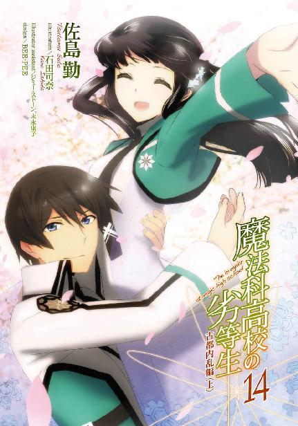
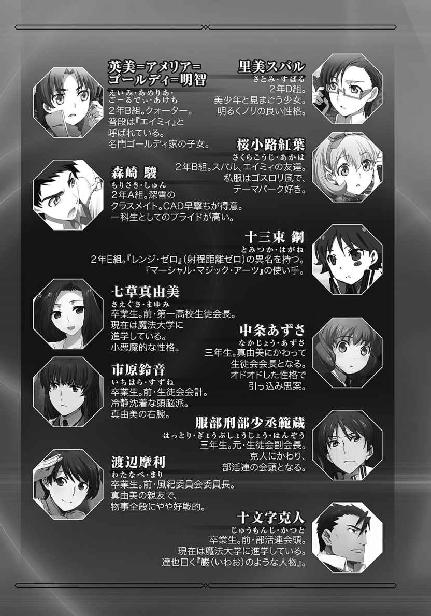
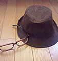

| 魔法科高校の劣等生(14) 古都内乱編〈上〉 (電撃文庫) | |
| 佐島 勤 | |
| (2016) | |


本書（電子版）に掲載されているコンテンツ（ソフトウェア／プログラム／データ／情報を含む）の著作権およびその他の権利は、すべて株式会社ＫＡＤＯＫＡＷＡおよび正当な権利を有する第三者に帰属しています。
法律の定めがある場合または権利者の明示的な承諾がある場合を除き、これらのコンテンツを複製・転載、改変・編集、翻案・翻訳、放送・出版、公衆送信（送信可能化を含む）・再配信、販売・頒布、貸与等に使用することはできません。




［１］
九重八雲が住職を務める「九重寺」は旧東京都府中市の小さな丘の上にある。力仕事のボランティア活動に熱心な寺として──寺の人間に聞くと「修行の一環」らしい──御近所に親しまれ、町の風景の欠くべからざるパーツとして地域社会に溶け込んでいる。
だから余計に、もし町の人間が古い詳細な地図を見る機会があったなら驚くことになるだろう。古いと言ってもせいぜい百年前で構わない。それが本物の地図であるならば。
元々ここに寺は無かったと知って。
こんな所に丘は無かったと知って。
二十年世界群発戦争後期、調布飛行場を中核として調布、府中、三鷹の武蔵野地区に首都圏防衛部隊が配置された。その為、兵民分離の原則に基づき、これらの地区の住民は十年ほど疎開していたことがある。九重寺の建っている丘はここに大規模地下防衛施設を作る際、掘り起こされた残土を集めて出来上がったものだ。
残念ながら首都圏も戦争の被害無しというわけにはいかなかったが、この「武蔵野対空要塞」のお蔭で旧都区部の被害はゼロに抑えることができた。その反面、防衛陣地は複数の勢力から攻撃を受けることになったが、その意味からも住民の疎開は無駄でなかったと言える。
それで町と住民の結び付きにブランクが生じたのは、やむを得ないことだ。人々が自分たちの「住処」に戻って来たのは戦争が終結し、国費で町が再建された後だった。もっとも、完全に元通りにはならなかった。
地下防衛施設は解体されず出入り口を封鎖するだけで済まされたし、区画整理に伴い結局元の住居に戻れない家庭も少なくなかった。いち早く導入された先進的な交通システムが町の景色を少し未来的なものに変えた。
追加されたのは少人数高密度運行型公共交通機関「個型電車」を走らせる高架軌道だけではない。それ以外にも新しい物、伝統的な物、大小様々な施設が町の風景に追加された。「小さな丘に建つ大きな寺」、つまり九重寺もその一つだ。
この寺はちょっと、いや、かなり普通とは言い難い由来を持っている。先代の住職、つまり八雲の師匠が魔法技能師開発第九研究所に協力した代償に、弟子──僧侶としての弟子というよりむしろ「忍」としての弟子という意味合いが強い──を育成する拠点として手に入れた施設であり住居だった。
その為九重寺の外観は、カモフラージュを狙って殊更古風に作られている。塀の内側も地上部分は二十世紀を意識したスタイルになっていた。
それに反して訓練用施設がある地下は深く、深く掘り下げられ、地上部分の敷地より広い空間が最先端技術で固められている。古式魔法の訓練に止まらず、現代魔法の訓練施設としても当時で最高レベルの物だった。
風間が達也を八雲に紹介したのは、この地下施設を踏まえた上でのことだ。体術の師としても八雲の技量は超一流。だが風間の思惑は、達也の体術向上だけを目的とするものではなかった。彼は達也を普通の白兵戦要員として軍に引き込んだのではない。あくまでも前線で活動できる、極めて強力な魔法師としての働きを期待していた。
体術の指導と、魔法の訓練が可能な施設。達也の家が九重寺から隣町と言って良い近距離にあると知った時、風間にこれを利用しないという選択肢は無かった。
達也は今、九重寺地下訓練施設の最下層に来ている。この訓練室の壁と床と天井は、内側から厚さ十センチのコンクリート、厚さ三十センチの鉛、厚さ六十センチの中性子遮蔽コンクリートの三層構造になっていた。
核シェルターではない。あくまでも魔法の訓練室だ。それが何故、これほど厳重な放射線の遮蔽措置が必要になるのか。それは二十一世紀の魔法がどのように発達してきたか、その歴史に理由があった。
現代魔法の研究と開発は西暦一九九九年、一人のアメリカ人警察官が核テロリズムの実行を当時はまだ超能力と呼ばれていた異能で阻止した事件に端を発する。この経緯から、現代魔法の開発はその初期段階において核の脅威に対抗する手段、具体的には核分裂の停止、制御、放射線の遮断、無害化を主目的としていた。
重点的に研究された甲斐あって、ニュートロンバリアやガンマ線フィルターは完成したと言って良い域に達している。それでも今なお、核に抗する術の開発・改良は魔法技能開発の重要な項目に挙げられているのだった。
もっとも、達也がこの部屋でやろうとしていることは放射線遮断魔法の練習でもなければ核分裂制御魔法の改良でもない。ある意味で、その逆だった。
現在、この地下訓練室はプールになっている。といっても泳ぐ為に注水したのではない。肩より上を水面から出した達也は、半袖のトレーニングウェアスタイルで拳銃形態のＣＡＤを手にしている。およそ泳ぐ格好ではないが、顔も髪もぐっしょり濡れていた。
右手に握っているのは愛用のシルバー・ホーン・カスタムではない。そのＣＡＤの飾り気が無い表面は、明らかに試作品だと分かる。何より最大の違いは、銃身部分の先端下部に銃剣のような物が取り付けられていることだ。ような物、というのは刃も切っ先も無い、金属製の厚い板が銃剣と同じように取り付けられているだけだからである。
水の中に沈んだ右手で達也が引き金を引いた。水中で展開した二つの起動式が彼の右腕に吸い込まれる。一つは拳銃形態のＣＡＤから出力されたもの。もう一つは銃剣のような附属物から出力されていた。
魔法式が附属物に作用する。ＣＡＤの先端で水が泡立った。達也が食いしばった歯の隙間から呻き声を上げて膝を折った。右手は重度の火傷で赤黒く焼け爛れ、その痛みで達也はＣＡＤを落としてしまう。
頭の天辺まで水中に沈み、直後、体勢を立て直して立ち上がった。髪が濡れていたのは、これを繰り返しているからだろう。何度も荒く息をつき、右手を顔の前に挙げ握ったり開いたりを繰り返す。火傷の跡が無いのは「再成」を使ったからだが、それでもすぐには違和感を拭えないほど深いダメージを負ったが為の、半ば無意識の仕草だった。
ようやく感覚が戻った右手を水中に伸ばす。その指が浮かび上がってきたＣＡＤを摑む。床に沈んだ時には先端から失われていた銃剣のような附属物も、元どおりに「再成」されていた。
達也が再び水中でＣＡＤを構える。しかし、彼を制止する声が誰もいない、何も無い耳元で低く響いた。
『達也くん、そろそろ真夜中だよ』
空気を振動させる術──発動プロセスが異なるだけで中身はＵＳＮＡ軍魔法師部隊スターズの惑星級魔法師、シルヴィア・マーキュリー・ファーストの術式と同じもの──で、八雲が部屋の外から達也に囁いたのだ。
「......分かりました」
達也の答えは普通に喋っただけのものだが、八雲が術で彼の声を拾い上げているのは分かっていた。
果たして、彼が訓練終了の意思表示をした直後、部屋を満たしていた水が引き始める。完全に水が引くのを待って、達也は発散系魔法で皮膚と髪と服の水気を飛ばした。
彼の魔法力で完全な乾燥状態の実現は望めない。それでも普通に行動する分には問題ない程度まで衣服を乾かすと、壁の向こう側にあるドアのスイッチを加重系魔法で動かした。この部屋はその性質上、隔壁の内側に電気機器を設置できないのである。
（ここは魔法が使えなければ密室だな......）
そんな今更なことを改めて考えながら、達也は地上へ戻る梯子に手を掛けた。──エレベーターは八雲が電源をカットしていた。
◇ ◇ ◇
西暦二〇九六年九月二十三日、日曜日。昨晩の帰宅がギリギリ日付変更前だったにも関わらず、今朝も達也は早朝のトレーニングに出掛けている。それをホームサーバーに残っていたメッセージで確認して、深雪は起きて早々、達也のことが少し心配になった。
無理をするなと言って止める兄ではない。いや、泣き落としを掛ければ少しは言うことを聞いてくれるかもしれないが、多分それも一時的なものにしかならない。女の武器は先月使ったばかり。涙はもう少し大事な時の為に取っておこうと、深雪は諦め混じりに思った。
キッチンでは既に水波が朝食の支度を始めていた。最近では深雪と水波も随分協調が取れていて、食事の支度は当番制に変わっている。元々ホームオートメーションの発達で特別な時でもない限り調理に手間を掛けることは無いのだから、台所を奪い合っている姿は第三者から見て少々滑稽なものであると、二人は遅ればせながら気づいたのだ。
そういうわけで深雪はキッチンを水波に任せて浴室へ向かった。
脱衣所でＨＡＲを操作して達也の着替えを取り出す。そこには下着も含まれていたが、それで深雪が恥ずかしがることは無い。
実は中学三年生の頃、敬愛する兄の物とはいえ男性の下着を前にするシチュエーションでは乙女らしく恥じらった方が良いのでは？ と考えたことがある。しかし、兄の下着を前に頰を赤らめている姿を自分で想像して、「これでは乙女というより変質者だ」と思い直したのだった。──嬉しそうに笑みを浮かべて兄がシャワーを浴びる為の準備に勤しむ姿を第三者が見たならば、色々と手遅れだと思ったかもしれない。決して深雪本人に面と向かって告げたりはしないだろうが。
テキパキと兄が帰宅した時の準備を整えていた深雪は、最後の仕上げにタオルを置こうとしたところでそのまま──つまりタオルを手に持ったまま──玄関へ急ぎ足で向かった。家の中を走るような淑女らしからぬ真似はしない。たとえ兄が見ている前でなくても、兄に相応しくない振る舞いを深雪は心構えとしてできない。
門の生体認証により扉が解錠された音がリビングとキッチンに鳴り響く。水波が調理を監視する目を止めてキッチンから出て来た時には既に、深雪は玄関で待機していた。
「お帰りなさいませ、お兄様」
「ただいま」
「......お帰りなさいませ、達也兄さま」
小さな間は、水波がキッチンから玄関に駆け込んでくるまでに要した時間だ。彼女も解錠のチャイムと同時にキッチンを出たのだが、今朝もまた深雪に水をあけられてしまっていた。この家に来た当初はそのことに悔しさを隠し切れずにいた水波だが、最近ではすっかり諦めている。
それは正しい心掛けだった。戦闘中でもないのに、まだ五十メートル以上離れた所にいる達也の気配を正確に捉える深雪の方がおかしいのだ。水波が呆れ顔を面に出さないのは、むしろ賞賛されても良いくらいだった。
「お兄様、シャワーの準備ができております」
「ありがとう」
タオルを受け取り浴室へ向かう兄の後を、実に幸せそうな笑顔で深雪が追い掛ける。
その姿に、水波はこっそりため息を吐いた。住み込みのメイドでも、この程度のガス抜きは許されるはずだった。
今日は日曜日だが既に述べたような事情で、司波家の朝はいつもどおりのタイムテーブルで進行する。その結果として朝食後は、ゆったりとしたお茶の時間になる。朝餉の準備では水波と妥協が成立している深雪も、達也のお茶は譲っていなかった。水波の方も学習して、甘ったるい雰囲気でダメージを受けないよう、この時間は掃除や洗濯に割り当てるようになっていた。
いつもどおり心を込めて淹れたコーヒーに達也から「お褒めの言葉」をもらってようやく自分も腰を落ち着けた深雪は、
「お兄様、一つお訊ねしたいことがあるのですが」
ふと思い立って、ここしばらくずっと気になっていたことを達也に訊ねてみることにした。
「何だ？」
口調はぶっきらぼうだが、相変わらず妹に向ける達也の声は優しい。深雪はそれに勇気づけられて、最後の逡巡を捨て去った。
「お兄様は何故、今年の論文コンペにエントリーされなかったのですか？ 四月に校庭で行った恒星炉実験で魔工科生徒に課せられた選考論文の提出義務を免除されているのは存じ上げておりますが、参加を禁止されているわけでもございませんよね？」
「ああ、別に出るなとは言われていないよ」
出場禁止という発想がおかしかったのか、達也は唇に笑みを浮かべながら首を横に振った。
「では何故......？」
「時間が無いからだ」
再度問われた深雪の短い質問に対する達也の答えは、同じように短く、妹の問いと違って簡明なものだった。
「それは......お兄様が毎晩遅くまで練習されていらっしゃる魔法に関係があるのですか？」
躊躇いがちに深雪が問いを重ねる。彼女は自分がこれ以上立ち入って良いものかどうか、迷い怖れていたのだが、
「そうだ。よく分かったね」
隣に座る深雪の頭に、達也の手が伸びた。言葉と共に称賛の意味を込めて、達也が妹の髪をそっと撫でる。その優しい感触が深雪の心に残った躊躇を融かした。
「もしかしてお兄様が取り組まれているのは、魔法の練習ではなく新魔法の開発ではございませんか？」
「さすがは深雪だ。俺のことをよく分かっている」
髪に触れた手よりもその言葉の方が深雪にはくすぐったかったが、それが半分以上お世辞、というか冗談であることは彼女にも分かっていた。
既存の魔法を修得する為だけなら、達也があれほど苦労するはずは無いのだ。彼に植え付けられた仮想魔法演算領域は魔法の出力こそ低いものの、魔法式をそっくりコピーして運用するという性質上、魔法式の構造が完全に判明していればどんな魔法でも発動寸前の状態に持っていくことができる。そこから先は処理能力の問題だ。発動可能な魔法であれば練習しなくてもすぐに使えるようになるし、発動不可能な魔法であれば幾ら練習しても実行できない。そして達也の視力と分析力があれば、解析できない魔法式などありはしない。
毎晩遅くまで苦労しているという時点で、それが既存の魔法であるはずはなかった。
「この魔法の開発を始めたのは三月からだ。といっても最初は理論を解明するのに手間取ってね。六月になってようやく魔法式の設計段階にこぎ着けた」
だからとても論文コンペどころじゃなかった、と達也は笑う。しかし、それを聞いていた深雪は笑えなかった。一つにはこの兄が、謎の天才魔工師トーラス・シルバーの理論面を担う「シルバー」が、理論の解明だけで三ヶ月も掛かったという事実。そしてもう一つは、開発を始めた三月という時期。
「お兄様が今、取り組まれている新魔法は......リーナとの対決がきっかけになっているのではありませんか？」
「よく分かったね」
達也の口からもたらされた回答はさっきと同じ言葉だったが、そのニュアンスは随分違っている。今度は本物の驚きと称賛がその中にあった。たったあれだけのヒントでほとんど正解にたどり着いた深雪に、達也は本気で感心していた。
「今開発している魔法はＦＡＥ理論を利用した近距離直接攻撃の術式だ」
「ＦＡＥ理論......ですか？ 確か、リーナの武器に使われていた理論でしたね」
「ああ、リーナが使っていた戦術級の携行魔法兵器『ブリオネイク』の根幹を支える魔法理論だ。......ＦＡＥ、フリー・アフター・エグゼキューション」
達也の声に込められた感慨は、模造神器ブリオネイクを完成させた技術者に対する敬意か、それとも対抗心か。そのどちらかではなく、そのどちらでもあるように深雪には感じられた。
「魔法で改変された結果として生じる事象は、本来この世界には無いはずの事象であるが故に、改変の直後は物理法則の束縛が緩い。それ故に正常な物理法則が作用するまでの短いタイムラグにおいては、通常の事象改変に必要な干渉力よりずっと小さな力で次の魔法を実行することができるという仮説だ」
そこで達也は自分の間違いに気づいて、苦笑を浮かべながら頭を振った。
「いや、仮説じゃないな。ＦＡＥ理論が正しいことは、ブリオネイクで既に実証済みだ」
「お兄様、すみません。今のお話で一点、以前から理解できなかった箇所があるのですが、お教えいただいてよろしいでしょうか」
深雪の質問は単なるお付き合いではなく、これを機会に疑問を解消しておこうという向学心に基づくものだった。単に難解な理論というだけなら、彼女は兄に煩わしい思いをさせるのを避けていたかもしれない。だがＦＡＥはリーナが使った魔法に関わる理論だ。知らないままにしておくことは、深雪にはできなかった。
「良いよ、遠慮は要らない」
「単一工程の魔法でない限り魔法は連続する工程で構成されています。その多くは前の工程による事象改変を引き継ぐ形で次の工程が作用します。しかしそのような魔法でも第二工程以降が楽に発動するという実感は無いのですが、これはＦＡＥ理論に反していませんでしょうか」
「なるほど......」
深雪の質問を聞いて、達也は盲点を突かれたという顔で頷いた。
「そういう誤解は、もしかしたら魔法師の間で一般的なものかもしれないな」
しかしそれは、深雪の指摘が正しいという意味で意表を突かれたのではなく、深雪ほどの優れた魔法師でもそういう誤解をしているという意味で強い意外感を覚えたのだった。
「誤解、と仰いますと？」
「魔法の工程はそれ自体が独立した魔法じゃないということだよ」
達也の短い説明に、深雪は戸惑いの色を浮かべている。
もちろん達也は妹が理解できるまで説明するつもりだった。
「例えばこの魔法」
そう言って達也はシュガーポットの蓋を開け、中に入っていた角砂糖を一個、魔法により目の高さまで浮かせそこで保持、一秒後に再びシュガーポットへ戻した。
「お兄様......調味料とはいえ、食べ物を粗末にされるのは如何かと存じますが」
「あ、ああ、すまん」
そして、それを見ていた深雪からすかさずたしなめられて、言い訳を思い浮かべる余地もなく謝罪する羽目になった。
兄が素直に謝った姿に、深雪は満足げな笑みを浮かべている。
「それでだ」
そこに長幼の序列が逆転したような居心地の悪さを覚えて、達也は少し強引に話を戻した。
「お前には言う迄も無いだろうが、今使った魔法は初歩的な術式として練習用にもポピュラーな『浮遊』。角砂糖を空中に浮かべる加重系反重力魔法工程、角砂糖を空中に保持する移動系停止魔法工程、角砂糖をゆっくりシュガーポットへ向かって落下させる加重系重力制御魔法工程、角砂糖に衝撃を与えずシュガーポットの中で停止させる移動系停止魔法工程の、合計四工程の魔法だ。だがこの表現は、言われてみれば確かに誤解を招きやすい」
「何処が間違っているのでしょう？」
「間違えているわけじゃない。ただ、四工程の魔法、その各プロセスが独立した魔法だという錯覚を引き起こす」
「それは......錯覚なのですか？」
意外なことを言われて戸惑いの続く深雪へ、達也は深く頷いた。
「浮遊は四工程の魔法だが、その四工程で一つの魔法だ。魔法を発動する段階で最後の停止プロセスまでの魔法式を構築し変数を定義し終わっている。もしこの四工程全てを賄う魔法力がなければ」
達也はそこで言葉を切って、深雪の理解を確かめるようにその瞳をのぞき込んだ。
「魔法は途中で中断されるのではなく、最初の反重力プロセスから作用しない」
深雪がハッとした表情を浮かべた。
「そうですね......各工程が独立の魔法であるなら、魔法力が足りなくなった時点で魔法は中断されるはず......最初から発動しないという結果にはなりません」
独り言のように呟きながら、深雪はたった今達也に教わったことを懸命に咀嚼する。
「魔法の工程は、それ自身が独立の魔法ではない。あくまでも一つの魔法の一部。そういうことなのですね、お兄様」
「そのとおりだ。さすがは深雪、理解が早いな」
達也に笑顔を向けられて、深雪が恥ずかしそうに目を逸らす。純粋に恥じらったという面もあったが、今回はこの程度のことを教わるまで理解していなかったということに対して恥入る気持ちの方が強かった。
達也は皮肉で褒めたのではなく、本気で深雪のことを称賛している。それが分かるから余計に、この兄の妹でありながらこの程度のことが分からなかった自分が深雪は情けなかった。
しかし、いつまでも顔を背けているわけにはいかないと思ったのだろう。深雪は無理に浮かべた笑みを達也へ向けた。
「まあ、こういうことは幾ら理屈で分かっていても、実際に体験しなければ感覚的に誤解してしまいがちだ。魔法は学問ではなく技能だからな。魔法が発動しなかったという経験を持たなければ、その原因に悩むことは無い」
達也は人の情に敏い方ではないが、相手が深雪であれば話は別だ。妹が落ち込んでいると見るや、すかさずフォローに回った。
「それに今重要なのは魔法を失敗する理由ではなく、魔法の工程があくまで便宜的なものにすぎないという事実だ。起動式から魔法式を構築するという現代魔法のスキームが形成されるに当たり、起動式を効率よく記述する為には魔法式を工程というモジュールに分解した方が都合が良かったからでしかない」
そしてまた、兄に励まされているということが分からない深雪でもない。達也が自分を気遣ってくれた。それが嬉しくて、無理に作った彼女の笑顔から少し硬さが取れた。
「お兄様の仰ることが、わたしにもようやく分かりました」
深雪は軽く自分の頭を小突く真似をして、「すみません、鈍くさい妹で」とおどけた笑みを浮かべた。その表情は、整いすぎている美貌が冷たさすら醸し出す普段のイメージとの大きなギャップを感じさせるもので、達也が現実逃避気味に意識を飛ばし掛けてしまうほどの威力を放っていた。
「魔法の工程はあくまで魔法の一部。だから魔法による事象改変も全工程を通して一つ。一つの工程が終わってもそれはまだ事象改変の途中経過にすぎないから魔法によって改変された事象には当たらず、ＦＡＥ理論が説く事象改変の難易度低下は起こらないということですね？」
「......そうだ。満点だよ、深雪」
可愛く小首を傾げた妹に、達也はまたしても意識を持って行かれそうになった。深雪の回答を吟味する風を装って不自然に生じた沈黙を誤魔化した達也だが、本当に妹を誤魔化し遂せたかどうか、彼には今一つ自信がなかった。
爛漫の花を咲かせた深雪の笑顔は、達也の詮索を野暮なものと拒んでいた。
◇ ◇ ◇
休みの日にあの二人は、一体どういう風に過ごしているのか。
達也と深雪の兄妹をある程度知っている上級生、同級生、下級生──それはつまり一高生の大多数ということになるのだが、彼らは皆、一度はこの疑問に遭遇する。そして、
──一日中、熱愛中の恋人同士のようにいちゃいちゃ過ごしているのではないか。
──いやいや、幾ら何でもそこまでは......せいぜいデートに明け暮れている程度では？
──いや、甘い。あの二人ならきっと、とことん行き着く所まで......。
という具合に色々想像（妄想？）を広げることになる。
彼らの想像は部分的に当たっている。二人が休みの日に大層仲良く過ごしているのは事実だし、デートにも行く。
ただし、毎回ではない。実のところ達也は、日曜日に家を空けることが多い。ＦＬＴの研究所に出向くか、独立魔装大隊に呼び出されるか、この二つのケースがほとんどだが、水波が司波家に来てから深雪を一人にする心配が無くなったからか、その頻度は高くなった。
だが今日は、ここ最近では珍しく、達也に何の予定も入っていなかった。深雪も「お出掛けしたい」とは言わなかった。週末に生徒会長選挙が控えているから、という理由ではない。修行で消耗している達也の体調を慮ってのことだ。
だから本音を言うと、今日の深雪は客を迎える気分ではなかった。それが親しい友人であっても。まして、親しくはあっても気が休まらない、味方だと分かっていても気を緩められないこの二人を家に上げるのは気が進まなかった。
しかしそれは深雪個人の感情にすぎない。しかも「兄の為」という理由なのだから、達也が拒否の姿勢を見せない以上、深雪も（表面的には）歓迎しないわけにいかなかった。
「文弥、亜夜子、良く来たな」
「文弥くん、亜夜子ちゃん、いらっしゃい」
水波に案内されてきた二人にソファを勧め、腰を落ち着けたところでフレンドリーに話し掛ける達也と深雪。既に述べたような理由で深雪の態度は多分に社交辞令的なものだし、達也は相手が誰であろうと──ただ一人の例外を除いて──本心から気を許したりはしない。だが外から見える二人の態度は一分の隙もなく友好的で親愛の情を示していた。
「達也さん、深雪お姉さま、お邪魔いたします」
「達也兄さん、深雪さん、お久しぶりです」
司波兄妹のあいさつに対して、黒羽姉弟の返礼は硬かった。二人が達也たちに比べて著しく未熟ということはないはずだ。年齢でいえば六月生まれの双子は三月生まれの深雪と同じ十六歳になっている。十六歳が大人か子供かという問題はとりあえず横に置いておくとして、余程のことがない限り緊張を隠すくらいの真似ならこの二人は容易にこなしていたはずだ。
つまり今日はその「余程のこと」に該当する用件があって来たのだろう。達也も深雪も二人の様子からそう判断した。
「そういえば文弥、先月は水波が世話になったな」
達也にいきなり感謝を告げられ戸惑う文弥に、ソファの横に立つ水波がペコリと腰を折った。
「お前が警備員を排除してくれたお蔭で俺も手間が省けた」
「あ、ああ......あの件ですか」
警備員の排除という言葉で、文弥はようやく九校戦最終日に水波が乗るワゴン車を取り囲んでいた警備員を昏倒させた件だと思い至った。
「いえ、大したことではありませんので」
気にしないでください、と続けようとした文弥だが、
「その恩返しというわけではないが」
達也がセリフをかぶせる方が早かった。
「何か力になれることは無いか？」
思いがけない言葉に絶句する文弥。その隣で亜夜子が大きくため息を吐いた。
「......まったく。達也さんには敵いません。他人の気持ちなんてまるで興味無しというクールなお顔で、こんな不意打ちを仕掛けてくるのですもの」
困ったものだとでも言いたげな表情で頭を振り、隣で固まっている双子の弟に目を向ける。
「文弥、お言葉に甘えましょう。元よりわたくしたちはただの使者。選択肢など無いのですから」
「う、うん。そうだね......」
文弥は観念した顔で頷き、日曜日にも拘わらずきちんと着ていたジャケットの内ポケットから普通サイズの封書を取り出した。
表書きは空白。差し出された封筒を手に取りひっくり返して、達也は軽く眉を顰めた。兄の手元を横からのぞき込んでいた深雪は無言で息を吞み片手を口に当てる。
裏書きには彼女たちの叔母、四葉真夜の名が記されていた。
「ご当主様より、直々にお預かりしてきました」
文弥の言葉に、深雪が兄の横顔へ目を向ける。達也は深雪に頷きを返し、素早く動いた水波の差し出すペーパーナイフを受け取って封を開いた。
封筒の中身は便箋一枚の簡単なもの。達也は最後までじっくり目を通して、彼が読み終わるのを行儀良く待っていた深雪に手渡した。
「文弥はここに書かれている内容について、知っているのか？」
文弥はわずかに躊躇を見せたが、
「知っています」
姉に助けを求めたりせず自分で答えた。
「そうか」
今度は達也が深雪へ視線を向ける。深雪はちょうど便箋を読み終えたところで、達也に「お任せします」という意思を込めて小さく首を縦に振った。
「ここには周公瑾の捕縛について協力を依頼する、と書かれているが？」
「僕もそう聞いています」
達也が、今度ははっきり眉を顰めた。
「そうか。依頼というのは言葉の文ではなく、そのままの意味なんだな」
文弥と亜夜子が揃って頷いた。
深雪が腰を浮かせて身体を達也へ向ける。
「お兄様......叔母様が何故、わたしたちに『依頼』するのでしょうか？」
依頼などしなくても命じれば良いではないか、という疑問。それは達也も全くの同感だった。
「その点についてはわたくしがご伝言をお預かりしております」
「伝言？ 書面にも残せないということか？」
一般に、電子データより紙の書類の方が秘匿性は高い。その書面に残すことすら憚られる伝言とは一体どのような内容のものなのだろうか。
しかし亜夜子はその問いに、直接答えることはしなかった。
「今回のお仕事は、お断りになられても構わないそうです」
「叔母様がそのようなことを!?」
深雪が思わず声を上げ、達也に向かって恥ずかしそうに「失礼しました」と呟いた。
妹が仰天する理由を達也は理解していた。だが彼自身は、それほど驚いていない。真夜は四葉家の当主だが、その四葉家における達也の身分、ガーディアンの性質上、彼に対する命令権は深雪が最上位だ。また四葉家と国防陸軍一〇一旅団の間で交わされた秘密協定では、深雪の護衛に関わる任務を除き、一〇一旅団に優先権が設定されている。
深雪は四葉家の力を絶対視している、というより他の魔法師集団や軍事勢力の実力を良く知らない為に、真夜の命令に逆らうことなどできないと思い込んでいるところがある。しかし実際には真夜も、四葉家の制度や軍との約定を無視できない。そしてこれらの定めに従えば、真夜が達也に命令できることはあまり無いのである。
達也が真夜に従っているのは、まだ敵対する時期ではないと考えているからだ。そしてその判断は、相手が下手に出ているからといって変わることはない。
「文弥、叔母上に『承りました』とお伝えしてくれ」
深雪と亜夜子が意外感を隠し切れない眼差しを達也へ向けた。
「確かにお伝えします。......すみません、達也兄さん」
そして文弥は、達也に向かって深々と頭を下げた。
「何故文弥が謝る？」
「周公瑾の捕縛は黒羽に与えられていた任務です。僕たちが不甲斐無いばかりに達也兄さんの手を煩わせることになってしまって......」
文弥が「不甲斐無い」と言っているのは先月真夜の命により横浜中華街へ周公瑾の捕縛に出動した際のことだ。あの時は当主の貢が片手を食い千切られる重傷を負わされた挙げ句、黒羽家実行部隊による包囲網を破られ周に逃亡を許してしまった。
達也の質問に答えた文弥の顔には「情けない」と書かれていた。
「文弥、他人の手を借りるのは悪いことじゃないぞ」
その姿に、達也は柄にもなく兄貴風を吹かせる。
「これが黒羽の仕事だというならなおのこと、お前は自分の感情を押し殺してでも積極的に俺を頼るべきだ」
「達也兄さん......？」
「自分たちに任せられたことは自分たちだけでやり遂げたい、という気持ちは理解できる。だが任務を成功させることの方が優先される」
自分のことは自分の力だけで、というのは少年的な完全主義の発露であり子供の持つ危うい潔癖症の一面だ。
「お前や俺の仕事には、失敗が許されないものもある」
達也の声は厳しい。しかしそこには、深雪が羨むほどの優しさが隠れている。
「......そうですね。失言でした」
文弥も、誰に教わるまでもなく、達也が自分のことを心配してくれていると理解していた。
「すみません、ではありませんね。達也兄さん、ありがとうございます」
再び頭を下げた文弥に、達也は満足げな頷きを返した。
「ではこれまでに判明していることを教えてくれ」
それ以上彼は説教じみたことを言わず、実務的な話に入った。
「分かりました。周公瑾は横浜脱出後海路西に向かい、太平洋に逃れようとしたところを何とか阻止。伊勢に上陸した後北上した周を琵琶湖大橋で捕捉しましたが、またしても捕り逃がしてしまいました。そのまま京都方面へ潜入したと思われます。現在手の者を動かして大原周辺を捜索中です」
「支援者についての情報は？」
「『九』の各家と対立関係にある古式魔法師の組織『伝統派』が逃亡を支援していると見られます」
「伝統派か」
「達也兄さん、ご存知なのですか？」
「八雲師匠から少し聞いたことがある。国内のはぐれ古式魔法師を集めているだけでなく、大陸から亡命してきた古式魔法師──方術士も取り込んで組織強化を図っているらしいな。そういえば九島家にも亡命方術士がいたらしいが、九島が手を貸している可能性は無いのか？」
「その心配はありません。九島にいた方術士は周公瑾が横浜から逃亡した直後に旧第九研から逃げ出し、伝統派と合流しています。このことは九島家に照会しただけではなく、直接確認も取っています」
「伝統派と『九』の各家が裏で手を結んでいるなどということもあり得ない......九島の寝返りを心配する必要は無いか」
「達也さん？」
宙を睨み何事か考え込んでいる達也へ遠慮がちに問い掛けたのはそれまで弟に説明を任せていた亜夜子だった。
「いや、すまない。参考になったよ」
労う言葉の中に「質問はこれで終わり」というサインを見つけて、亜夜子は文弥と共に席を立った。
達也と深雪が文弥と亜夜子を玄関まで見送りに出ている隙に、水波は素早くテーブルの上を片付け、代わりの紅茶を用意した。主（深雪）を出し抜いて心苦しい、という気持ちは既に水波の中から消え去っている。深雪を主として敬う気持ちはきちんと持っているし、魔法師としての尊敬と女の子としての憧れも水波の内にはある。しかし同時に、メイドの仕事を取り上げる少し困ったご主人様で、はた迷惑な重度のブラコンという認識もあった。
ティーカップを持ってリビングに戻ってきた水波は、達也からつい今し方まで文弥が座っていたソファに腰を下ろすよう命じられた。仕方なく達也と深雪の前にティーカップを置いて座に着くと、達也が微かに眉を顰めた。
「あの、達也さま......？」
水波の中では達也の方が深雪よりも常識人として位置づけられている。つまり、より主人らしい相手だ。何か粗相があっただろうか、と水波が不安に駆られたのも大袈裟な反応ではない。
「水波、お茶をもう一つ追加してくれ」
「はい......？」
自分は今、間抜けな表情を曝しているだろう......という自覚はあったが、戸惑いが顔に出るのを水波は止められなかった。
（この時間から、またお客様が来るのでしょうか？）
「そうじゃない」
本人は気づいていなかったが、水波の顔には戸惑いだけでなく疑問まで浮かび上がっていた。
それを見て取った達也から、微かな苦笑と共に訂正が入る。
「話が長くなりそうだから、自分の分も用意してくれ、という意味だ」
達也の解説で水波の疑問は解消されたが、同時に新たな戸惑いが生まれる。
しかしそれも達也にはお見通しだった。
「俺と深雪に飲み物があって水波に無いというのは居心地が悪い」
「......少々お待ちください」
水波はよく分からない敗北感に打ちのめされながら、すごすごとキッチンへ戻った。
水波が自分のカップを持参してソファに戻るのを待って、達也は真夜の手紙をテーブルに広げた。便箋一枚に、短く用件だけが書かれている。彼は「精霊の眼」を使って封筒と便箋に付随する情報を読み取ってみたが、特に細工が施された形跡は無かった。
「つまり、叔母上の用件は本当に周公瑾の捕縛を手伝えということだけのようだ」
それを説明すると、深雪の顔に猜疑の色が濃く浮かんだ。
「何故叔母様は、今回に限って命令ではなく依頼の形を取られたのでしょうか」
「確かに気になる。正解は叔母上に訊かない限り分からないことだが......」
達也は深雪を見て、それから水波に目を向けた。
厳しい視線、というわけではなかった。にも拘わらず、水波の背筋に緊張が走る。
「二人は気づいていないかもしれないが、本来叔母上は俺に命令する権限を持たない。正確に言えば、叔母上の命令権は優先順位が低い」
深雪と水波が驚きと意外感を露わにする。二人揃って口に手を当てているのはマナー教育の賜か、それともメイドが主人の影響を受けたのか。
「深雪の安全確保が最優先であることは言うまでもないが、次に優先されるのは独立魔装大隊の任務だ。叔母上の命令権はそれに次ぐ第三順位となる」
深雪が隣で身動ぎしたのが達也に伝わってきたが、彼はそれ以上の注意を向けなかった。達也の言葉に意識を集中していた水波も、身悶えしかけた深雪のブラコン反応にいつものような冷たい視線を向けはしなかった。
「しかし今まで叔母上は、俺に仕事を指図する場合、常に命令という形を取ってきた。もしかしたら俺が任務中でないのを何らかの手段で知っていたのかもしれないが、とにかく、それが普通だった」
達也はそこでティーカップに手を伸ばした。喋っていて喉が渇いたのか、あるいは紅茶を飲む裏で考えを纏めていたのか。カップをソーサーに戻す動作は、いつもより少しゆっくりしたものだった。
「普通ではない方法をとるからには、普通ではない事情があるのだろう。例えば今回の任務が特別な対処を必要とするものである、といった」
水波の顔に納得が、深雪の顔に不安の色が浮かんだ。
「それは、今回の任務が特に危険なものということでしょうか？」
「黒羽家当主に重い傷を負わせ、今なお四葉の追跡から逃れている相手だ。捕獲するにしても始末するにしても、容易ではないだろう」
達也はそう答えながら、「心配するな」というように深雪の髪を優しく撫でる。その手つきに達也が口で言っているほど危険な任務とは考えていないことを感じて、深雪は落ち着きを取り戻した。
「問題になるのは任務自体の難易度ではない」
しかし達也が髪を撫でていた手を離して告げた次のセリフに、深雪の顔と、水波の顔にも緊張が戻る。
「ターゲットが何処にいるのか分からないという状況は俺にとって初めてのものだし、四葉にとっても珍しいものと言える。そもそも四葉家の手から逃れられる技量の持ち主など俺の知る限りいなかった」
達也は今回の仕事の難しさを思ってため息を吐いた。
「そういう状況、そういう相手だ。長期の任務になることは避けられないだろう」
深雪の顔に浮かんだ表情が、緊張から不安と寂しさに変わった。それを見て達也は、やや早口に次のセリフを継ぎ足した。
「家を長期間空けるという意味ではない。学校もあるし、そもそも俺には捜索のノウハウが無いから居所を見つけるのは他の人間に依頼しなければならない。俺の出番は、周公瑾を見つけてからだろう」
「......戦いになるのですか」
「深雪、そんな顔をするな。俺一人で相手をするわけじゃない。俺に求められている役割は、ターゲットの逃げ道を塞ぐことだろうからね」
そう言いながら達也は自分の目を指差す。
その意味を理解した深雪がホッと息をついた。
「ただ時々は家を空けなければならない日も出てくるだろう」
話が違う、という深雪の拗ねた眼差しを、達也は見なかったことにした。
「その時は水波、お前が深雪を守るんだ」
何故自分がここに座らせられたのか、その理由が水波にはよく分かっていなかった。その所為で、それまで何となく他人事のような気持ちで達也の話を聞いていた。
「はいっ！」
だからそれは、ある意味不意打ちのようなものだった。水波は自分に与えられた魔法師としての、ガーディアンとしての任務を達也から改めて聞かされ思わず背筋を必要以上に伸ばしてひっくり返る直前の声で答えてしまった。
彼女の「はひっ！」とも聞こえる返事に、達也は苦笑も浮かべなかった。
「魔法力で言えば、深雪の方が水波よりも強い。実戦を想定しても深雪の方が使える魔法は多いだろう。だがそんなことは関係ない」
「──はい」
達也の真剣な声に感応したのか、今度は水波もしっかりした答えを返した。
「水波、四葉家にとってお前は深雪のガーディアンだ。しかし俺にとってはそれ以上に、お前は数少ない、信を置ける魔法師だ」
達也の声は、暗く重い。水波を送り込んだのは真夜で、そこに隠された意図があると達也は気づいているし、水波も気づかれていると知っている。その上で達也は、水波を信用していると言う。自分の目で判断して、信用できると言っている。
「俺が留守の時は、深雪のことを頼んだぞ」
「お任せください」
水波はその信用から目を逸らさなかった。
◇ ◇ ◇
黒羽ファミリーは仕事の性質上、出張が多い。その為、日本各地に定宿のホテルがある。主要都市には四葉の息が掛かったホテル、あるいはもっと直接的に四葉の資金が入っているホテルが用意されている。今回文弥たちが泊まっているのも、そうした四葉傘下のホテルだった。
だから四葉本家当ての電話も、盗聴を気にせずに掛けられる。
「ご当主様の書状は確かに達也兄さんへお渡ししました。その上で達也兄さんからの伝言をお預かりしています」
文弥は今日の首尾を四葉本家に報告しているところだった。
『達也殿は何と？』
彼がコールしたナンバーは真夜に通じる直通番号だが、偶々電話に出られない状態だということで代わりに葉山と話をしている。当主から命じられた仕事の結果を執事に報告することについては、「葉山さん相手の方が気楽だ」という理由で文弥は気にしていない。
「承りました、と仰いました」
「他には？ 例えば奥様のご依頼を引き受けなかった場合の、お咎めの有無について何も言及されませんでしたかな」
「いえ、そのようなことは何も」
「そうですか。文弥殿、亜夜子殿もお疲れ様でした。今後の細かな打ち合わせについては私の方から達也殿へ連絡いたします」
「そうですか。よろしくお願いします」
文弥がそう言うと、葉山が画面の中で恭しく一礼した。これで話は終わりということだ。文弥も一礼して彼の方から通話を切った。
「これで任務完了かな。今回は本当にお遣いだけだったわね」
二人の電話を横で聞いていた亜夜子が、報告を終えて大きく息を吐いた文弥に気の抜けた声を掛けた。その言葉面だけを見れば手応えの無い任務に不満を漏らしているようにも思われるが、彼女の表情を見れば簡単に終わったことをむしろ歓迎していると分かるだろう。
「まだ六時か。余裕で家に帰れる時間だけど、どうする？」
亜夜子の問い掛けに対して、腰を下ろした文弥は首を横に振った。
「いや、今日はこのまま泊まっていこう。せっかく本家が三間続きのスイートなんて贅沢な部屋を用意してくれたんだから」
「この程度で贅沢なんて......。そんな小市民的なことでは真夜様の代理どころかお父様の代わりも務まらないわよ」
弟の軽口を軽い口調でたしなめた後、亜夜子はその「軽口」に文弥らしからぬ皮肉げな毒が混ざっていたことに気づいた。
「文弥。貴方、今回のお仕事が不満なの？」
亜夜子は声音を改め、あえて単刀直入に弟の真意を問い質した。
「任務それ自体に不満があるんじゃない」
文弥は逆説的な表現で、今回の任務に関わる不満があることを告白した。
「使者も大事な任務だということくらい分かっているし、達也兄さんに真夜様の書状を届ける役目は僕が最も適しているということも理解している。でも......」
「書状を届けるに当たって課せられた条件が文弥は気に入らないのね？」
文弥が濁した言葉を、亜夜子が優しい声で補足した。
「だってそうじゃないか！」
亜夜子の、「姉」の声に文弥が抑え込んでいた感情を爆発させる。
「尾行に手を出してはならない、尾行を撒いてもならないって、何だよ一体！」
それが今回、文弥に課せられた条件、というより制限だった。
最初、真夜から直々に「この封書を達也さんのところへ届けなさい」と命じられた時、文弥に使い走りをさせられるという不服は無く、彼はむしろ嬉しかった。達也に会いに行けるということも単純に嬉しかったし、真夜があまり仲が良いとは言えない（ように見える）達也へ依頼を出す、その仲介を任せられることに対する満足感もあった。
しかし真夜が席を外した後、四葉家使用人序列第二位で主に受注した「仕事」に付随する様々な手配を担当している花菱執事から今回の仕事に関する注意事項として先程の制限を聞かされ、文弥は冷や水を浴びせられたように感じた。達也に会えるのが嬉しくなくなったということではない。彼が懐いたのは失望ではなく懸念だった。
「尾行されていると分かっていて手出しできないなんて！ お蔭で何処の誰とも分からない輩にみすみす達也兄さんと深雪さんの家を教える羽目になったじゃないか！」
「大丈夫よ、文弥。相手が何者であろうと、達也さんと四葉の関係を暴くことはできないわ。本人はご存じないでしょうけど、達也さんのパーソナルデータは調べれば調べるほど四葉とは無関係という結論になる。そういう風に操作されているんだから」
亜夜子の掛けた慰めの言葉は、残念ながら今の文弥にはあまり効果が無かった。
「僕はそんなことを心配しているんじゃないよ。今の時期に僕たちを尾行するヤツらなんて周公瑾を匿っている勢力に決まっている」
文弥の断定を、亜夜子は「考えすぎ」と否定しなかった。横浜から逃れた際、周公瑾は追跡者が黒羽であることを認識していた。そして文弥と亜夜子の二人は本家の命に従い、先月の九校戦で自分たちが黒羽であることを殊更目立つように示している。
「ただでさえ達也兄さんには黒羽の不手際で迷惑を掛けるのに、僕たちが尾行を許した所為であいつらに狙われることになるかもしれないんだ。僕はもう、達也兄さんに顔向けできないよ」
俯き、悲壮な声で嘆く文弥。
「文弥」
亜夜子はその前に立って弟の名を呼んだ。
「なにゅ!?」
顔を上げた文弥の両頰を、亜夜子が左右に引っ張った。
「何するんだよっ」
文弥はすぐに姉の手を振り解いたが、亜夜子は結構容赦無く引っ張っていたと見えて彼の頰は真っ赤になっていた。涙目で抗議する弟に亜夜子は一瞬、実に楽しそうな、サディスティックな笑みを浮かべ、すぐに表情を取り繕った噓くさい笑顔に切り替えた。
「姉さん？」
胡散臭いと思っていることが丸分かりな声で、文弥が姉に説明を求める。
「もっと肩の力を抜きなさい、文弥。貴方の不注意でつけられたのならともかくも、本家のご指示だったのだからどうしようもないでしょう？ 貴方が責任を感じることじゃないわ。それに達也さんなら襲われるようなことがあっても大丈夫よ。もしちょっかいを掛けられるようなことがあっても、逆に相手の尻尾を摑んでくれるでしょう」
「姉さん......」
椅子に座った文弥が、その前に立った亜夜子を上目遣いに睨みつける。第三者が見れば──文弥本人にとっては不本意なことに──可愛いとしか言えない表情だったが、亜夜子は言いしれぬ迫力を感じて仰け反っていた。
「何だかもっともらしいことを言っているけど、さっき面白がっていたのをちゃんと見てたからね」
「い、いやね、文弥。そんなはずないでしょう。あっ、このまま帰らないんだったら荷物の整理をしなくちゃ」
「たった一泊で整理しなきゃならないほどの荷物はないだろ！」
「じゃあ文弥、晩ご飯の時にね」
「あっ、こら、逃げるな！」
逃げるなと言われて余計に逃げ足を速めるのは、泥棒に限ったことではない。
亜夜子は自分の部屋に逃げ込んで、文弥が追いつく前にカチャリと鍵を掛けた。
◇ ◇ ◇
今年の「全国高校生魔法学論文コンペティション」まであと一ヶ月と少し。しかし一高生たちの話題の中心はまだ、論文コンペのことではなかった。
「今年は去年みたいな波乱は起こらないだろうな」
「起こりようがないって。そもそも投票自体、要らんだろ。仮に対抗馬が立ったとしても司波さんの圧勝に決まっている」
「司波さん、良いよなぁ......。早く演説会にならないかなぁ......。くそっ、あの兄貴さえいなけりゃ」
「バカだなー。あの兄貴がいるから司波さんには彼氏ができないんだぜ？ 芸能人と違って裏切られることは無いんだ。最高じゃないか」
という二年生男子の会話や、
「司波さん、誰を役員にするのかしら」
「気が早い......こともないわね。例年信任投票だし、今年は特に彼女の対立候補になろうっていう猛者はいないでしょ」
「一年の七草さんはそのまま副会長に持ち上がるとして、会計は光井さんかな？」
「えっ？ お兄さんが持ち上がりじゃないの？」
「お兄さんって......彼、年下よ？」
「いやぁ、そうなんだけどさ。彼って何だか『お兄さん』って感じがしない？」
「それを言うなら『お兄様』じゃない？ 私もあんな『お兄様』が欲しいかも」
「はいはい。それでその『お兄様』が会計になるんじゃないの？ だってさ、他の人じゃ司波さんのこと、抑えられないよ？」
「あー、去年みたいなことになったらねぇ......」
という三年生女子の会話。他にも似たようなお喋りが、食堂のあちらこちらから聞こえてくる。今の一高生の関心は、今週末に迫った生徒会長選挙に向けられていた。
もっとも、今年もほぼ間違いなく対立候補のいない信任投票。
また今年は去年の生徒会役員の選出資格に関する規定変更のような、生徒総会における大きなテーマも無い。男子生徒の話題は演説会で見られるに違いない深雪の艶姿に、女子生徒の話題は誰を役員に選ぶかに集まっていた。
「達也くん、『お兄様』だって」
「エリカ、盗み聞きは行儀悪いぞ」
彼らの会話は、当事者の一人である達也のテーブルにも届いていた。いや、声だけではない。あからさまに目を向けてくる恥知らずはいないが、こっそりこちらを窺い見る視線はさっきから何本も達也のアンテナに引っ掛かっている。
今、同席しているメンバーは達也、エリカ、レオ、美月、幹比古の五人。深雪が同席すると視線が集まりすぎて鬱陶しいので、彼女は遠慮して生徒会室で昼食を取っている。ほのかと雫はそのお付き合いだ。ほのかも恋より友情を選んだ、ということではなく、彼女も当事者の一人で視線の暴力から避難しているのだった。
「達也、今年は会長選挙に出ないのか？」
「去年も立候補していたわけじゃない」
レオの質問は去年の開票結果を踏まえたもので、達也の答えは去年の得票が無効だったのを改めて強調するものだ。去年、大量発生した無効票については、不名誉で恥ずかしいあだ名をつけられてしまった深雪だけでなく達也にとっても不本意なものだった。
「まあ、今年は去年のような騒ぎになんてならないんじゃない？」
達也をあまり刺激するとまずい、と思ったのか、エリカが取りなすようにそう言うと、
「深雪さんの演説に茶々を入れられる猛者なんているはずがないよ」
幹比古がしみじみとした口調で同意を表明した。
「ところで達也さん、深雪さんは誰を新しい役員に選ばれるんですか？」
美月の質問に他の三人も聞き耳を立てた、のみならず周りのテーブルでも一斉に耳をそばだてていた。
「聞いていないな。家ではあまりそういう話をしないんだよ」
達也が正直にそう答えると、あちこちから落胆の気配が伝わってきた。
「だからまだ決めていないって言っているでしょう？ 選挙も終わっていないのだからそんなに急かさないで」
同じ頃、生徒会室でも深雪が同じ質問をされて、うんざりした声を出していた。
「ほのか、こうなったら深雪は梃子でも動かない。諦めるべき」
「うん......ゴメンね、深雪。うるさくして」
既に深雪の不機嫌オーラで及び腰になっていたほのかは、親友にたしなめられたのを幸いにさっさと白旗を掲げた。
「......わたしも言い方が少しきつかったわ。ごめんなさい、ほのか。貴女がお兄様の進退を気に掛ける理由はよく分かっているつもりだったけど」
そう言って深雪がチラッとほのかの背後に目を向けた。
彼女の視線につられてほのかが振り返る。
そこにいたのは、食後のお茶の用意を終えたピクシーだった。
「うぐっ」
ほのかが顔を引きつらせる。
その肩を雫がポンッと軽く叩いた。
振り返るほのかに、雫は首を左右に振って見せた。
「今更だよ、ほのか」
ほのかががっくり項垂れた。
あずさと五十里と花音が、そんなほのかに苦笑しながら温かい目を向けている。
泉美と香澄が「んっ？」という表情で顔を見合わせた。
「あれっ？ あそこにいるの、水波ちゃんじゃないですか？」
「んっ、ホントだ」
不思議そうな顔をしている美月とエリカに、達也は軽い呆れ声を出した。
「そりゃあ水波だってクラスメイトと食堂に来ることくらいあるだろう」
こちらの視線に気づいたのだろう。（多分）クラスメイトのグループ最後尾で振り返り、トレイを持ったまま会釈した水波に頷きを返して、達也は二人のガールフレンド（ただし言葉どおりの意味）に目を戻した。
「それもそっかぁ」
「そうですよね」
二人は「あはははは」と誤魔化し笑いを浮かべていたが、
「そういえばさ。達也くん、何で論文コンペに出ないの？」
形勢不利と見たのか、エリカが強引な話題転換を試みた。
そんな彼女の思惑が分からない達也ではなかったが、水波のことは何時までもねちねちと引っ張る話題でもない。達也は快くエリカの注文に応じた。
「深い意味は無い。単に間に合わなかっただけだ」
「えっ、どういう意味？」
この話題に最も関心があるのはおそらく幹比古。今も聞き耳を立てていたのだろう、達也の回答に対して真っ先に疑問を呈した。
「どういうもこういうも、そのままの意味だが......」
それだけで回答を済ませようとした達也だったが、五人から向けられた説明を求める眼差しの圧力にあっさり方針を変えた。
「恒星炉実験の後、自主的に取り組んでいるテーマがあるんだが、それがまだ発表できる段階に至っていないということだ」
「へぇ......相当高度なテーマに取り組んでいるんだろうな」
レオが深々と頷きながら嘆息を漏らす。そこには「どんなテーマか教えろよ」というニュアンスが込められていたが、
「まあな。だがそれが何かは秘密だ」
ＦＡＥ理論を利用した戦闘用魔法の開発などと正直に言えるはずがない。
「えーっ」
そうなれば当然の如く、エリカから不満の声が上がる。しかし、
「エリカちゃん、無理を言っちゃ駄目だよ」
「エリカ、達也が秘密にするからにはきっとそれなりの理由があるんだよ。第一、恒星炉レベルの魔法理論を打ち明けられても、僕たちでは好奇心を満たす足しにすらならない」
美月の言葉はエリカをたしなめるもの。幹比古のセリフはエリカとレオの両方に向けられたものだ。
要するに幹比古は「詳しく説明されてもどうせ分からないだろ」と言っているのだが、知能だけならこの二人も決して低くはない。だが、だからこそエリカもレオも幹比古の指摘に反論しなかった。ここで変に意地を張っても藪蛇になるだけだと、二人ともバカではないからこそ理解していた。
「ところで達也くん、サポートは頼まれていないの？」
「今のところ頼まれていないな」
「今回のメインは啓先輩でしょ？ 達也くんと啓先輩、仲良いのに」
「もちろん手伝えと言われれば協力するが、今回俺の出る幕は無いんじゃないか」
意外感を滲ませるエリカの問い掛けに、達也は「笑って誤魔化す」ではなく真面目に答えた。
「えっ、何故です？」
今度は美月が不思議そうに小首を傾げる。
「今年の開催地は京都だからな」
「論文コンペは横浜と京都で交互に開催されるけど、その場所によって評価の傾向が違うんだよ。横浜の時は技術的なテーマが高く評価され、京都の時は純理論的なテーマが好まれるって言われているんだ」
幹比古の補足説明に達也が頷く。
「京都で開催されるコンペは、魔法を利用した動力システムやその為の魔法式開発、起動式改良のようなテーマより、基本コード仮説のような、魔法そのものの原理に関するプレゼンが上位に入りやすい」
レオはようやく腹に落ちたような表情で何度も首を縦に振った。
「達也にしてみれば、得意分野を活かせないってことか」
「達也さんは純理論分野も十分高校生離れしていると思いますが......」
しかし美月は納得できなかったようで、控えめに異議を唱える。
「うーん、だから余計にやりにくいんじゃないかな」
エリカが美月の質問に答える、というより自分の思いつきをそのまま口にする。
「？」
「啓先輩ならいじけるとか嫉妬するとかは無いだろうけど、方法論が全く違うとお互いのやり方をすりあわせるだけで一苦労だろうからね」
「そんなに違うかな？」
「ほら、あたしのＣＡＤって啓先輩に刻印彫ってもらってるじゃん？ で、達也くんに時々メンテしてもらってるから何となく分かるんだよね。同じ術式を補助するにしても、アプローチが全く違うって」
「なるほど......刻印補助は僕たち古式の符術に近いものがあるからね」
友人たちが本人を横にして勝手なことを言っている内に、午後の授業の予鈴が鳴った。
◇ ◇ ◇
午後七時半。夕食後の、いつもであればまだまだ団欒の時間。だが今日は時計の針が七時二十五分を指したところで──といってもクラシックな機械式時計ではなくバーチャルな二針式クロックフェイスだ──達也は自分の部屋に引っ込んだ。そして今、彼は自室のセキュリティ強化型音声専用通話機で、一人の女性のプライベートナンバーをコールしていた。
『もしもし、達也くん？ 藤林です』
通常のヴィジホンであれば映像処理に費やされるリソースを全て暗号処理に振り向けた通話機は、高負荷の暗号を会話に支障が無いスピードで処理していく。
「司波です。夜分遅くに申し訳ありません」
彼が大切な妹との一時をそこそこで切り上げたのは、この時間に電話することをあらかじめメールで約束していたからだった。
『達也くんの方から連絡をくれるなんて珍しいわね。どうしたの？ 急な用事？』
「急を要する用件です。時間よりも重要度において」
意味深な言い回しに、微妙な間が生じる。
『......何だか聞きたくなくなってきたんだけど』
「俺もできればこんなことは言いたくないんですが」
『............』
藤林が沈黙を以て達也に続きを促す。
もっとも今夜に限って言えば、藤林がどんな反応をしたところで、達也の舌は影響を受けなかったに違いない。
「九島閣下にご協力をお願いしたい件があります」
達也の「依頼」は、「言いたくない」と口にしながら全く淀みが無かった。
『......祖父に？』
「はい。独立魔装大隊副官である藤林少尉殿へのご依頼ではなく、九島閣下のお孫さんである藤林家ご令嬢に対するお願いです。閣下と私的な面談の場を設けて欲しいのですが」
『私的な、というと、四葉のお仕事絡みかしら』
今度は達也が沈黙で答えた。
『お断りします、というわけにはいかないのでしょうね。先月のことがあるし』
「そうですね」
藤林はギョッとして危うくそれを声に漏らすところだった。自分から言いだしたこととはいえ、今回の達也の協力要請に「あの時の貸しを返せ」という意味合いがあることを、まさか彼が臆面も無く認めるとは思っていなかったのだ。
彼女が次の言葉を紡ぎ出すまでに数秒の時間が必要だった。
会話を再開したのは達也の方だった。
「しかし無理難題を申し上げるつもりはありません。むしろ閣下は進んでお力を貸してくださると思います」
『仕事の内容を訊いても良いかしら』
「横浜中華街から逃亡した一人の方術士を見つけ出して捕らえることです」
『......なるほどね。それなら四葉が祖父の力を借りたいというのも分かるわ』
通話機の向こう側から藤林が緊張を和らげた気配が伝わってきた。
「四葉が苦労しているのをご存じのようですね」
九島烈の力を借りようとしているのは四葉ではなく達也個人なのだが、達也は藤林の誤解を解かなかった。せっかく話が纏まりそうなのに、余計な情報を与えて彼女を混乱させたくなかったのだ。
『実は国防軍も苦労しているのよ。君があの男の対処に乗り出してくれるというなら藤林少尉としても大歓迎だわ』
自分のことをわざわざ「藤林少尉」と呼んだのは、さっきの達也のセリフに対するちょっとしたお返しだ。もっとも達也にとっては、この程度の言葉遊びなど皮肉にもなっていなかった。
手応えの無かったことが藤林にも雰囲気で分かったのだろう。「コホン」と咳払いして気まずい空気の払拭を図る。その上で、意識した事務的口調を使って達也の要求に回答した。
『分かりました。祖父の都合を訊いてみます。返事はメールで良いかしら？』
「構いません。暗号は独立魔装大隊のものでお願いします」
このセリフ、達也はセキュリティを考慮してこう言っただけだった。しかし藤林の方は、先々月の「差出人空白メール」を当てこすられていると邪推した。
『......了解よ』
ぶっきらぼうに通話を切った藤林の態度に、一体何が気に障ったのかと達也は首を捻った。
電話を終えて喉の渇きを覚えた達也はダイニングへ足を向けた。
そこでは深雪が一人で紅茶を飲んでいた。
「お兄様、お飲み物ですか？」
ダイニングテーブルの前に座っていた深雪が、素早く立ち上がって達也に訊ねる。
「ああ、少し喉が渇いてな」
そう正直に答える一方で、達也は水波の行方を訊ねなかった。勉強か掃除か入浴か、とにかく水波がこの場を外しているのは見れば分かるし、彼女に用事があったわけでもない。
「すぐにご用意いたします。」
達也は水で十分だったのだが、深雪の申し出に異論は唱えなかった。妹が彼の世話をしたがっていることは達也も知っていたし、深雪に世話を焼かれることは彼にとって少なくとも不快ではない。むしろその逆だから拒む理由も無かった。
「少しリビングでお待ちください」
深雪に請われるまま、達也はリビングに場所を移した。
ソファで待つこと五分弱、深雪がダイニングから姿を現した。彼女の持つトレイにはアイスミルクティーのグラスが二つ。さっきは熱い紅茶を飲んでいたはずだが、自分の分も淹れ直したのだろう。
深雪がガラスのように硬く滑らかなソファセットのテーブル上に、わずかな音も立てずコースターとグラスを置いた。達也の前と、その隣。そして深雪は当然の権利であるかのように──彼女自身は間違いなくそう思っているに違いない──達也の隣に腰を下ろした。
達也は一人掛けのソファに座っていたから、今日は身体をすり寄せていくことができない。しかし深雪がそれに不満を覚えている様子は無かった。彼女は柔らかい微笑を浮かべて兄と一緒に、よく冷えたアイスミルクティーのストローを口に含む。
ストローから口を離すのは深雪の方が早かった。彼女はまたしてもまるで音を立てずグラスをテーブルに戻し、ソファに座り直して兄の横顔を見詰める。
達也はその眼差しにすぐ気づいた。咥えていたストローを離し、コトンという小さな音を立ててグラスを置く。そうして深雪の視線に目を合わせた。
「先程のお電話は、昨日のお話に関係するものですね？」
達也は自室に引っ込むに当たり、「電話をしてくる」という目的は告げていたが、何処に電話するのか、何の用件なのかは明かしていない。しかし深雪にはピンときたようだ。昨日の今日だからそれほど難しい推理ではないかもしれない。それでも、よく分かるものだと達也は感心した。
「そうだ」
「どなたにお電話なさっていたのか、お訊きしてもよろしいでしょうか」
この質問には、少し迷った。だが達也は結局、正直に答えることにした。
「藤林少尉だ」
「......お兄様、独立魔装大隊にご助力を請われるのですか」
深雪が質問の形で控えめに反対意見を述べる。四葉の仕事に軍の介入を許しても良いのか、という懸念は達也も共有していた。だからこそ彼は風間ではなく藤林に電話を掛けたのだった。
「いや、藤林さんに依頼したのは九島閣下との仲介だ」
「危険ではありませんか？ 独立魔装大隊との通信は検閲されているのでは」
今の時代、軍人といえど私的な通信の自由は保障されている。とはいえ音声通話機器で高圧縮超音波データ通信をやり取りする技術は五十年以上前に確立されており、これに対応して重要施設内に設置された電話機には情報漏洩防止の為の検閲機能がついている。これは可聴域の音声を除く音波を自動的にカットする物で会話の内容を盗聴するものではないと言われているが、通過する音波をチェックするハードウェアが送話器と受話器の間に挿入されているのは確かなのだから、そこにもっと別の機能が追加されているという疑いは否定できない。その点は達也も警戒し考慮に入れていた。
「大丈夫だろう。電話を掛けたのは少尉のプライベートナンバーだ。『電子の魔女』が私用に使っている回線を盗聴するなど、エシェロンⅢを使っても可能とは思われない」
だから心配ない、と深雪に説明する達也。だがこれは過去に学んでいない迂闊な発言だった。
「......そうですか。藤林さんのプライベートな電話番号ですか」
しまった、と思った時にはもう遅い。去年の四月も似たようなことでへそを曲げてしまった妹をなだめるのに一苦労したことを達也は今更のように思いだした。
「ところでお兄様。藤林さんの私的なナンバーを何処で手に入れられたのですか？」
深雪の口調も表情も、ブランシュ襲撃事件に先立つ「放送室立てこもり事件」の時にそっくりである。あの時はすぐ目の前に騒動が迫っていたので何とか有耶無耶にできたのだが......。
（さて、何と説明したら良いものか）
有り体に言って、達也にやましいところは一切無い。藤林だけでなく風間のプライベートナンバーも真田の私用電話番号も山中のそれも達也は知っている。だがそれを打ち明けても、深雪が心から納得するとは思えなかった。表面的には納得しても、心の中で長く引きずるに決まっている。
今回は説得が難しそうだ。
達也はそう思った。
◇ ◇ ◇
達也の予想どおり、深雪の機嫌はそう簡単に直らなかった。だからといって彼女が達也に八つ当たりするとか達也のことを無視するとかそんなことがあるはずもなく、世間的に見れば兄妹喧嘩にもなっていない。客観的に見れば深雪が軽く拗ねていただけなのだが、それでも達也は妹との「関係修復」に精魂を傾け、二日後の水曜日にはすっかり元の仲が良い兄妹に戻っていた。
そして今日は九月二十八日、金曜日。いよいよ生徒会長選挙を明日に控えたこの夜、藤林から達也の自宅へ電話が掛かってきた。
「藤林さん。良いんですか、この番号で」
達也が「藤林少尉」ではなく「藤林さん」と呼んだのは彼女が秋物のフリルブラウスにカントリー風のロングスカートという平服姿だったからだ。そして「良いんですか」と訊いたのは掛かってきた番号が達也の部屋に置いてあるセキュリティ強化型の通話機に割り当てられているものではなく、通常の映像電話につながる番号だからだ。
『今のところ盗聴されていないわ。手を出してきたら尻尾を摑めるのに』
だがどうやらこれは、故意にやっていることのようだ。
『まあ、盗聴を仕掛けられても大丈夫よ。三重にダミー信号をかぶせてあるから』
何でもないことのように彼女は言うが、なまじ機械技術にも詳しい為、達也は感心するより呆れてしまった。
「......何をどうすれば一般回線のシステムで軍事専用回線並みのことができるんですか」
ただこれは彼の勘違いだった。
『物理的な技術だけで実現していることじゃないから』
なるほど、と達也は思った。どうやら「電子の魔女」の秘術を駆使しているらしい。達也の「視力」を使って時間を掛ければ何をやっているのか分かったかもしれない。だが自分で再現できない技術に、彼はあまり興味がなかった。
『もっともこの状態を長時間維持するのは私にも辛いから手短にすませさせてもらうわ。祖父は面談に応じるそうよ』
藤林が届けた回答は、達也にとってとりあえず吉報と言って良かった。
『日時は十月六日土曜日の十八時。場所は生駒の九島家本邸。予定は大丈夫？』
達也は頭の中に予定表を呼び出し、その日のスケジュールが空いていることを確認した。
「大丈夫です。場所も分かります」
『そう』
ここで藤林は人の悪い表情を浮かべた。
『祖父は達也くんが面談を望んでいると聞いて喜んでいたわよ』
「光栄です。と言うべきでしょうか」
表情を消して呟く達也を見て、藤林がクスッと笑った。
『有難迷惑、という顔をしているわね。でも諦めなさい。あの人に頼るというのはそういうことよ』
「門前払いされなかっただけでも感謝しろ、ということですね」
『まあね。達也くん、覚悟しておきなさい。これで君は日本魔法界に蔓延る十重二十重のしがらみ、その真っ直中に飛び込むことになる』
笑みを浮かべながら目で脅す藤林のセリフを、達也は平然と受け止めた。
「その程度のことはとっくに覚悟の上ですよ」
『結構。その日は私も立ち会うから』
「そうですか。よろしくお願いします」
達也が軽く会釈したのと同時に、藤林の笑顔を映し出していた画面はブラックアウトした。
今の電話はリビングで受けていた。会話に参加こそしていなかったが、深雪も水波も達也と藤林の会話を聞いていたし、藤林もそれを咎めなかった。
「お兄様......本当によろしいのですか？」
電話を終えた達也に、深雪が心配そうな声を掛ける。見れば水波も、達也に同情の眼差しを向けていた。......不安ではなく同情だったのは、「老師」と縁を持つことの意味を水波が正確に理解しているからだろう。
「九島烈と接触することがかい？ だったら気にしても仕方が無い」
達也は笑ってアイスティーのグラスを手に取った。だが思ったより長電話だったようですっかり温くなっていたので、口をつけずテーブルに戻した。
そのグラスの内側に薄らと靄が渦巻いた。グラスを冷やさずその中身だけ温度が下がった為、アイスティーと接触した空気が空中で結露したのだ。
言う迄もなく深雪の魔法である。冷やしすぎず、凍りつかせることなど当然なく、室温に近づいた紅茶がアイスティーに戻る。達也が微笑みを浮かべて無言で感謝を告げると、深雪がこれまた無言で照れて俯いた。
よく冷えたストレートティーで喉を湿らせ、達也は質問の回答を再開する。
「今回の仕事とは関係なく、九島烈は俺に関心を持っている。それもちょっと面白そうな若造がいるな、という程度の興味じゃない。おそらく九島烈は、俺の素性や俺の魔法のことを知っている」
深雪が目を大きく見開いた。彼女にとって兄のセリフの後半は相当な驚きだったようだ。ここにも四葉を過剰に特別視する弊害が現れていたが、達也は特にたしなめる必要を感じなかった。当面、深雪は四葉だけを警戒していれば良い。他の十師族や魔法師集団に対する警戒は達也が怠らなければ良いのだ。
「九島烈は先々代の四葉家当主と親しくしていて、その縁で四葉深夜と四葉真夜の私的な教師をしていたことがあるそうだ」
「先々代......わたしたちの祖父ですよね？」
「ああ。四葉の悪名を世界に轟かせることになったあの一件の中心人物だ」
深雪が何故か小さく笑った。達也が「おやっ？」という顔をしてみせると、ますます可笑しそうにクスクスと笑う。
「......失礼しました。お兄様がまるで他人事のように仰るものですから」
達也が訝しげに眉を顰める。
「どういう意味だ？」
「だってお兄様。『灼熱のハロウィン』の真相を世界が知ったら、先々代のなさったことどころではありませんよ？」
達也は一瞬、冷たいお茶と間違えて青汁を飲み込んだような──実際にそんな間違いをする達也ではないが──無表情とは一味違う感情の反映が薄い表情を浮かべた。
「......とにかくそういう経緯があるから、九島烈が俺のことを詳しく知っていてもそれほど不思議なことじゃない」
「それは......大丈夫なのですか？」
歯切れの悪い口調で深雪が恐る恐る訊ねる。「口を封じなくて良いのか」とは、幾ら他人の耳が無いからといってまだ十六歳の少女には訊けなかった。
「口封じか」
だが達也には、それを口にすることに対する躊躇いは無い。
「相手はかつての『世界最巧』。口を封じようとしても実行は困難だろうな。それに必要も無いだろう。自分でいうのも何だが、戦略級魔法師のパーソナルデータだ。九島烈が秘密にしておくことの必要性を理解していないはずはない」
達也は先程から「老師」でも「閣下」でもなく「九島烈」と呼び捨てにしている。何度もそう口にしているのは意識してのことだろう。他人の耳目がない場に限ったことだろうが、九島烈に敬意を払うつもりは無いという意思表示だ。パラサイドール実験の件によって、達也の中で九島烈は好ましくない人物として認識されているようだった。
それでも達也は九島烈の知性と能力を高く評価していた。口封じの必要が無いと断じているのは、司波達也というジョーカーを伏せておくことのメリットをあの老人ならば理解していると判断したからだった。
「それに九島烈と敵対関係のままというのも具合が悪い。今後の為には、このあたりで貸し借りを精算しておくべきだと思う」
「信用できるのでしょうか？」
「味方が必ずしも信用できる相手である必要は無い。要は、いざという時にこちらの注文どおり動いてくれれば良い。その為にそこそこの対価を払うのは構わないさ」
兄妹が何を話しているのか水波にはさっぱり分からなかった。だが水波はそれを彼女の女主人にも、その兄にも、訊ねようとしなかった。仕える相手の家の中で仕事をするメイドに不要な好奇心は禁物だという教えを、彼女は今のところ遵守していた。
［２］
九月二十九日、土曜日。今年は生徒総会も生徒会長選挙も波乱なく終わった。選挙の形式も昨年のような無効票を防止する為に、今年から入場の際に使い捨ての近距離無線カードを配り、席に着いたままこのカードで投票する仕組みが採用された。立候補者は例年どおり一名なのでカードには「信任」「不信任」のボタンが用意されている。その丸印を強く押すことによりどちらに投票したか集計機へ送信される仕組みだ。
電波が飛ぶのは一度きり。それ故の使い捨てだ。カードは電子タグの発展形で安価と言えど、やはり紙より高い。たかが高校の選挙にここまでコストを掛ける必要があるのか、という意見も当然あった。だが北山家の傘下企業から試供品の無償提供という形でコスト問題が解決した為にこのやり方が採用されたのである。雫の実家はこのようにして第一高校に、ひいてはこれまで進出が遅れていた魔法産学分野に着々と足場を築いているのだった。
そういう大人の事情はさておいて、新方式の電子投票による即時開票の結果、深雪は何と百パーセントの信任により生徒会長に就任することとなった。冗談で不信任に投票する者さえいなかったというのは、果たして心酔によるものか恐怖によるものか......。どちらもありそうで判断がつきにくいところだ。
「それでは、深雪の生徒会長就任を祝って、乾杯！」
エリカの音頭によりソフトドリンクのグラスが高々と掲げられる。乾杯の唱和はアイネブリーゼに集まった身内と友人と後輩、具体的には達也、レオ、美月、幹比古、ほのか、雫、水波、泉美、香澄、ケントによるものだ。香澄は達也グループとの私的な付き合いがあまり無いのだが、今日は泉美に無理やり引っ張ってこられたのである。
「まっ、順当と言えば順当だけどね」
乾杯が終わった直後、エリカが漏らしたこのセリフに反対した者はいなかった。
「当然です！ 深雪先輩以外に一高の生徒会長は考えられません！ 当校を代表するに相応しい実力！ 才能！ 美貌！ 立ち居振る舞いの美しさ！ この結果はまさに天の思し召しです！」
異を唱える者が皆無だった代わりに、すっかりエキサイトした下級生はいた。
「そ、そうかしら？」
椅子に座ったまま激しく迫られた深雪はすっかり腰が引けている。香澄は双子の妹の狂態にさじを投げている感じで、我関せずとちびちびドリンクを飲んでいた。
「深雪、役員は決めたの？」
他の誰もが──達也ですら──声を掛けるのを躊躇う中、勇敢に、というより泉美を完全に視界から外してそう問い掛けたのは雫だ。
彼女の言葉に、泉美が更に熱い眼差しを深雪へ向けた。ほのかも興味津々な感じだったが、彼女の目は深雪と達也へ交互に振り向けられていた。
二人の視線に深雪は気づいていたが、そちらの方を──特に泉美の方を──見ないようにして彼女は雫の質問に答えた。
「副会長は泉美ちゃんにお願いしようと思っているわ」
泉美が悲鳴と大差ない歓声を上げ、さすがに恥ずかしかったのかそれまで関わる姿勢を見せていなかった香澄がその口を塞いでいる。
「他の役員はまだ決めかねているの。ほのかにも手伝って欲しいと思っているのだけど......」
そう言って、深雪はほのかではなく達也をチラリと見た。
深雪の迷いを察したのか、雫だけでなくほのかもそれ以上同じ質問はしなかった。
一部大騒ぎした女子生徒もいたが、全般的に見れば店の雰囲気を尊重して和やかにパーティは終わった。土曜日ということもあり店を出たのは日没前。とはいえ達也たちが家に帰り着いた頃には西の空も茜色から群青色に変わっていた。
アイネブリーゼで注文したのは軽食に属する料理だったが、それなりの量を食している。明日が日曜日ということもあって、達也も深雪も水波も今日はもう夕食を取らないことにした。
深雪と水波の間でどちらがお茶を淹れるか一悶着あったが、達也の「今日は深雪のお祝いだから」という鶴の一声でキッチンからリビングに戻ってきた深雪はその穴埋めとばかり達也を三人掛けの方へ誘導し、彼の隣に至近距離で腰を下ろした。
トレイを持ってリビングに入ってきた水波が、二人の姿を目に入れて眉をピクリと動かした。しかし何も言わず、それ以上表情を動かすこともなく、深雪の前にミルクティーを、達也の前にコーヒーを並べ、自分はテーブルの横に立った。
達也も今日は水波に対し「座れ」と言わなかった。むしろ家事からも解放してこのまま部屋に下がらせるつもりだった。だが深雪は水波に話があったようで、ティーカップを手に取る前に彼女へ話し掛けた。
「水波ちゃん」
「はい、深雪姉さま」
「実はね、水波ちゃんに書記として生徒会入りして欲しいのだけど」
水波の表情に目立った変化は無かったが、身体にギュッと力が入っている。そうして動揺を抑えつけているのだということは、達也でなくとも分かったに違いない。
「......はい」
控えめな声、というより固い声で、ごく短い答えを彼女は深雪に返した。
本音を言えば水波には生徒会入りに対する抵抗があるのだろう。だが護衛役としての任務を考えるなら生徒会に所属していた方が何かと好都合だということも彼女には分かっていた。今の煮え切らない返事はその葛藤の表れだ。
「そうだな。ＣＡＤの携行制限解除のメリットもある。水波は生徒会役員になるべきだろう」
「そうですよね、お兄様」
達也が深雪の意見を支持し、深雪が嬉しそうに兄との間隔を詰める。
ゼロ距離まであとわずかとなった主人兄妹を見て、水波は何を言っても無駄だと覚った。
達也としては不本意かもしれないが──深雪はもっと不本意だろうが──こんな平和な話題だけでこの兄妹の一日は終わらない。ティータイムが一段落した後、達也は自分の部屋から例の通話機を使って電話を掛けた。コールした番号は四葉家当主直通ナンバー。だが真夜は電話に出なかった。
『達也殿、申し訳ないが奥様はただ今ご都合が悪い』
代わりに出た葉山から告げられた、何をしているとも言わない無愛想な釈明。どうやら自分は居留守を使われているらしい、と達也は考えた。
ただ、だからといって彼の気分は害されなかった。今夜の用件は真夜に直接伝える必要の無いものだ。事前に伝えた、という事実があれば良かった。葉山に伝言を託せるのであれば、真夜と話をするよりむしろスムーズに目的を果たせる。
「それでは、先日頂戴した任務の件で叔母上にお伝えいただきたいのですが」
『うかがいましょう』
葉山は達也の依頼を予期していたかの如く即座に頷いた。
「ターゲットの捜索に九島家の力を借りたいと思います。既に藤林家を通じて九島家前当主と面会の約束を取り付けました」
『ほう......』
声だけでは葉山が本当に驚いているのか、それとも驚いているふりをしているだけなのか判断がつかない。もっとも顔が見えていれば判別できたかというと、それも疑わしいところだ。
『独立魔装大隊に助力を請うのではなく、九島閣下の手を借りることにしましたか』
「大元の依頼が何処から出ているにせよ、四葉の仕事で国防軍に借りを作るのは避けた方が良いと考えました」
『九島家に借りを作るのは構わないと？』
「周某は『伝統派』と手を組んでいる可能性が高いのでしょう？ であるなら、これまで長きにわたって『伝統派』と対立している『九』の力を借りるのが得策です。それに九島家には先月の一件で個人的に貸しがあります。貸しにせよ借りにせよ長期間続けば腐れ縁になりますので、そうなる前に清算しておいた方が良いと考えました」
受話器から葉山の愉快そうな笑い声が聞こえた。これはどうやら、本気で面白がっているらしい。別に受けを狙ったわけではないが、と達也は白けた気持ちで葉山の返答を待った。
『達也殿は若いのに世間の機微がよくお分かりだ』
年の功と言うべきか、葉山はすぐに笑いの発作から立ち直った。それでも、面白がっていることを隠そうとはしていなかったが。
『確かに今回、九島家の手を借りるというのは色々な意味で賢い選択でありましょうな。良いでしょう。奥様にはそのようにお伝えします』
「よろしくお願いします」
見えていないと知りつつ、達也は通話機に向かって頭を下げた。
『協力を取り付ける条件について、いちいち報告の必要はありません。相手が国防軍であろうと十師族他家であろうと、本件については達也殿の裁量にお任せすると奥様は仰せです』
最後に大きな爆弾を落として、葉山は電話を切った。
◇ ◇ ◇
受話器をスピーカーモードにして達也と話をしていた葉山は、送話器を置いてデスクの向こう側へ深々と一礼した。
「奥様、お聞きのとおりでございます」
真夜が居留守を使っているという達也の推測は当たっていた。だがその当人が同じ部屋にいて自分の声を聞いていたというのは、さすがに想像の埒外だった。
真夜はさっきから苦しげに口を押さえていた。どうやら笑いをかみ殺すのに四苦八苦しているようだ。葉山に声を掛けられて電話が終わったことに改めて気づいたのか、彼女は貴婦人にあるまじき声を上げて笑い出した。
そんな主のいささか品位に欠ける振る舞いを前にしても、葉山の慎ましい態度は変わらなかった。諫言を口にしないだけでなく、真夜に向けられている目の中にも非難の色は欠片も無い。
だが彼の木石を見るような眼差しに居心地の悪さを覚えたのか、真夜の笑い声はまもなくフェードアウトした。
「ごめんなさい、葉山さん。達也さんが随分可愛いことを言うものだから堪えきれなくなってしまって」
真夜がハンカチを目元に当ててわずかに滲んだ涙を拭う。それで彼女の表情は完全な真顔に変わった。
「一体誰があの子にあんな捻くれた知恵をつけたのでしょうね？」
そして真夜は、真顔で首を捻る。
「達也殿の言われていることは、間違いではないと存じますが」
「一面では正しいけど、普通じゃないわ」
葉山が達也を擁護する。その所為かどうか、真夜は興が冷めた声と表情でそれに応えた。
「普通は貸したり借りたりを通じて縁を築き絆を深めるものなのだけど」
「達也殿は貸し借りから生じる縁を必要とされていないのでしょう」
「若いわね」
その一言に葉山は相槌も反論も行わなかった。ただ何となく自分の軽口に批判的な空気を感じ取って、真夜は話題を変えることにした。
「ところで、周公瑾の捜索はどうなっていますか。新たな手掛かりは摑めたかしら」
急な話題転換にも拘わらず、葉山の答えに淀みは無い。
「新たな手掛かりはございません。先月末に京都三千院の脇で小規模な戦闘の後、逃走を許してしまったのが最後でございます」
「そこで足取りが途絶えているということですね。三千院のような名刹がこの国に仇をなそうとする外国人魔法師に便宜を図るはずもないでしょうから......これも裏で『伝統派』が動いているのでしょう」
苦々しい声で真夜が呟く。古式魔法の伝統を守る為に流派を超えて団結したと言えば聞こえは良い。だがその実態は、自分たちの意思で旧第九研に参加しておきながら、望んだ成果が与えられなかったという子供じみた理由で「九」の各家へお門違いな恨みを懐き、無節操に烏合して嫌がらせじみた敵対行動を取る古式魔法師の集団が「伝統派」だ。彼らの幼稚なメンタリティを真夜は「九」の各家と別の意味で嫌っていた。
「奥様、この情報を達也殿にお渡しせずともよろしいのですか？」
「必要無いわ。大原近辺は貢さんが徹底的に調べさせているのでしょう？ それにあの者も同じ所に何時までも留まってはいないでしょうし」
主の指摘に、葉山は無言で頭を下げた。
◇ ◇ ◇
ここ最近の達也の生活は夜に八雲の寺で新魔法の実践的開発（＝練習）、起床後早朝鍛錬、その後平日であれば学校、休日であれば新魔法の理論的開発というパターンになっている。
今日、九月三十日は日曜日。達也はこの日も朝食の後、地下の研究室にこもり新魔法の問題点洗い出しに取り組んでいた。
「......バリオンを取り出すプロセスに問題は無い。元々分解するだけならできていたことだしスピードと均一性も必要な水準が確保できている」
思わず、ではなく意識的に呟かれた独り言。こうして声に出さなければアイデアを纏められないほど、今の達也は行き詰まっていた。
「次の移動系術式もシミュレーション上は問題ない。ガスの移動と本質的には同じだからな。リーナのようにローレンツ力を使うという手もあるが、ＦＡＥの性質を考えれば魔法で直接動かす方が早いだろう」
達也は大きく息を吐いた。結局、結論はこれしかない。
「やはり鍵となるのはＦＡＥが意味を持つ時間内に移動系魔法を発動し終える為の仕組みか」
分解魔法を使った後、物理法則が強制力を取り戻すまでの極小時間内に移動系魔法を完成させる。魔法式を出力するだけならフラッシュキャストを持つ彼は一般の魔法師に比べむしろアドバンテージを持つ。だが魔法を完成させる為には干渉力が必要だ。本来「分解」用と「再成」用の干渉力しか持たない達也にとって、これは難問だった。
気分転換の必要を感じた達也は、お昼時ということもあって一階へ上がることにした。
彼が異常を感知したのは階段を上り終えてすぐだった。家の中をうかがう、人ではないものの気配。
（化成体？ いや、人造精霊か？）
人造精霊というのはある種の「式」（式神、式鬼）を指す現代魔法的な呼び名である。「精霊」は自然現象の発生に伴って情報次元に記述された想子情報体が当該現象終了後もイデアに残存し続け事象から遊離した想子孤立情報体となったもの。この「精霊」発生プロセスを人為的に、主に古式魔法の技術で引き起こして作り出した孤立情報体が「人造精霊」。ただし「式」と呼ばれる使役可能な孤立情報体の全てがこの手法で作り出されるものではなく、自然に発生した霊子情報体の核を持つ想子孤立情報体を捕らえて使役することの方がむしろ多い。
孤立情報体は家の塀の延長面上に貼り付くような形で空中に留まっている。一高の外壁に使われているものと同じ防御術式に阻まれて中に入ってこられないようだ。とはいうものの......
（どんなデータを取られているか分からないからな）
達也は自分が全ての魔法技術を知り尽くしているとは思っていない。この「式」に彼の知らない機能が備わっていて、防御術式の外側から家の中を探っていた可能性を彼は無視できなかった。
達也は家の中から壁越しに、人造精霊へ改めて「眼」を向けた。
構造情報を解析。
想子でのみ構成されている孤立情報体。
霊子情報体の核が無いということは、やはり人造精霊だ。これならば魔法式と同様、完全に分解できる。
達也は人造精霊へ向けて右手を伸ばした。その手にＣＡＤは無い。
［変数入力：人造精霊の構造情報に照準をセット］
ＣＡＤから出力される起動式の代わりとなる魔法式の構築手順が、達也の魔法演算領域データセクターから迸り、実行セクターへ送り込まれた。
［魔法式投射：『分解』発動］
不可視の閃光が弾ける。
人造精霊は構造情報の結合を全て切断され、想子情報体は無秩序な想子の塊となって情報の次元に吞み込まれた。
リビングの扉を開けた途端、達也は深雪に詰め寄られた。
「お兄様、今のは一体？」
詰め寄られたといっても深雪は怒っているのではなく、彼女の顔に浮かぶ表情は懸念だった。
「今のが分かったのか」
達也が感嘆を漏らす。どうやら深雪は「分解」が使われたことを察知したらしい。自分が使った魔法に気づいたことに感心するというのは、裏を返せば自分の魔法は簡単に気づかれるものではないという自負の表れだが、それは達也の思い上がりでもない。現に深雪の背中に続いて出て来た水波は兄妹の問答が理解できていない様子だった。
「分かったと言えるほどはっきり知覚したわけではありませんが......お兄様が『分解』をお使いになったような気がして」
「ああ。人造精霊が家の中を窺っていた」
自分から教えるつもりはなかったが隠すつもりもなかった達也は、妹の言葉に頷いて事情を説明した。
「おそらく、先日受けた仕事が理由だろう」
「周公瑾、とかいう者の仕業ですか？」
「部下か、あるいはそいつを匿っている一味の仕業だろうな」
そう言った後、達也は珍しくはっきりとため息を吐いた。
「文弥たちがつけられたか」
彼の呟きに深雪と水波が目を丸くした。
「まさか......亜夜子ちゃんがいながら尾行を許すなんて」
深雪の驚きは達也の推測が完全に正しいと信じ込んだ上でのものだが、水波もそこに疑問を覚える余裕は無いようだった。
「わざとだろうな」
「亜夜子ちゃんがわざと敵をこの家に案内したというのですか!?」
深雪の周りで想子が渦を巻いた。
魔法暴発の前兆。
だが深雪も成長している。無意識の魔法は顕在化する前に、意思によって抑え込まれた。そのさまを達也は目を細めて見ていた。
「少し違う、と思う。おそらく亜夜子は......いや、亜夜子だけでなく文弥も、尾行をまくことも、尾行に手出しすることも禁じられていたのではないか」
兄の意見を聞いて深雪が落ち着きを、完全ではないにせよ取り戻した。
「誰に......というのは考えるまでもありませんね。一体何故そのようなことを」
「本当のところは訊いてみないと分からないが、俺を囮に使うつもりなのかもしれないな」
「そんな!?」
深雪は当然、怒った。そんな妹を達也は笑って宥める。
「深雪、そう怒るな。本当のところは訊いてみなければ分からないと言っただろう」
「ですが......」
深雪は既に、「それ以外に考えられない」という視野狭窄に陥っている。しかし達也は、それをたしなめなかった。
「それに俺を囮にするというのは合理的だ。今度の相手は黒羽貢に重傷を負わせるほどの相手。手の内もまだ確とは分かっていない。最終的に傷を負わされることのない俺を矢面に立たせるのは、戦術的に見れば間違っていない」
だからそんなに怒るな、と達也は笑う。
「お兄様！」
しかしこの回答は、囮云々以上に、深雪にとって許容できるものではなかった。
「そんなご自分の身を疎かにするようなことを仰らないでください！ 死ななければ良い、傷が残らなければ良いというものではないと、ご自分でもお分かりのはずです！」
思わぬ深雪の剣幕に、達也は言い訳の言葉を挿めない。
「何よりお兄様が傷を負われたという事実を前にして、わたしがどのような気持ちになるか、お願いですからお考えください！」
「......悪かった」
達也は何とか謝罪の言葉を絞り出し、
「水波、待たせてすまない。昼食の支度ができているのだろう？」
話題を変えようと、水波に話し掛けた。
「はい、達也兄さま。深雪姉さまもダイニングへどうぞ」
ここで「達也を少し困らせてやろう」などと考えない水波は、本当に素直で良い子だった。
◇ ◇ ◇
達也が人造精霊＝式神を分解した、ちょうどその時。
「うをっ!?」
達也の家から五百メートルほど離れた小さな公園で、ベンチに腰を下ろした三十前後の男性が、突如驚愕の声を上げた。
隣に座っていた男が慌てて左右を見回した。彼が展開している認識阻害の結界は正常に機能している。彼らの姿が誰の意識にも映らず彼らの声が誰の記憶にも留まらないと分かっていながら、それでも声を潜めて「どうした」と問い掛ける。
「式神を消された......」
「消された？ 返されたのでも奪われたのでもなく？」
「どちらでもない、と思う」
問われた男は「訳が分からない」とでも言わんばかりに何度も首を左右に振った。
「式神の手応えが急に消えたのだ」
「あの家の者が解呪法を使ったとでも言うのか？」
「違う！ ......いや、分からん」
困惑がピークを迎え、最初に奇声を発した男がやや落ち着きを取り戻す。
「術が放たれた気配を感じなかった。それはお前も同じだろう？」
「それはまあ、そうだが......」
この二人は役割を分担して達也の家を探っていた古式魔法師だ。一人が式神を操り、もう一人が安全を確保する。警戒係の方は「返し」による被害を防ぐ為、結界術式と同時に魔法の前兆を察知する魔法的なレーダーも展開していた。
「だが術法による干渉無く式神が自然に消滅することはありえないだろう？ お前が式神の制御をしくじるとも思えない」
「当然だ！ しかし......」
またしても困惑の表情を浮かべて俯き加減に男が首を振る。
その地面に向けた視線の先に、突如影が落ちた。
驚愕に顔を上げる、男二人。その驚きは人を寄せ付けない結界を展開しているにも拘わらず明らかに自分たちを意識して近づいて来た人影に対するものだったが、相手の姿を認めて驚きは警戒と闘争心に変わった。
彼らの前に立った人物は僧形を取っていた。網代笠をかぶり袈裟を着け片手に金剛鈴を持っている。
男たちは調査対象である司波兄妹と九重寺が友好的な関係にあるのを知っていた。九重寺住職・九重八雲の雷名は、今回の任務に就く以前から彼らの心に深く刻み込まれている。二人は一瞬視線を合わせ、先制攻撃ではなく逃走を選んだ。
彼らが腰を浮かせようとしたその瞬間、まるでそれを見計らっていたかのように、二人の前に立つ僧侶が金剛鈴を鳴らした。
澄んだ音色が二人の三方から響く。
ハッとした表情を浮かべて、右に座った男が右を、左に座った男が左を見た。
正面の僧と瓜二つの格好をした僧侶が、全く同じように金剛鈴を振っている。
立ち上がろうとしていた二人の足から力が抜けた。
術中に落ちた、と二人が覚った時には既に、意識の大半が闇に閉ざされていた。
◇ ◇ ◇
今夜も地下の訓練施設を借りる為に九重寺を訪れた達也は、着いて早々僧坊の一室へ招かれた。パラサイドール事件の折、相談に乗ってもらった部屋だ。八雲は達也が腰を下ろしたのと同時に、前置きもなく話し始めた。
「また何か厄介事に巻き込まれているようだね」
それだけで達也は、今日の式神の一件だと察した。
「すみません、お手間を取らせてしまいましたか？」
考えてみれば自分のお膝元と言っても良い隣町で白昼堂々長距離探査系の術を使われて八雲が、というよりその門人たちが黙って見ているはずもない。
「血の気の多い弟子が多くてね」
八雲は苦笑いしながら、達也の問い掛けを間接的に肯定した。
「それで、今回は何があったんだい？」
達也はどう答えるべきか、果たして答えて良いものかどうか迷った。しかしそれはわずかな時間のこと。彼は回答と回答拒否の中間を取ることに決めた。
「仕事を受けまして、それに関係するトラブルだと思います」
「仕事？ 風間くんかい？」
「いえ、軍ではない方です」
八雲の目が笑いの形に細められた。笑みの中で、瞳が強い光を放っていた。
「内容を訊いても良いかな？」
「おそらく京都方面の仕事になろうかと。師匠の手を煩わせずに済めば良いと思っています」
八雲が唇の端を少し吊り上げた。眼光が和らぎ、微かな笑みは形どおりのものになる。
「遠慮しなくても良いんだよ。『伝統派』とは多少の因縁もあることだし」
八雲の方から「伝統派」の名前を出してきたのは意外だったが、これで自分の家を探っていた術者が八雲の手中に落ちていることを達也は確信した。
「やはり伝統派と呼ばれている古式魔法師の一派が関わっていましたか」
「呼ばれているんじゃなくて、名乗っているだけなんだがねぇ......」
八雲の見せた拘りが達也には可笑しかったが、それを面に出すのは控えた。
「でしたらなおのこと、師匠の手を借りるわけにはいきませんよ。古式魔法師同士の内戦なんて洒落になりません」
全国の古式魔法師の中には「伝統派」という名称を快く思わない者も少なくない。元々「伝統派」を名乗る古式魔法師たちは、伝統的な修行法に忠実であることをよしとせず、現代魔法のノウハウを求めて旧第九研に参加した者たちだ。伝統を堅く守り続けた術者にとって、彼らが伝統を名乗るのは恥知らずに思えることだった。裏の仕事に携わっていた術者の多くが「伝統派」に所属しているということもあり、表にも名を知られた古式魔法の派閥に属する魔法師の間では「伝統派を粛清すべし」という声も小さくない。
「やれやれ、僕もまだまだ悟りには程遠いな」
自分がらしくもなく好戦的な気分になっていたと自覚したのか、八雲が照れ笑いを浮かべた。
「ところで家をのぞき見しようとしたヤツらはここに確保しているんですよね？ 俺も少し訊きたいことがあるんですが」
達也もお付き合いで笑いながら、話題を変える意味も含めて少し踏み込んだことを訊ねた。
「今は無理じゃないかな」
達也の質問に、八雲は底冷えのする笑みで答える、
「ちょっと疲れさせちゃったからね。今は静かな所で休ませているよ」
無論達也はその程度のプレッシャーに気圧されることはなかった。愛想笑いを浮かべたまま、世間話のような口調で質問を続ける。
「そうですか。ではそいつらの素性だけ教えていただけませんか」
「ああ、彼らは『伝統派』に雇われた野良の魔法師だったよ」
「野良？」
訝しげに達也がその言葉を繰り返す。
「フリーの魔法師ということですか？」
「そうとも言うねぇ」
「この国にそんな者がいたのですか？」
魔法師は稀少な人的資源だ。その存在は子供から老人、善人から犯罪者に至るまで国がしっかり管理しているはずだった。達也自身は公的な管理から外れたある意味で例外だが、そういう者は大抵二十八家が私的な戦力として囲い込んでいる者であり、十師族体制を通じて国が間接的に管理していると言える。実用レベルの魔法技能があってどの組織にも所属していない魔法師がいるというのは、達也にとって新鮮な驚きだった。
「そりゃあ、いるさ。現代魔法を修得できなくても特定の術なら使えるようになるケースは結構あるものだよ」
「......古式にはフリーの魔法師が結構いるということですか？」
「さて、正確な数は分からないけど、少なくはないと思うよ」
つまり今回の仕事に当たっては、今まで想定していた以上に多数の魔法師を相手取らなければならない可能性があるという意味だ。達也は自分の中で仕事の難易度を上方修正した。
◇ ◇ ◇
西暦二〇九六年十月一日。第一高校新生徒会が発足した。メンバーは会長・司波深雪、副会長・七草泉美、会計・光井ほのか、書記・桜井水波、そして書記長・司波達也。
この書記長という謎役職には、もちろん異論も有った。普段生徒会に仕事を与えるだけで口出ししない職員室からも「これは何だ」という問い合わせがあった。生徒会役員の構成は、校則で「会長、副会長、会計、書記で構成される」と定められている。そこに「書記長」という役職は無かったが、深雪は有無を言わせぬ笑顔と共に「書記長というのは通称で正式には書記です」というセリフで全ての反対意見を撃退した。「何故『書記長』という通称が必要なのか」という真っ当な反論を口にできた者は、誰一人いなかった。
達也が生徒会役員に留まることを大多数の生徒が望んでいたという事情もある。もし深雪が暴走したら、それを止めることができるのは達也しかいない。それは二年生、三年生の共通認識だったし、達也を生徒会から追い出したりしたら深雪が暴走するのも目に見えていた。
このように今期の一高生徒会はある意味、恐怖独裁政治の趣を呈していたが、それを支配下にある生徒たちが楽しそうに見ているという少々救いがたい状態が現出していた。アイドル独裁制とでも言えば良いのだろうか。独裁者にとって、一種のパラダイスである。
もっとも深雪には支配欲など無いし、独裁者になりたいという願望など尚更皆無だ。本当は生徒会長の役職も彼女にとって不本意なもの。「お兄様が生徒会長なら良いのに」というのが彼女の偽りなき本心である。「もしそうだったら、わたしは副会長でも書記でもお茶汲み係でも何でもいいからお兄様に精一杯尽くせるのに」という誰が聞いてもアブナイ妄想の付録込みで。
とにかく深雪は達也を自分より下の立場にしたくなかった。それは四葉家における自分たちの関係を連想させるもので、彼女には耐えられなかった。そこで書記長という公式には使えない肩書きをでっち上げることまでして、自分の中で折り合いをつけたのである。
とにかくこのような事情で達也の書記長就任に対する疑問異論反対意見を昼休み及び放課後の一時間を掛けて深雪が説得して黙らせ、生徒会室はようやく平静を取り戻した。
そのタイミングをちょうど見計らっていたのだろう。新生徒会発足に合わせて代替わりした新風紀委員長が生徒会室へあいさつにやって来た。
「えーと、一年間よろしくお願いします」
「こちらこそよろしくお願いします、吉田君」
緊張して、フレンドリーな態度を心掛けながら硬さの抜けない幹比古に、深雪が親しみを込めて笑顔を返した。
花音の後任は雫だろう、という大方の予想を裏切って新委員長には幹比古が選ばれた。風紀委員長は風紀委員九名の互選で、今回は幹比古が五票、雫が四票という接戦だった。──ちなみに幹比古は雫に、雫は幹比古に票を入れた。幹比古は元二科生ということで委員長就任を阻止しようとする動きもあったのだが、雫の全身から放たれていた「そんな面倒臭いのはヤダ」というオーラの威圧に屈した委員の方が多かったのである。
なおその雫は緊張する幹比古を余所に、ほのかと「達也さんが生徒会に残って良かったじゃない」「うん......」というガールズトークに花を咲かせていた。
生徒会長、風紀委員長改選後最初の顔合わせでは退任した風紀委員の補充が話題になるのだが、今回は生徒会推薦の委員が偶々三名とも二年生で引き続き委員会に留まった為、幹比古の話は本当にあいさつだけで終わった。どうやらもう少し色々な手続きがあると考えていたようで、幹比古は時間を持て余している感じだ。そんな彼を、達也が部屋の隅に置かれたスタンドアローンの端末の前へ連れて行った。
「どうしたんだい、達也」
達也の態度に何か訳ありだろうと考えた幹比古は、端末の前に腰を落ち着けてから横に立っている達也に小声で訊ねた。
「まずこれを見てくれ」
その質問には直接答えず、達也は端末のキーボードを片手で操作した。
モニターに文字列とグラフが表示される。
「起動式かい？」
それは機械言語である起動式を想子信号に変換するのではなく、人間に理解しやすいモデル言語とグラフに変換したものだった。
「これは......式神の構造を起動式に記述したものか。こんな珍しいデータをよく見つけたね」
「偶然な。それで訊きたかったのは、式神の構造に流派による違いはあるのか、ということなんだが」
幹比古はこれをどこかのライブラリで拾ってきたものと思ったようだ。自分で構造を解析して組んだものとは言わず、達也はその素性を遠回しに訊ねた。
「もちろんあるよ。それも、割と分かり易い特徴がね。例えばこれは......修験道の系統かな。修験道当山派の術者が使う式神で多分、間違いないよ」
「修験道に派閥があるのか」
「派閥というより流派、いや宗派かな。真言宗系の修験道だ」
「真言宗？ 式神というのは陰陽術や道術の術法だと思っていたが、密教に式神を使役する術があるのか？」
達也の素朴な疑問に幹比古はやや得意げな顔で頷いた。
「あるよ。密教系術者は護法って呼んでいるけどね。本質は同じだ」
そこで幹比古は何げなくモニターに目を戻し、「おやっ？」という表情を浮かべた。
「何だこれ？ 変なアレンジが加わっているな......」
しばらくモニターを見詰めた後、幹比古は何事か納得した表情で達也の顔を見上げた。
「なるほど、達也がこそこそしていた理由が分かったよ。これ、アングラサイトで拾ってきたデータだろう？」
「何故そう思う？」
達也の質問は純粋に答えを求めるものだったが、幹比古は「分かってる分かってる」というしたり顔で頷いた。
「だってこの式神、明らかに盗聴盗撮用のものじゃないか」
「そうなのか？」
達也のこの一言は「式神にそんな細かな用途の違いがあったのか」という意味だったのだが、
「明らかに違法な目的に用いるものだ」
幹比古はもっと限定的に解釈したようだ。
「そうか。危ないものだったんだな。幹比古に相談して正解だった。このデータは消しておこう」
「うん、そうした方が良いよ」
達也にさりげなく煽てられて、幹比古は上機嫌な笑みを浮かべた。
幹比古が巡回記録の作成の為風紀委員会本部に戻り──自ら活動記録の作成を行う風紀委員長は随分と久し振りらしい──閉門時間間際になって、今度は部活連の新会頭があいさつにやって来た。
「五十嵐君、会頭就任おめでとうございます」
「は、はいっ。ありがとうございます、会長っ」
新会頭は深雪を前にして緊張──というか、上がりまくっていた。
「生徒会の円滑な運営の為に、部活連の協力を仰ぐことも多いと思います。よろしくお願いしますね」
「ここここちらこそ！ 生徒会の皆さんには色々とお力を貸していただくことも多いと思います。どうか、よろしくお願いしますっ」
深雪と五十嵐の対面を少し離れた所で見ていた泉美が「何だか頼りない方ですね」と隣にいたほのかに囁く。ほのかは泉美に苦笑いを返すだけだった。
深雪と新会頭の顔合わせが終わって、生徒会役員も帰り支度を始めた。支度と言っても前世紀のように教科書の類を持ち帰る必要は無い。体操服や実習服は学校のクリーニングサービスが無料で利用できる。日常的に持って帰るのはせいぜい私物の情報端末と細々とした小物、達也のようにストレージ交換式のＣＡＤを使っている場合はそのカートリッジ、といったところだ。荷物を纏める時間はほとんど不要で、データバックアップのチェックとかやり残したタスクの確認とかが「帰り支度」の主な内容になる。
「新会頭の五十嵐先輩って何だか気が弱そう、いえ大人しそうな方でしたね」
作業を進めながら、泉美がふと思い出したというような感じで深雪に新会頭の五十嵐の印象を語り掛けた。
「何故かしら？ 随分緊張していたみたいね」
「緊張ですか？」
泉美が随分疑わしそうな声を出した。
「深雪は五十嵐のことを知っていたのか？」
泉美の素直すぎる反応にどう答えるべきか戸惑う深雪へ、達也が助け船を出す。
「はい、クラスは違いますが五十嵐君は実技成績上位者ですので、データ計測で一緒になったことが何度かあります。ただ彼のことはほのかや雫の方が詳しいと思います。確か、同じクラブですから」
深雪の目配せを受けて、ほのかが口を開いた。
「彼、女子バイアスロン部の去年の部長、五十嵐先輩の弟さんなんです」
「得意魔法が向いてないから競技成績はパッとしないけど、実力だけは申し分ない」
「実力だけは？」
雫のセリフに含みを感じて、達也はオウム返しにそう訊ねた。
「五十嵐君、何というか......気が弱いというのとは少し違うんですけど、ここぞという時に一歩退いちゃう傾向があるんです。そのくせ、追い詰められると無謀な賭に出て自滅したりとか......性格的に勝負弱い面がある、と言えば良いんでしょうか」
「彼は参謀か副将向き。リーダーには向いてない」
何とかマイルドな表現に留めようと苦心して言葉を選んでいたほのかの後で、それを台無しにするような雫のシビアな評価が下された。
「そういえば何で新会頭は十三束君じゃなかったんだろう？」
風紀委員会の仕事を終わらせて再び生徒会室に来ていた幹比古が疑問を呈する。
「前評判では十三束先輩で決まり、みたいな感じでしたよね？」
同じ風紀委員ということで慣れているのか、幹比古のセリフに香澄が気安く相槌を打った。
「服部先輩には何か思われるところがあったのでしょう」
部活連の会頭を誰にするかは部活連が決めること、そう言外に指摘して、深雪は五十嵐に対する陰口に発展しかねない噂話に打ち切りを促した。
◇ ◇ ◇
生徒会長選挙が終わり新生徒会役員選出まで一段落すると、いよいよ論文コンペの準備が本格化する。純理論分野が有利な京都開催といっても魔法論文コンペはやはり魔法の実演を要求されるもので、その実験器具製作が急ピッチで進められていた。
ただ去年と違うのは、作業場所が校庭ではなく主に講堂の中ということ。去年のように大騒ぎしながら作業をするという風景は影を潜め、黙々と複雑な設計図に取り組んでいる姿が集中的に観測されていた。
達也は講堂の二階席で五十里が指揮する「投影型魔法陣」製作の作業を見下ろしながら、幹比古と警備の打ち合わせをしていた。
「──では今年も風紀委員会だけでなく、広く有志を募りそこから護衛メンバーを選抜するということで良いんだな」
「もちろん。風紀委員会の九名だけで手が回るはずもないからね。代表の護衛だけでなく、現地の警備も希望者を募りたいと思っている」
「今年の警備総責任者は服部先輩だろう？」
「先輩は他校の警備責任者とオンライン会議中だよ」
「二年続けて一高生が総責任者を務めることに他校から不満は出なかったのか？」
「それは大丈夫。警備総責任者は九校戦のモノリス・コード優勝校から出すっていう不文律があるらしい」
「へぇー、そんなことになっていたのか」
「去年、十文字先輩が総責任者だったのも、別に十師族だからってわけじゃなかったんだね」
達也と幹比古の会話に口を挿んだのはレオとエリカだった。ここまでは邪魔にならないよう静かにしていたのだが、意外な内幕に思わず言葉が出てしまったようだ。
「ああ、俺も初耳だ」
「実は僕もこのあいだまで知らなかった。聞いてみなきゃ分からないことってあるよね」
ただ、茶々を入れられた格好だったが、達也も幹比古も気にした様子は無い。
「それで、達也は護衛と警備、どっちに回ってくれる？」
「協力することは前提なんだな」
「もちろん。当てにしてるよ」
図々しい言い種だが、達也は声に出さず笑っているだけで幹比古の依頼を拒否する素振りは見せなかった。彼は生徒会と風紀委員会の協調を取る為に幹比古と話をしに来たのだが、彼個人としても手を貸すことにやぶさかでない。
「そうだな、俺は現地警備に回らせてもらおうか」
場所が京都というのは、仕事の上でも都合が良かったからだ。
「じゃあ俺もそっちを手伝わせてくれよ」
何を思ったのか、それを聞いてレオがいきなり手を挙げた。
「現地の警備ってなると、下見が必要だよな」
──いや、何を思ったのか、実に分かり易かった。
「えーっ、あたしが達也くんと京都に行くから、あんたは護衛に回りなさいよ。得意でしょ、肉の壁」
そこにエリカが、丸きり冗談とは思えない口調で異を唱えた。
「肉の壁って殴られたり刺されたりが前提じゃねえか！ 物騒なこと言うんじゃねえよ！」
「撃たれるって選択肢もあるわよ」
もちろん後半はジョークに決まっている。幹比古はそれより、本気っぽかった前半のセリフが気になった。
「エリカ......京都に行くって泊まりのつもりだよね？」
「そりゃあ、そうでしょ？」
東京・京都間を日帰りというのは、今や決して無理なことではない。ビジネスではむしろ当たり前のスケジュールだ。ただ今回は警備の下見なので、会場となる新京都国際会議場だけでなくその周りもかなり広く見て回ることになる。去年のようなことが早々起こるとは考えがたいが、逆に去年あんなことがあったばかりで警戒を怠る気にもなれなかった。
「それって......達也と泊まりがけの旅行に行きたいってことかい......？」
「ば、馬鹿っ......！」
婚前旅行の疑惑を掛けられたエリカの顔が、赤くなるのではなく何故か真っ青になった。
「な、何だよ」
その剣幕、というか必死な、と言おうか命が懸かっていると言わんばかりの勢いに、幹比古は舌をもつれさせてしまう。この時点ではエリカの過剰と思える反応に圧倒されていただけだが、その理由を聞いて幹比古の顔からも血の気が引いた。
「深雪に聞かれたらどうする気っ!? 冗談でもただじゃ済まないわよ！」
幹比古が忙しく上下左右に視線を走らせた。それはまさに、戦場の直中にいる者の目だ。死に物狂いという表現が少しも大袈裟ではなかった。
冗談では済まない、ではなく冗談でもただでは済まない。軽口を本気にされてしまうという意味ではなく、たとえ冗談だと分かっていても口にすること自体許されないという意味だ。実にありそう、ではなく間違いなくそうなると幹比古は思った。今にも絶対零度の冷気が押し寄せてくるのではないか......と、幹比古は本気で怖れていた。
しかし、そうやって恐怖を露わに警戒することそのものが軽はずみな振る舞いだった。
「......お前たち、人の妹を何だと思っているんだ？」
幹比古とエリカが首から軋みを上げて、声の聞こえてきた方へ頭を巡らせる。
振り返った彼らの視線の先では、達也が底冷えのする笑みを浮かべていた。
「まったく......。ミキが余計なことを言うから寿命が縮んだわよ」
「僕の名前は幹比古だ......」
幹比古の口から紡がれる何時もの抗議にも勢いが無い。実のところ、幹比古はかつてなくエリカにシンパシィを懐いていた。
達也から直接的な危害を加えられたわけではない。彼はただ、冷え冷えとする眼差しを二人に向けていただけだ。しかしそれだけで幹比古は命が削られていく錯覚を覚えた。
雪や氷の冷たさではない。研ぎ澄まされた刃の冷たさ。よりダイレクトに、生命へ脅威を与えるもの。
それはエリカも似たようなもので、彼女はぐったりと疲れ切った顔をしていた。
「エリカも幹比古も、いい加減失礼だと思うぞ」
友人たちのそんな態度もまた釈然としないのだろう。達也が憮然とした顔で不満を唱える。既に押しつぶされそうな威圧感は表に出していないが、不機嫌であることは説明されるまでもない。話題を変える必要を、当事者のエリカと幹比古だけでなく傍観者のレオも、強く感じていた。
「ま、まぁ、俺たち全員会場警備でいいんじゃねえか？ 五十里先輩は千代田先輩がべったり護衛するだろうし、中条先輩には北山がつくんだろ？」
実際に何かされたわけでもないし、いつまでも怒っているのは大人げないと考えたのだろう。レオの気働きに応じたのは達也だった。
「雫だけじゃないぞ。中条先輩の警備には千倉先輩と壬生先輩も協力してくれることになっている」
達也が積極的に話題転換に応じたのを見て、エリカと幹比古がホッと息を吐いた。いや、実際にそんな仕草をしたわけではないが──二人ともそこまで迂闊ではない──緊張が解けたのは態度を見れば明らかだった。
「啓先輩は護衛無しでも十分なくらいだしね」
「三七上先輩の護衛は桐原先輩が立候補してくれているよ」
エリカのセリフに続いて幹比古がもう一人の代表、三七上ケリーの護衛役に言及する。その言葉を聞いて、レオが何故か唸り声を上げた。
「三七上先輩なぁ......あの人こそ、護衛は要らないんじゃねえか？」
どうやら、ケリーの護衛に桐原がつくという話が納得できなかったようだ。
「うちの学校でも上から数えた方が早い戦闘力の持ち主だよな？ そんなことはチームを組んだ幹比古の方が良く知ってるだろうけど」
レオの言うとおり、ケリーは服部、幹比古と組んで今年のモノリス・コードで優勝をもぎ取った一高代表チームの一員だった。試合では鉄壁の守備力を見せて一度も自陣のモノリスに敵の干渉を許さなかった強者だ。
「三七上先輩はとにかく個々の魔法に関する知識が豊富だからね。モノリス・コードで敵の攻撃を完封できたのも、相手選手が使う魔法を一発目で正確に把握し、二発目以降を最適な魔法で相殺するという凄い特技を持っているからだ」
魔法式は魔法式に干渉できない。情報強化は事象の安定性＝「改変されにくさ」を向上させて相手の魔法を不発に終わらせる技術、領域干渉は対象とするゾーンに「改変内容を定義しない事象干渉力」を働かせることにより相手の事象干渉力を跳ね除ける技術でいずれも相手の魔法式そのものに干渉しているわけではない。
だが魔法によって引き起こされる結果は、その魔法が物理現象に干渉するものである場合、あくまでも物理的な現象だ。だから改変の結果同士が相殺し合うということは当然あり得る。例えば圧縮空気弾の軌道上に「魔法により減圧された空気の塊」を置いておくと、「周囲の空気より高圧な空気の塊」という現象と「周囲の空気より低圧な空気の塊」という現象が干渉し合って魔法式が定義内容を維持できずエラーを起こしてしまう。つまり、魔法の中断が起こる。これが魔法の相殺と呼ばれる現象だ。相手側より圧倒的に高い干渉力があれば逆方向の事象改変を塗りつぶして魔法を維持できるが、少し干渉力が上回っている程度では事象の復元力と相まって相殺現象の方が優先的に発生する。
ただし魔法の相殺を意図的に起こす為には、相手がどんな事象改変を起こそうとしているか座標を含めて正確に予測しなければならない。相殺による魔法無効化は「言うは易く、行うは難し」の技術なのである。
「一度見た魔法は通用しない、ってヤツか？ 何かカッコイイな」
おどけた口調で冗談めかしたレオも、それが高度な技術であることは十分理解していた。
「ハハハ、まあそういうわけで本当は理論の方が得意なんだよ、三七上先輩は」
幹比古もレオの子供っぽい冗談にお付き合いで笑いながら、答えになっていない答えを返す。
ケリーに護衛は必要なのか、という疑問に対する答えを出したのはエリカだった。
「つまり桐原先輩は、一発目の魔法に対する壁役なのね」
「おおっ、なるほど！」
あくまで「肉の壁」という発想から離れられないエリカと、他人のこととなった途端すんなり納得してしまったレオに、
「エリカちゃん......レオくんも」
美月の冷たい視線が突き刺さった。
◇ ◇ ◇
大人数一括輸送型公共交通機関が少人数個別輸送型公共交通機関にシフトしているのは電車だけの話ではない。自宅と最寄り駅の間はコミューター＝ＡＩタクシーを利用するのが大都市圏では一般的になっている。自宅から駅に行く時は住民ＩＤを使ってコミューターを自宅に呼び、駅から自宅に帰る時は駅前のコミューター乗り場で空車を捕まえる。コミューター乗り場が無い街角の場合は携帯端末から公共交通ネットワークにアクセスして空いている車を呼び寄せることができる。
達也たちもこのあたりは普通に暮らしていて、自宅と駅の往復はコミューターを利用している。魔法を使えばその必要は無いのだが、あいにくと魔法の使用は法令で厳しく制限されている。現代社会はまだ、魔法師に対してそれほど寛容ではなかった。
今も、論文コンペの準備ですっかり遅くなった達也、深雪、水波の三人は、紫に染まった空の下、駅前でコミューターが来るのを待っているところだ。
駅前から空車が無くなるのは、珍しいと言うほどのことではない。空車待ちが全く無いということは、稼働していないコミューターが必要以上に多いという意味に他ならない。つまり、社会的に無駄があるということだ。
それにコミューターの配車は個型電車の運行データとリンクしていて、五分以上待たされることは滅多に無い。つまり、利用者が不便を感じない程度には十分な数が用意されていた。
実際に、達也たちは二分前後を待っただけだった。駅前の専用レーンにコミューターが進入してくる。達也たちが待つ乗車場から十メートルほど離れた降車場で一旦停止し、中から三十前と思しき男性が一人、降りてくる。ドアが自動的に閉まり、再び動き出したその車輌が公道に出ず乗車場にゆっくり近づいてくるのをみて──達也がＣＡＤを隠す懐に右手を入れた。
ハッとした目で水波が達也の顔を見上げ、慌ててコミューターへ目を向ける。その視線の先で停車したコミューターのドアが開くより早く、車内から想子の波動が放たれた。
達也がＣＡＤを抜くよりも早く、水波が円筒形の対物耐熱障壁を構築した。守る対象は自分と深雪。達也を障壁の内側としなかったのは、彼の動きを妨げない為。半年間、繰り返し訓練した結果だった。
しかし車内から溢れ出た想子波は、魔法の発動を目的としたものではなかった。
無秩序にばらまかれ反響し重なり合う想子のノイズ。キャスト・ジャミングのように魔法を阻害する効果は無い。その代わり密度はキャスト・ジャミングより遥かに高く、想子を識別する魔法的な知覚を妨げるほどだ。想子の煙幕と言っても良いだろう。
（人造精霊の自爆!? 想子の時限爆弾のようなものか！）
思いがけない種類の不意打ちに深雪と水波が混乱に陥る中、達也はその攻撃の正体を即座に見抜いた。
（これが魔法的な煙幕なら次は）
「水波、『下降旋風』だ」
「は、はい！」
達也の指示した魔法を水波が発動するのとほとんど同時。ロータリーの噴水から猛烈な水飛沫が上がり──否、噴水の水が全て水飛沫に変わり、一瞬で濃密な霧に変化した。
あたりが霧に覆われてしまった後だったならば、魔法で風を起こすのも一苦労だったに違いない。気流操作の対象となる空気が、敵の干渉下にある微小水滴と混ざり合った状態になるからだ。
だが水波が魔法を発動した時点は霧が達也たちの周りに届く前だ。空気に高濃度の微小水滴が混ざると気流操作の難易度が上がるのは、あくまで術者の照準が阻害される為だから、狙いをつけ終わった後で霧に覆われても魔法の邪魔にはならない。
その結果、「下降旋風」の魔法により上空から引き寄せられた空気が地表で激しく渦を巻く。水波を中心にして外向きに吹き出す旋風が、三人の視界を塞いだ霧のヴェールをすぐに吹き飛ばした。
すぐ目の前に停まるコミューターから飛び出してきた小柄な男と、三人の先頭にいた達也の目が合った。その男の手には小型のボウガンが握られ、目は驚愕に見開かれている。魔法による目眩ましを瞬時に破られたことが意外であるようだ。しかし、この程度の想定外で動揺するなど未熟も良いところ。相手につけいる隙を与えるだけだ。
それを見逃す達也ではない。腕の間合いの外にいる小男に向けて、達也は鋭く右足をしならせた。
打ち下ろす回し蹴り。
男の手からクロスボウが叩き落とされる。
達也はそのまま足を畳み、横蹴りに変えて突き出す。
腹を抉られた小男が、背後のコミューターにぶつかって寄り掛かる格好で蹲った。車体に激突した際に後頭部を打ったのか、立ち上がる、どころか身動きする気配も無い。意識が朦朧となっているのか、さもなくば気を失っているようだ。
既に安全装置が外されていたらしく、歩道に落ちたクロスボウから矢が射出された。だが幸いにして矢は路面に跳ねただけで、誰も傷つけることはなかった。
右足を路面に下ろしたタイミングで、達也は右側面に魔法式を構築しようとする想子の揺らぎを感じた。そちらへ向けて素早く振り向く。術の気配を放っていたのは降車場でコミューターを降りた男だった。
達也は今度こそＣＡＤを抜こうとして、その動作を中断した。
彼が反応するより早く、深雪が迎撃に当たっていた。
魔法の構築に着手したのは敵と推定されるその男の方が先。だが実際に魔法が発動したのは深雪が先だった。
男が魔法を放つ。達也の情報体認識視力は深雪の頭上一メートル目掛けて魔法式が投射されたのを捉えた。そしてその魔法式が何もできぬまま四散したのも彼には「視」えた。
「お兄様。今の、映りましたよね？」
深雪の質問は街路カメラに併設された想子波用のセンサーに相手の魔法が記録されたかどうかという確認、つまり正当防衛のアリバイ成立を問うものだ。
「多分。それに映っていなくても証人がいるから大丈夫だ」
達也の答えは妹の反撃にお墨付きを与えるもの。彼はこの駅前で、彼らを除き少なくとも四人の第三者が最初の想子波に反応して起動式を展開したことに気づいていた。その顔も記憶に収めてある。魔法師であるからには今の攻防も見えていたはずだ。
兄妹の短い問答の間にも男が三回、魔法を放った。
その全てが深雪の領域干渉に阻まれる。
男が五度目の魔法式構築に取り掛かる。それは攻撃の為ではなく、逃走の為の術式だった。
敵の男が踵を返した。
「逃がしません」
深雪の静かな宣告。男の姿が一瞬見えなくなり、すぐに色を取り戻すと、糸の切れた操り人形のような動きで前のめりに倒れた。
達也が男の脇にしゃがみ、首筋に手を当てる。次に鼻先へ手をかざし、とりあえず弱々しいながらも呼吸が続いていることを確かめた。
「この程度なら後遺症も残らないだろう。腕を上げたな、深雪」
彼女が使ったのは相手の体温を下げて身体機能を奪い無力化する魔法。下げる温度が数度違うだけで相手に後遺症を残してしまう加減の難しい術式だが、今回は過剰攻撃とならない範囲に上手く収められていた。それを兄に褒められて、深雪が「ありがとうございます」と頰を薄らと染める。意識混濁の状態で転んだ所為で受け身も取れなかった男の顔は酷いことになっているのだが。打ち身と擦り傷と鼻血に汚れた男を前に赤くなって恥じらう美少女。第三者の視点で眺めれば中々シュールな絵面だ。
もっとも怪我の程度なら、達也に蹴り飛ばされた小男の方が遥かに重い。それを逃げられないよう手足を縛った上で道路に放置しているのだから「人でなし」という点では間違いなく達也に軍配が上がる。
「達也兄さま」
そんな彼が自分たちを襲撃した相手の手当など考えるわけもなく、水波に呼ばれてその傍らからあっさり立ち上がった。
「これをご覧ください」
「やはり破魔矢か」
水波が手に持っている、と見せ掛けて手の上に浮かせているクロスボウの矢を見て、達也は冷静に呟いた。
「......お心当たりがお有りですか？」
彼が少しも意外感を見せなかったのが、水波には不思議だったのだろう。具体性に欠ける質問は反射的なものだ。
「いや、蹴り飛ばす前に見ただけだ」
あの一瞬で!? と水波は驚かなかった。彼女は四葉に育てられた護衛兼任のメイドだ。非常識な人間は四葉本家の訓練課程で数多く見てきた。むしろ程度の差はあれ、彼女の尺度は非常識寄りで固定されている。彼女にとって達也の身体能力は十分常識の範疇だった。
達也は一瞥しただけだったが、深雪は「破魔矢」をしげしげと見詰めていた。
「古式魔法で使用される、魔法を妨害する術具ですよね？」
「正確にはＳＢを介した魔法を妨害する道具だ。魔法式を対象に直接投射する種類の魔法にはあまり効果が無い」
達也の解説を聞いて、深雪が小首を傾げる。
「わたしたちを古式の魔法師と考えていたのでしょうか？」
「本物の破魔矢と違ってこの矢は当てるだけでも十分な殺傷力を持っているが......」
鋭く尖った鏃を見ながら、達也が皮肉げに呟く。この矢は見掛けだけなら矢柄と鏃が一体成形され矢羽根に本物の鳥の羽を使ったところが特徴的なだけの、他の点は一般的なクロスボウ用の短い矢に見える。だが単なる圧縮木材に見える矢柄が、実は紙のように薄く巻物のように長く削った木に呪文（真言、祝詞）を書いた物を丸く巻いて圧縮加工した素材でできている。「破魔矢」と呼ばれてはいるが、使用する者は神道系の術者に限らない。「文」を媒体として利用する古式魔法師に共通の術具だった。
「やはり、ＳＢ魔法を想定した武器だろう。人違いで襲われたのでなければ、俺たちを古式魔法師と勘違いする理由があったということだ」
そこで達也は「警察です」という声が近づいてくるのに気づいた。
「後の話は帰ってからにしよう」
自宅最寄り駅の前で起きた事件だ。目撃者も大勢いるし、街路カメラにも撮られているに違いない。逃亡は愚策だ。
事情聴取で拘束される時間を思って、達也はため息を吐いた。
達也たちが警察から解放されたのは約一時間後だった。それでもまだ早い方だと言える。最初から被害者という立場を疑われなかったのはやはり、街路カメラと想子波用センサーのデータがあったからだ。
「やれやれ、すっかり遅くなってしまったな」
時刻だけを見るなら、まだ「遅くなった」というほどの時間ではない。だが精神的な疲労が実際よりずっと遅い時間に感じさせていた。
それは達也だけの話ではなかった。
「そうですね......すぐにお夕食の支度をいたします」
深雪も応える声から疲労感を滲ませている。
「深雪姉さま、それは私が」
水波も珍しく気怠げな口調だった。それでも台所に立つ権利を主張するのは頑固なのか真面目なのか。おそらくその両方だろう。
「そう？ じゃあお願いしようかしら」
「はい」
あっさり引き下がった深雪に拍子抜けという表情を浮かべながら、水波は着替えもせずに台所へ立とうとする。
「お兄様、わたしは明日の準備をいたします」
しかし、次のセリフにハッと振り返った。水波の顔には微かな苦悩の色が浮かんでいる。明日は生駒の九島邸を訪問する日だ。「一泊だけとはいえ、メイドとしてはその支度も手伝うべきではないか？」「しかし夕食もすぐ出さなければならないし......」という義務感の板挟みに遭っていたのだ。
「そんなに急がなくても良いだろう。二人とも、まず着替えてきたらどうだ？ 明日の準備は食後にゆっくりすれば良い」
「はい、達也兄さま。そのようにいたします」
身動きが取れなくなった水波にとって、達也の言葉は渡りに舟だった。
「達也兄さまのお言いつけです。参りましょう、深雪姉さま」
深雪に口を挿む暇を与えず、水波は主を二階へ追い立てた。
結局旅行の準備は、達也の分だけ深雪と水波が共同で行い、後は二人とも自分で済ませた。ああでもないこうでもないと言い合いながら自分のクローゼットを楽しそうに漁る二人を、達也は「仕方無いな」という笑みを浮かべながら見ていた。
そうして後回しになっていたリビングのティータイムの席で、達也はさっきの襲撃について二人に話し始めた。
「さっきの連中だが、古式魔法師であることは間違いない。破魔矢もそうだが、もう一人が逃走の為に使った透明化魔法は光の反射や屈折に干渉するものではなく、自分を認識しにくくする精神干渉系魔法だった。去年の九校戦開会式で九島烈が使用した術式と同系統のものだ」
「では九島家の手の者なのですか？」
深雪の質問に、達也は首を横に振った。
「九島家の術者ならば俺たちを古式魔法師と勘違いすることはない。むしろそれに敵対する勢力、『伝統派』の手先だろう」
「文弥君が言っていた『伝統派』ですか......。随分とご大層な名前ですが、一体何についての伝統を主張しているのでしょうか？」
深雪が訝しげに小首を傾げる。「伝統派」という名称の由来を知らなければ誰もがそう思うに違いなかった。
「特に意味は無いんじゃないか」
深雪の辛口な指摘に苦笑しながら首を振っていた達也は、その途中で「おやっ？」という表情を浮かべた。
「水波は伝統派を知っているようだな」
「はい。本家で注意すべき魔法結社の一つとしてお教えいただきました。旧第九研に裏切られた古式魔法師が十師族に対する報復を目的として集まったとか」
特に疑問を懐いた素振りを見せなかった水波は、やはり知っていたようだ。
「報復目的と断定するのは言い過ぎだと思うが、他は俺が知っていることと同じだ」
もっともそこには細かな認識の違いが存在したが、知識は伝達の過程でフィルターが掛かるものだからこの程度は仕方が無いと言える。
「それで、彼らが俺たちを古式魔法師と勘違いした理由だが......深雪、先日人造精霊が家の中を探ろうとしていたのは覚えているか？」
「はい、日曜日のことでしたね」
「その術者を師匠のお弟子さんが捕まえてくれたらしい」
「なるほど......それでわたしたちのことも八雲先生の身内と勘違いした、というわけですか」
納得顔で深雪が頷く。しかしその一方で、水波は腑に落ちない様子だ。
「どうしたの、水波ちゃん？ 八雲先生のことは存じ上げているわよね？」
目敏く、というほどでもないが、それに気づいた深雪が「訊きたいことがあるなら遠慮は要らない」と言外に促した。
「はい、むろん存じ上げておりますが......何故八雲様が当家を探っていた魔法師を捕らえたりするのでしょうか？」
水波の目には単なる疑問に留まらない疑惑の光。彼女が何を気に掛けているのか深雪には分からなかったが、達也は理解した。
「いや、それは水波の誤解だ。俺も深雪も師匠の庇護を受けているわけではない」
単に体術を教わるだけでなくその庇護下に入るとなれば、それは四葉家に対する一種の裏切りではないか、と水波は考えたのである。
「自分は坊主である前に忍び、というのが師匠の口癖だ。おそらく、『忍び』としては自分の庭先を色々と嗅ぎ回られるのが放置できないんだろう。たとえ自分が探られているのではないとしても」
「そういうものなのですか」
どうやらこの説明でようやく納得したようだ。水波の瞳から疑念が消えた。
「今日の襲撃のお蔭で分かったことが二つある」
変な疑惑が晴れたところで、ここからが本番だった。
「一つは俺たちが敵、おそらく伝統派の明確な標的になっているということ」
深雪と水波の顔に緊張が走る。
「もう一つは、敵が俺たちの素性を知らないということだ」
深雪は驚きを押し隠すことに成功したが、水波は「あっ!?」と小さく声を上げた。
「敵が文弥たちの跡をつけてきたことはほぼ確実。文弥と亜夜子が『黒羽』であることも、黒羽が四葉縁の家であることも相手は知っているはずだ。少なくとも周公瑾は黒羽が四葉の裏仕事を担当していると知っていたらしい」
そこで達也は何が可笑しかったのか、小さな失笑を漏らした。
「お兄様？」
「いや、すまない。『四葉の裏仕事』などと言うと、まるで四葉家が表の仕事を営んでいるような表現だと思ってつい笑ってしまった。気にしないでくれ」
達也は余計な雑念を振り払って話を戻した。
「つまりこの家を四葉の関係者が訪問したというところまで分かっていながら、俺たちと四葉の関係については知らない。それどころか俺たちを四葉の配下にある魔法師と考えてもいない。四葉の魔法師と考えているなら古式魔法用の呪具は持って来ないはずだからな」
「つまり......私たちは四葉の配下である黒羽が雇った古式魔法師、と認識されているのでしょうか？」
この質問を発したのは水波だった。彼女はおぼろげながらある危機感を覚えていた。
「そういうことになる。敵は俺たちの存在を知っていても俺たちの正体を知らない。俺たちが何故、黒羽から協力者に選ばれたのか分かっていない」
「それはつまり......敵の攻撃が私たち以外の者にも及ぶ可能性があるということですか？」
水波の言葉に深雪が軽く目を見開き、達也は微かに目を細めた。
「そう、例えばエリカや幹比古が標的になる可能性は無視できない。ほのかや美月を人質にとるという展開も無くはない」
「叔母様か黒羽さんにご依頼して護衛を手配すべきではありませんか？」
深雪が割と冷静でいられるのは、達也が焦っていないからだ。それでも急を要する事態だということは理解していた。真夜に頼るという意見が躊躇いなく出てきたのがその証拠だ。
「叔母上に頼るのはやめておこう。護衛を頼んだつもりが囮に使われてしまいそうだ」
「では先生に？」
「高くつきそうな気がするんだが......やむを得ないか」
達也はカップの中身を飲み干して立ち上がった。
「師匠の所へ行ってくる」
最初からこのまま新魔法の練習に行くつもりだったのか、達也はすぐに出かけられる格好だった。実験用ＣＡＤの入ったアタッシェケースも玄関に用意してある。
「先に休んでいてくれ。戸締りはしっかりな」
玄関の収納ボックスからＣＡＤ「トライデント」を取り出して装着し、上から薄手のジャンパーを羽織って達也は見送りの深雪と水波にそう声を掛けた。
「かしこまりました」
声を合わせてお辞儀する二人に見送られ、達也は玄関の扉を開けた。
［３］
翌朝の達也はいつもと全く変わらなかった。昨晩、八雲との間でどのような話し合いがあったのか、深雪にも水波にもまるで窺わせない。ただ何時もと変わらないからには、何かしら友人たちの安全を保証する取り決めができたのだと安心させるたたずまいでもあった。
しかし達也本人は安心していなかった。というより、彼は一つ保険を掛けただけで安心を得られる性分ではなかった。
放課後の生徒会室。今日は十八時に生駒の九島邸へ行かなければならない為、私用を理由に深雪がほのかと泉美に後を任せると断りを入れた後のこと。
「雫」
達也が遊びに来ていた雫に話し掛けた。
「何？」
愛想の無い返事だが、雫本人に愛想が無いわけではないと知っている達也がそれを気にすることは無い。
「ほのかをしばらく泊めてやってくれないか？」
「ええっ!?」
声を上げたのはほのかの方で、雫は軽く眉を顰めただけだった。
「どうして？」
「一人でいるのは危ないかもしれないからだ」
「......あの、どういうことですか？」
ほのかが不安に青ざめた顔で訊ねる。もちろん達也は可能な範囲で理由を説明するつもりだった。
「実は昨日、駅を降りたところで何者かに襲われた」
「そんなっ！ お怪我はありませんでしたか!?」
真っ先に大きな声を出したのは泉美で、問い掛けた相手は深雪だ。
「大丈夫よ。お兄様もわたしも水波ちゃんもかすり傷一つ負っていないわ」
微笑む深雪に、泉美が胸を撫で下ろしながら──比喩ではなく実際にそのジェスチャーを見せた──椅子に戻った。
「深雪の言うとおり実害は無かったんだが、何故襲われたのか背景が分かっていない」
半分、噓である。しかし残る半分は事実で、この場合そちらの方が重要だった。
「警察は？」
「まだ何の連絡もないから、取り調べ中ではないかしら」
「じゃあ、誰なのかも分からない？」
「古式の魔法師としか分かっていないわ」
「それだけ？ 他に心当たりは？」
「お兄様の仰ったとおり、何故襲われたのか分からないの」
「じゃあ、もしかして......」
雫と深雪のやり取りを聞いていたほのかは、達也が望んだ方向へ思考を展開した。
「達也さんが個人的に狙われたんじゃなくて、一高の生徒会が狙われている可能性もあるということですか？」
達也も別にほのかを怖がらせたいわけではなかったが、警戒心は持ってもらった方が良い状況だ。
「分からない。たださっきも言ったように、一人になるのは避けた方が良いと思う」
「分かった」
雫が怯えているほのかの肩に手を置いた。
「ほのか、今日から家においで」
「......うん、そうする。用意するから、帰りに付き合ってもらって良い？」
「良いよ」
いくら親友でもいきなり泊まりに行くことには抵抗があったのか、逡巡を見せたほのかだが、結局達也のアドバイスを受け容れる形で雫の好意に甘えることにした。
達也の暗躍はそれで終わりではなかった。
「......というわけで、誰が狙われるか分からない状況だ」
「論文コンペ絡みかもしれないし、そうじゃないかもしれないってことだね？」
深雪と水波に少し待つように言って、達也は幹比古に同じ虚実混合の話を吹き込んでいた。警備を兼ねて今日も講堂で五十里の作業を見学していた幹比古は、達也の編集したストーリーに相槌を打つような質問を返した。
「そうだ。理由が判明しない以上、ターゲットも絞れない」
幹比古に達也の言葉を疑っている様子はない。ここで少し幹比古を弁護するなら、これは彼の人の好さの表れというより、この時期に一高の生徒が襲われたという事実を重く受け止めたからだった。
「代表の護衛を増やすべきかな？」
「いや、中条先輩には十分な人数がついているし、五十里先輩と千代田先輩、三七上先輩と桐原先輩の組み合わせなら大抵の相手は退けられるだろう」
二人の話を黙って聞いていたレオが何度も大きく頷く。
「それよりも俺が心配しているのはお前たちと美月だ。俺が一高で最も親しくしているのはお前たちだからな」
最も親しい、と言われて男二人が照れたような表情を浮かべる。
一方、厳しい表情のままニコリともしなかったのはこの場の紅一点、エリカだった。
「あたしは大丈夫よ。ミキは言うまでもなく......レオも大丈夫でしょうね」
「俺はオメエの方が心配だぜ。オメエも一応、女だからな」
ある意味格下扱いをされて、レオが憎まれ口を叩く。
しかしエリカの反応は、いつもと違っていた。
「そうね。このバカの言うとおり、心配なのは美月だわ。戦闘力に関して言えば、普通の女の子でしかないからね、あの子は」
同じことを考えていたのか、エリカの指摘に幹比古が緊張した面持ちで頷いた。
「そうだね......」
「......達也くん、しばらくあたしが美月についているわ。登下校だけでいいかな？」
自分が美月を送り迎えする、というエリカの提案に、男三人がそれぞれ首を横に振った。
「だからオメエも女だろ」
「いくらエリカの腕が立つといっても危険だ。相手は古式の術者。正面からやり合えばエリカが遅れをとるとは思わないけど、どんな搦め手を使ってくるか分からない。そうだろう、達也？」
「俺も幹比古の意見に賛成だ。自分の身を守るだけならともかく、美月を守りながらとなるとエリカでは相性が悪い」
レオの単純な反対意見はともかく──もしかしたら一番効果的だったかもしれないが──幹比古と達也の言い分はもっともなものだったのでエリカも意固地になったりしなかった。
「......じゃあミキがついていてあげなさいよ」
「ええっ！」
反撃に爆弾を投げ込むのは忘れなかったが。
「そうだな......幹比古、頼めるか？」
「えっ、いや、でも」
「ちゃんと家まで送り迎えするのよ。ご両親へのあいさつも忘れないでね。じゃないとストーカーに間違えられちゃうから」
「うっ......」
必要性は分かっている。だが心情的には大きな抵抗がある。「ご両親にあいさつ」という部分が特に。
「美月にはあたしから話しとくわ」
「ああ、頼んだ」
理性と感情のせめぎ合い......というのとは少し違う。
「......分かったよ。何かあってからじゃ遅いからね」
気恥ずかしさと照れ臭さを大義名分で押し潰して、幹比古は正直になることにした。
◇ ◇ ◇
一通りの手を打ち終えた達也は、深雪と水波を連れて生駒へ向かっていた。奈良までは例のリニア列車、そこから先はキャビネットだ。京阪神地域は遺跡、歴史的建造物が集中している地域を除き、首都圏に劣らぬ交通網が整備されている。
今回もリニア列車は妹たちに好評だった。次はもう少し遠出しても良いな、と達也が考えたくらいだ。そういうちょっとしたお楽しみを挟みつつ、生駒山東山麓の九島邸ヘ。
元々十師族には互いの家を親しく行き来する習慣は無い。年頃の男女が縁を求めて、という程度で、それも世間的に見て特別頻繁に、というほどではない。四葉家との関係を隠している達也と深雪の場合は尚更そういう機会がない。そういう訳で九島邸を訪ねたのは当然これが初めてだったが、キャビネットの駅を出た後は自動運行のコミューターを使ったので、道に迷うことなどあるはずもなかった。
到着時刻はほぼ予定通りの十七時五十五分。
コミューターを降りて呼び鈴を鳴らす。インターホンに出たのは、使用人ではなく藤林だった。
「いらっしゃい、達也くん。深雪さんに水波ちゃんも、良く来てくれたわね」
「すみません、わざわざお付き合いいただいて」
最初からそういう話になっていたとはいえ、今日一足早く東京から生駒に来ていた藤林に出迎えられては、幾ら達也でも恐縮しないわけにはいかない。
「気にしないで。さあ、遠慮なく入ってちょうだい」
門の所まで出迎えに来た藤林が、笑いながら三人を中へ誘う。
確かに、一種の透視能力を持つ達也でなければ案内が必要になりそうな前庭だった。水波が感心した顔で左右をキョロキョロ見ている。深雪はお行儀よく兄の背中に視線を固定しているが、視界の端に飛び込んでくる緑の壁には少なからず心を動かされているようだ。
九島邸の門から玄関までの道は、高さ二メートル以上の生け垣で作られた迷路になっていた。車用の入り口は、多分他にあるのだろう。そちらにも何らかの仕掛けがあるに違いなかったが。人間用の入り口が魔法的なパターンを持つ迷路になっているのに、車用の入り口がフリーパスということはあり得ない。
（この屋敷は一種の砦だな）
門の外から見れば、豪華ではあるがそれ以上の異常な点は無い三階建ての洋風建築。
だが一歩門の中に入れば、招かれざる客を拒む絡繰り屋敷。あるいは城塞建築が本格化する前に見られた軍事的な意味を兼ねる領主の館か。
「大袈裟で驚いたでしょう？」
達也が呆れている雰囲気を感じ取ったのか、藤林が笑いながら話し掛けてきた。
「伝統派の襲撃に備えて作ったものじゃないのよ。この屋敷ができた時から、旧第九研の研究成果を取り入れながら少しずつ守りを調えていったの。ここに屋敷を構えることは、当時の政府の決定事項なのよ」
何故だか分かる？ と子供がなぞなぞを出題しているような口調で藤林が訊いてくる。知らないと答えるべきか、正解を答えるべきか、彼女がどちらを期待しているのか分からなかったが、達也はそこまでサービス精神が旺盛ではない。
「大阪の監視と聞いています」
「張り合いが無いわねぇ......正解よ」
がっかりしている藤林を見て「本当に子供みたいだな」と達也が思ったことは彼だけの秘密だ。
「お兄様、大阪の何を監視するのでしょうか？」
ただ藤林が得意顔で訊いてくるだけあって、達也の知識は一般的なものではない。兄に質問した深雪に、今度こそとばかり答えたのは藤林だった。
「大阪は国際商業都市という性格上、外国人の行き来に寛容だし居住も容易ですから。どうしても監視の目から漏れる工作員が出てきますし、何か事件が起こった際、後手に回り易かったんです」
「それに対処する為ですか？」
「ええ。魔法師工作員の暗躍は政治家にとって最も質の悪い悪夢の一つですので。九島家は旧第九研最高の成功例として、外国人魔法師工作員の跳梁を抑えるという任務が与えられたんですよ」
藤林の説明に一応納得した素振りを深雪は見せた。だがまだ疑問が残っているような印象だった。
「深雪さん、遠慮は要らないんですよ」
藤林もそれに気づいたようで、深雪にそう促す。
「ありがとうございます。大したことではないと思うのですが......大阪に潜入した工作員の監視が任務なら大阪に、少なくとも生駒山の東ではなく西側に拠点を設けるべきではないかと思いまして」
何げないその質問は、藤林にとって痛い所を突くものだったようだ。
顔を顰め言葉に詰まった藤林から、回答のバトンは達也に移った。
「近すぎると取り込まれてしまう恐れがあるからな」
深雪が軽く、驚きを示す。
「裏切る、ということですか!?」
「政治家はそう考えた、ということだ」
迷路が途切れ、玄関が見えた。政治家が魔法師をどう見ているかについての話題は、掘り下げられることなく中断された。
九島烈は既に応接室で待っていた。といっても現在の時刻は十七時五十九分。達也たちが遅刻したわけではないから恐れ入るつもりは無かったし、また実際に気後れも覚えなかった。
日本魔法界の長老を相手に、達也の心身は完全にいつもどおりだった。
「本日はお時間をいただきありがとうございます」
百パーセント形式だけのあいさつに、烈の方が微かな苦笑いを浮かべたほどだ。
「久し振りだな。こうして直接顔を合わせるのは去年の夏以来か」
「あの節は電子金蚕についてお口添えいただき、ありがとうございました」
「いや......」
烈の顔に躊躇いが浮かんだ。だが彼はそれを自分の中で押し切った。
「本来であれば私は君の前に顔を出せた義理ではないのだが、君の方から会いたいと言ってくれた。再会が叶い、嬉しく思う」
「恐縮です」
一礼してなおも社交辞令を続けようとした達也を、烈は手振りで制した。
「司波達也君。自己満足かもしれぬが、まずは謝罪させて欲しい。パラサイドールの件は私にも考えと覚悟があってやったこと。敗者として言い訳をするつもりは無いが、自分が悪かったと言うつもりも無い。だが君の手を煩わせ君に苦痛を与えてしまったことは、本当に済まなかったと思っている」
そう言って烈は深々と頭を下げた。──クッションの効いた応接用のソファに座ったままで。達也も深雪もそれを神妙な顔で見ていたが、深雪の後ろに立ったまま控える水波だけが白けた冷たい光を瞳に浮かべていた。
「許してくれと言える立場ではないが、せめて謝ることだけでも許して欲しい」
「閣下、お顔を上げてください」
達也は恐縮しているような声で烈に応えた。
「何を最善と考えるかは人それぞれ。その程度のことであれば、若輩のこの身にも理解できます。あの場では閣下の為さろうとしたことを許容することができませんでした。しかし無人魔法兵器を開発すべきという閣下のお考えまで否定するつもりはありません」
「......そう言ってくれると助かる」
顔を上げて、烈が達也と目を合わせる。達也と烈が、互いの瞳をのぞき込む。
「──君たちの用向きについては響子から聞いている」
会話を再開したのは、烈の方からだった。
「周公瑾の捕縛。これは真夜......いや、四葉殿より下された任務だね？」
「そうです」
深雪は奥床しいたたずまいのまま達也の隣に控えていたが、内心では少なからず驚き、動揺していた。幾ら自分たちの事情を知っている可能性が高い九島烈が相手とはいえ、兄が真夜とのつながりをあっさり認めるとは予想していなかった。
「四葉殿が誰の依頼で動いているのか、それは知っているのかな？」
「いえ。存じませんし、知る必要も無いと考えています」
「四葉の駒であることに甘んじると？」
烈の試すような──事実、試しているのだろう──問い掛けに、達也は変わらぬポーカーフェイスでもう一度「否」を返した。
「知らないことにしておくべきだと分かっているからです」
達也に強がりを言っている様子が無いことを見て取り、烈はため息を漏らした。
「そうか......君はあのお方のことまで知っているのか」
達也は何も答えない。彼は態度で「ノーコメント」の意思表示をしていた。
「どうやら深雪くんは知らないようだが......いや、埒も無いことを言った」
達也と深雪を交互に見て、烈はもう一度ため息を吐いた。
「十師族は師族会議で定められたルールに縛られている。その一つに、十師族は非常事態を除き、師族会議を通さず共謀、協調してはならないという決まりがある」
「はい」
達也は師族会議の細かなルールまで知らない。この空々しい規則も今初めて聞いたのだが、批判じみたコメントは口にせず、彼は短く言葉だけで頷くに留めた。
「九島家としては、四葉家の協力依頼を受けることはできない。だからこの件は、私が九島烈個人として、司波達也君個人の要請を受けようと思う」
「ありがとうございます」
烈の回りくどい受諾の返事に、達也と深雪が声を揃えて感謝を述べた。
深雪は控えめながら笑みを浮かべていたが、達也はなおも無表情なままだった。
九島烈との面会はわずか十分足らずで終わったが、達也にとって満足のいくものだった。個人として依頼を受けるという建前だが、私的な友人にも協力を依頼するという約束を取り付けたのだ。それ以上の長話にならなかったのはむしろプラスだった。
烈の前を辞した後、達也たち三人は藤林から食事に誘われた。九島家当主を交えた晩餐ではなく気軽な食事を、という藤林の気配りだ。達也はありがたくその誘いに応じた。
九島邸に複数ある食堂の内、子供用──小児用という意味ではなく、親たちに連れてこられた未成年同士が親睦を深める為の食堂──と思われるカジュアルな一室に案内された三人は、料理が運ばれてくる前の談笑の最中、軽く響いたノックの音に各々ドアへ目を向けた。
「入って」
藤林が声を掛けると、速すぎず、遅すぎない勢いでドアが開いた。
「失礼します。あの、お祖父様が皆様とご一緒させていただきなさいと......」
現れたのは彼らと同年代の少年。
その麗しい顔には戸惑いが浮かんでいた。
少年の人間離れした容姿に水波が息を吞む。
達也も瞠目せずにはいられないほどの美貌だ。
美形、といっても女性的な印象は無い。こんな表現が許されるなら、この少年は「典型的な美少年」だった。
達也はこの少年と同質の美しさを持つ人物を一人だけ知っている。
その当人、「典型的な美少女」である深雪は、声も無く少年と見詰め合っていた。
「光宣くん、何時までそこに立っているの？」
藤林の一言で少年と、そして深雪の金縛りが解けた。
「すみません！」
少年は年相応の慌てようを見せて、藤林の隣、達也たち三人のテーブルを挟んだ向かい側に立ち止まった。
「はじめまして」
まだ少し動揺を残した声で、少年が自己紹介を始める。
「九島家当主、九島真言の末子、第二高校一年、九島光宣です。司波達也さん、司波深雪さん、桜井水波さん、お会いできて光栄です」
いきなり名前を呼ばれて、水波が顔を赤らめた。彼女の顔に表れているのは、驚きばかりではなかった。
「はじめまして、司波達也です」
達也が立ち上がって光宣の礼に応じる。
「妹の深雪です。光宣さん、わたしたちのことをご存じなのですね」
すかさず深雪が立ちあがり、光宣に微笑みかけた。達也も深雪も初対面の光宣に対してフレンドリーに、まるで何の警戒心も懐いていないかのような態度で話し掛けている。
そんな二人に対して光宣の方は本気で照れている様子だった。顔を赤らめた光宣は神秘的な印象が親しみやすいイメージに変化したが、超の付く美少年という部分は変わらなかった。
「皆さんのご活躍は九校戦で拝見しました。あっ、僕のことは光宣と呼んでください。僕の方が年下ですから。敬語も無しにしていただけると嬉しいです」
深雪に匹敵する美貌だが、表面的な性格の方は深雪より普通に近いようだ。当主の末子ということで、跡取り教育を受けていないからだろう。
「では『光宣君』と呼ばせていただきますね」
深雪がにっこりと笑い掛け、光宣が恥ずかしげに目を逸らす。
ここでようやく水波が再起動した。
「失礼しましたっ！」
がたっ、と音を立てて水波が立ち上がる。作法に適っているとは言いがたい挙措だが、それを気にしている余裕は今の水波に無かった。
「ごあいさつが遅れました！ 桜井水波と申します。よろしくお見知りおきくださいませ、光宣さま」
「あ、いえ、ご丁寧にどうも。ただ、できれば光宣さまというのは......」
ガチガチに緊張した水波の態度に、光宣が居心地悪そうな表情を浮かべる。
「光宣君。申し訳ないが、これは水波の習慣というか、性分だ。大目に見てやってくれないか」
ただ、達也からこう下手に出られては光宣も強く主張できることではない。
「はあ、そう仰るのであれば......」
この場は光宣の妥協で落ち着いた。
学年でいえば光宣と水波は同じ高校一年生、年齢でいえば深雪、光宣、水波は三人とも十六歳の同い年だ。しかし、同年代同士、話が弾むかというと、そんなことはなかった。
「光宣くん......お見合いじゃないんだから。そんなに緊張しなくても」
「えっ？ あの、......すみません、響子姉さん」
「水波ちゃんも......。いきなり打ち解けるのは無理でしょうけど、もう少し肩の力を抜かないと。余り構えすぎるのはかえって礼儀に適っていないわ」
「......すみません、深雪姉さま」
光宣と水波の緊張が半端無くて会話が途切れてしまうのである。二人を無視して談笑もできず、ぎこちない空気が続いているという状況だった。
「まあ、そう言うな、深雪。初めて会った同い年の異性に緊張するなというのは、十六歳の女の子にとってハードルが高すぎる」
ただ達也にとっては、光宣の緊張ぶりが彼に対する警戒心を和らげる方向に作用した。光宣という他人が見ている前で身内に対して軽口を叩いているのはその表れである。
「お兄様、わたしも十六歳で光宣君とは初対面なのですが。それはわたしが女の子の範疇に入っていないと仰りたいのですか？」
深雪がその言葉に過敏な反応を示して拗ねた眼差しを達也へ向けたが、
「お前はただの女の子じゃなくて淑女だからな」
「まぁ、お兄様ったら......」
次の一言でお手軽に機嫌を直した深雪は、薄紅色に染まった頰に手を当てて兄から目を逸らした。
クッ、と失笑の漏れる声がした。
顔を向けると、光宣が両手を重ねて口を押さえていた。達也たちの視線に気づくと恥ずかしげに顔を赤らめる。それでもすぐには笑いの発作から逃れられない。十秒以上を掛けて、光宣は何とか落ち着きを取り戻した。
「大変失礼しました......」
真っ赤になって謝罪する光宣は大層可愛らしく、整いすぎた美貌のもたらす近寄りがたい印象はすっかり影を潜めていた。
「こちらこそ、兄が悪ふざけをいたしました」
全ての責任を達也に押し付けて、深雪が場の収拾を図る。
達也は他人事のような顔でそれを聞いていた。
「いえ......司波さんはご兄妹、仲がよろしいんですね」
「仲が良すぎて困っちゃうわ」
「藤林さんを困らせた覚えはありませんが」
光宣の漏らした一言に藤林が茶々を入れ、達也がそれに便乗する。
光宣がさっきとは異なる、少し寂しげな笑みを浮かべた。
「少し、羨ましいです。僕は兄さんたちと年が離れているのであまり話をすることも無くて。それに僕には友達もいませんから」
「学校にはお友達がいらっしゃるのでは？」
深雪の質問は、少し配慮が足りなかったかもしれない。
「僕は生まれつき身体が弱くて......学校を休みがちなものですから」
深雪が「しまった」という表情を浮かべる。
気まずくなった雰囲気の解消に動いたのは、光宣本人だった。
「でも今週は調子が良いんですよ。そうだ！ 皆さん、今日は泊まっていかれるのでしょう？」
「ああ。近くに宿をとっている」
「家に泊まっていかれないんですか......？」
仲間外れにされた子供のような雰囲気を漂わせる光宣に、達也はどう対応すべきか迷った。九島烈の孫とは思えない、随分と可愛いリアクションだ。これが演技なのかそれとも本物の子供らしさなのか、彼は判断しかねていた。
「光宣くん、無理を言ってはダメよ」
答えに困っていた達也たちに、藤林が助け舟を出す。
「そういうのはもっと親しくなってからでないと」
姉とも慕う（表向き）従姉に軽くたしなめられて、光宣は「そうですね」と硬い笑みを浮かべながら頷いた。
「それより、明日は光宣くんが達也くんたちをご案内してあげたら」
藤林の唐突な提案に、達也たちが反応するより早く光宣が喰いついた。
「ええ、是非！」
「そんな、お手数でしょう？」
おそらく裏のない好意であろうことは深雪にも分かったが、光宣は今日会ったばかりの相手だ。常識的に断ろうとした深雪に対し、言い出した藤林が説得に当たった。
「でも達也くんも深雪さんも水波ちゃんもこっちは土地勘が無いでしょう？ 光宣くんは身体が弱いって言っても病気になりやすいというだけで五輪家の澪さんみたいに外へ出られないというわけじゃないから。伝統派の潜伏していそうな場所についても詳しいわよ」
達也の目が鋭く光る。
その眼光を浴びながら、藤林は涼しい顔で従弟に「ねっ、光宣くん？」と水を向けた。
「ええ。学校を休みがちな分、お祖父様の仕事については兄さんたち以上に詳しい自信があります。司波さん──」
「達也で良い」
「深雪で良いですよ」
光宣が口ごもったのは「司波さん」が二人いることに今更ながら気づいたからだが、それをすぐに覚って達也と深雪が名前で呼んで良いと申し出た。
「水波とお呼びください」
ここで関係の無い水波まで便乗したのは、自己主張が強いのではなく気配りの産物ということにしておこう。
「達也さんのお仕事は伝統派の術者を探すことですか？」
そう訊ねる光宣の表情は真剣なもの。決して興味本位には見えない。彼もまた、十師族の魔法師ということだ。
「大体そうだ」
正確には違う、というニュアンスを持つ回答。
「そうですか」
何が違うのか、光宣は不必要な質問をしなかった。
「でしたら、お役に立てると思います。伝統派の拠点が最も集中しているのは京都ですが、奈良にも主要拠点と見られる所が少なくありません。明日、ご案内します」
達也は光宣の提案を価値あるものとして検討していた。一方、深雪と水波が「えっ？」という表情を浮かべていたので、藤林が二人の誤解を解くことにした。
「伝統派というのは一つの魔法結社だけど、単一の組織じゃなくて少なくとも十を超える魔法師集団の連合体なのよ。だからそれぞれの集団ごとに本拠地と呼べる拠点があるわけ。一口に十師族といっても師補十八家を含めれば二十八の家に分かれているでしょう？ それと同じようなものよ」
なるほど、と二人が納得顔になる。
藤林の説明が終わった時には、達也の中でも結論が出ていた。
「ご厚意に甘えよう。光宣君、よろしく頼む」
それは危険を伴う任務に力量も定かでない十六歳の少年を巻き込むということだが、深雪も水波も特段異を唱えなかった。
達也が決めたことなら深雪は心からそれに従うだけだし、主の決定に口を差し挟むのはメイドの分を超えていると水波は教え込まれていた。
◇ ◇ ◇
翌日、達也たちは朝早くにホテルをチェックアウトし、再び九島邸を訪れた。荷物だけ先にホテルから奈良駅へ送り、身軽になっての訪問だ。
身軽といえば、今日の深雪は珍しくパンツルックである。それも街遊びよりハイキングに向いている丈夫な生地の物で、上もブラウスではなく秋物のロングニット。ただ、だから地味になっているかというと、そんなことは全くなかった。上も下も身体にフィットしたデザインで、深雪の美しさが顔だけでないということを、肌を見せることなく強烈にアピールしている。
水波も深雪に合わせたのか、ニットのセーターに踝まであるパンツ姿だ。ただ彼女の方はサイズに少々余裕があって、女らしさより少女っぽい可愛らしさが勝っていた。
九島邸ではまだ七時を過ぎた時間でしかないにも拘わらず、光宣が眠気も疲れも感じさせない顔で三人を待っていた。調子が良いというのは強がりではなかったようだ。
「おはようございます。朝食はお済みですか？」
「おはよう、光宣君」
「大丈夫です。済ませてまいりました」
達也と水波が続けて答える。光宣の顔に浮かんだ少し残念そうな表情を見て、深雪が気遣わしげに訊ねた。
「光宣君はまだなのですか？ もしかしてわたしたちを待っていてくれたのでしょうか？」
「いえ、大丈夫です」
光宣が慌てて首を横に振る。
「もしお済みでなかったら、家で召し上がっていただこうと思っただけですから。僕の方の準備もできています」
「そうですか」
安心した顔で深雪が微笑む。
光宣が照れて赤くなった──が、それだけだ。彼は深雪の微笑みに見とれたりはしなかった。
「ではこちらへ。車を用意してあります」
九島家の用意した車はリムジンだった。この家ではきっとこれが普通なのだろう。嫌がらせの可能性も、達也は捨てきれなかったが。
運転手は初老の男性。以前真由美に紹介された彼女のボディガードに少し似ている。あの男性はほぼ確実に「数字落ち」だったが、この運転手もそうなのだろうか。達也はチラリとそんなことを思った。
彼は藤林が運転手を買って出る可能性も考えていたのだが、さすがにそこまで暇ではなかったようだ。また今は軍務で動いているのではないから、彼女の支援を当てにするのも筋違いだ。達也はすぐに頭を切り替えた。
準備を済ませてるというのは噓でも誇張でもなかったようで、光宣はそのまま達也たちに続いてリムジンに乗り込んだ。達也の向かい側、水波の隣だ。達也と光宣が向い合せに座っても足が窮屈ということにはならない。そこはさすがにリムジンというべきか。
乗り込む際何処かに擦れたのか、光宣の着ている薄いジャケットの右袖口からブレスレット形態の汎用型ＣＡＤが見えた。利き腕にブレスレットのＣＡＤをはめるのは珍しい（彼が右利きであることは昨日の食事の際に確認している）。それに疑問を覚えたのは深雪で、彼女の視線に気づいた光宣が照れてはにかんだ。
「これですか？」
そう言いながら光宣は右袖をまくってＣＡＤを露わにし、そのまま今度は左袖をまくった。
彼は両手にＣＡＤを巻いていた。
「九十九個じゃ足りなくて......類似の起動式を整理すれば良いのは分かっているんですが、中々良い技術者が見つからないんです」
汎用型ＣＡＤが格納できる起動式は九十九個。それでは自分が使う魔法を網羅できないと光宣は言っているのだった。
「両手でＣＡＤを操作するのは大変だったんですが、ＦＬＴが思考操作型補助デバイスを開発してくれたお蔭で随分楽になりました」
「光宣君、ＦＬＴの完全思考操作型ＣＡＤをお使いなのですか？」
「ええ」
そう言って今度は、首に掛けたチェーンを手繰り上げメダル型のＣＡＤを深雪に見せる。
「この補助デバイスは素晴らしい製品です。これを開発したトーラス・シルバーは紛れもない天才ですよ」
憧れを滲ませた声で光宣が呟く。深雪はシルバー＝達也という秘密を覚られないよう、兄が褒められた喜びを社交用の笑顔で押し隠して「そうですね」と頷いた。
「皆さんは伝統派についてどの程度のことをご存じですか？」
リムジンが走り出してすぐ、光宣が三人にそう訊ねた。
リムジンのキャビンと運転席は透明のシールドで仕切られ、声のやり取りはマイクを通じて行う仕様になっている。現在マイクの動作ランプは消えているが、この車は九島家のものだ。会話を聞かれていないとは思えない。
「わたしと水波ちゃんはほとんど知りませんでした。こちらへうかがう前にお兄様から教えていただいたことが全てです」
少なくとも深雪はそう考えて慎重な答えを返した。烈はこちらの事情を知っているが、それは九島家が自分たちと四葉の関係を知っているということとイコールではない。烈が未だ九島家の中である程度の実権を維持していることから、前当主である烈が知っていて現当主である真言が知らないことも少なくないのではないか、と深雪は直感的に考えていた。もしそうなら水波の知識の出所を光宣に探られるのは好ましくないと考えたのである。
「俺は九重八雲師からある程度のことを教わっている。旧第九研に参加しながら当てにしていた成果が得られず、研究所閉鎖後に逆恨みで流派を超えて無節操に結束した古式魔法師の集団だとか」
皮肉の上から毒がまぶされた達也の言葉に光宣が苦笑を漏らした。呆れるでも眉を顰めるでもなくただ笑っただけだ。もしかしたら光宣も外見に似合わぬシニカルな、あるいはシビアなメンタリティの持ち主なのかもしれない。
「大体合っています」
こう言い切ってしまうところなど、実は達也の同類か。
「彼らは伝統派と名乗っていますが、本物の伝統を継承する術者から見れば『異端派』と言うべきです。あるいは言葉を飾らず『外法派』と言ってしまった方が良いかもしれません」
それは達也にとって初めて聞く情報ではないが、相槌を打たずただ耳を傾けていた。
「現代魔法の研究が本格化するまで、古い魔法を伝える者は社会の陰に隠れていました。それは異能者に対する迫害を免れる為という理由もありましたが、それ以上に、魔法が公になることを権力者が好まなかったという事情があります。何故なら物質的な証拠を残さない魔法は、権力闘争の有力な武器になるからです」
「呪殺か。古代王朝時代からの伝統だな。今では歴史書にも載っている通説だが、事実だという裏付けはあるのか？」
「少なくとも旧第九研に参加した古式魔法師がそう語っていたという記録は残っています。魔法で直接生命活動を停止させる文字どおりの『呪殺』ではありませんが、幻覚により自殺に追い込んだり物質遠隔操作により刃物による自殺に見せかける術は実演の記録があります」
「......殺したのですか？」
固い声で質問したのは水波だ。彼女も四葉の訓練過程で相手を死なせた経験を持っているが、反撃できない遠距離から無抵抗の相手を殺したことは無い。深雪も顔に出さないだけで、嫌悪感を覚えていた。光宣の言葉を平然と受け止めているのは達也だけだった。
「記録が虚偽でなければ」
「水波、光宣君が命じたわけではない。その程度のことは分かっているはずだ」
達也は旧第九研を非難するのでなく、水波をたしなめた。
水波の顔に「しまった」という動揺が走り、彼女はすぐに光宣へ向かって頭を下げた。
「申し訳ございません、光宣さま」
「いえ、僕も無神経でした。ここで口にする必要の無い話でしたね」
彼の声に固さが残って感じられるのは、直接関係無いとはいえ自分の身内が関わった非人道的行為に罪悪感を覚えているからだろう。ただそれに囚われない精神的な強さが光宣にはあった。
「話を戻します。現代魔法成立以前の術者は権力者の要請に応えてそうした汚れ仕事に手を染めていましたが、全員がそうだったわけではありません。むしろ汚れ仕事に携わった術者は少数派で、宗教的な修行の一環として魔法を身につけた術者は権力者からもその手先となった術者からも距離を置いていました」
「しかし江戸幕府成立以前には高名な寺社が兵を抱えて自ら世俗的権力を振るった例も少なくないが」
達也の問い掛けは本当の意味での質問ではなく話を進める為の問題提起だ。
「はい。興福寺や延暦寺の僧兵が有名ですね。しかし達也さんが仰るように、江戸幕府成立後は正統派の宗教組織からそうした暴力的な側面は排除されていきました。『刀狩り』の実施に見られるように、強力な政治権力が宗教勢力に武力を持つことを許さなかったという背景はもちろん否定できません。しかし同時に、安定的な政治体制が成立したことにより武力を持つ必要が無くなったという面を見逃せません。江戸幕府の統治は現代的な視点から見れば様々な問題を孕んでいましたが、とりあえず大規模な争乱を無くしたのは確かですから」
「そして仕事を失い排除された者たちは地下に潜った」
「そうです。そうした者たちの中には戦闘用の『法力』を持つ者が少なくありませんでした。政治権力にすり寄りその手先となった術者と、手にした武力を捨てられず地下に潜った今でいう戦闘魔法師。それがかつて旧第九研に参加し、現在『伝統派』を名乗っている者たちの母体です」
そこで光宣は大きくため息を吐いた。それは疲労を表すものではなく、軽蔑を漏らしたものだった。
「同じように旧第九研に参加した古式魔法師でも、土御門から派遣された陰陽師の方々や忍術使いの皆様はそんなみっともない真似を為さらなかったんですけどね......。何が違うのでしょうか」
「我欲を自制する訓練を受けているかいないかの違いだろう」
独り言のようにこぼした疑問にすぐさま答えが返ってきて、光宣は瞬きを繰り返した。彼がもう少し普通の容姿だったならば「目を白黒させた」という形容になっただろう。
「......すみません。また話が逸れてしまいました。どうやら僕は、同じ年頃の方と会話することに飢えているようです」
「構わない。無駄話でもないからな」
「恐縮です。ええと、どこまでお話ししましたでしょうか......ああ、伝統派の母体について、ですね」
達也が頷くのを確認して、光宣は本論を再開した。
「彼らはそういう背景を持っていますから、その拠点も元々属していた正統派の拠点の近く、いえ、裏側と言った方が良いかもしれませんが、そういう場所に設けられています」
「有名な寺社の近くということか」
「ええ、真面目な宗教家の皆様には迷惑なことに」
達也と光宣が顔を見合わせて薄く笑った。男臭い達也の笑顔と、性別を超えて麗しい光宣の笑顔に外見上の類似点はまるで無かったが、不思議と醸し出す雰囲気は似通っていた。
「皆さんは奈良駅からお帰りなんですよね？」
「ええ、そうです」
今まで達也と向かい合っていた光宣から目を向けられて、深雪が簡単な答えを返した。
「実は奈良で最も大きな伝統派の拠点は春日大社から少し奥へ行った所にあるのですが、奈良駅の近くですからそこは最後にご案内するとして、最初は葛城地方へ向かうことにします。奈良地方南部は伝統派も大人しい地域なんですが......」
「そうだな。念の為だ、頼む」
「お任せください」
光宣が最初に三人を連れていったのは奈良盆地南西部の御所市にある「葛城古道」と呼ばれる散策路だった。途中の斑鳩をパスしたのは伝統派の拠点が無いからという単純な理由だ。
葛城古道は観光であれば六、七時間ほどを掛けてのんびり歩く散歩道だが、今回は時間的な余裕が無い。光宣はリムジンに散策路の出口で待っているよう指示して、立乗り式の電動ロボットスクーターを借りようと達也たちに提案した。
ロボットスクーターは自動制御とはいえ、一人乗りであれば原付き免許（この名称は前世紀から変わっていない）、二人乗りであれば小型二輪免許が必要になるのだが、あいにく深雪も水波も原付き免許を持っていなかった。
いや、深雪にとっては「あいにく」ではなく「幸い」だったに違いない。達也は大型二輪免許を持っているし、光宣も普通二輪免許を取得していた。そうなると必然的に借りる物は二人乗りで、ペアは達也と深雪、光宣と水波になる。
「すみません、光宣さま」
「気にしないで。僕はハンドルを握っているだけだから」
水波はこれ以上無いくらい恐縮していたが、光宣は全く気にしていない。まあ、普通の男子高校生なら役得と感じるシチュエーションだ。深雪ほどではないにしても、水波が「美少女」のカテゴリーに入らないと主張する少年は少数派に違いない。いくら光宣が超の付く美少年でも不快であるはずがなかった。
そしてもう一方のペアは、といえば。
二人乗りのロボットスクーターは、二人が横に並んで立ち、運転手がハンドルを、同乗者が本来ならば車体の前に取り付けられた安全バーを握って走る構造になっている。
だが深雪は安全バーに摑まっていなかった。
彼女は達也の腰に手を回して抱きついていた。
達也たちを乗せたロボットスクーターは光宣の後ろを走っている。二人乗りのロボットスクーターは横幅があるので並んで走ると歩行者の邪魔になるからであり、光宣が達也たちを案内しているのだからこれは当然のフォーメーションだ。だから光宣と水波は深雪が達也にしがみついている姿を見ずに済んでいる、かというとそうでもない。後方を確認したり止まったりするたびに、水波は疲れ切った顔でため息を漏らした。むしろ兄妹のスキンシップを初めて見る光宣の方が平気な顔をしていた。
そういう一人だけ精神的な疲労を強いられた道中の風景は横に置くとして。
結果だけをいうなら、葛城古道の捜索は空振りに終わった。と言っても光宣も最初から可能性が低いと言っていたし、落胆は無い。むしろ拠点観察（捜索でないのは外から魔法的に探査しただけだからだ）のついでに短時間ではあるが九品寺、一言主神社、高天彦神社と由緒ある寺社の霊気に触れて心がリフレッシュされた。
それに、思い掛けない再会もあった。
「司波君か......？」
高鴨神社で境内の掃除をしていた神職見習いと思しき青年から達也は声を掛けられた。白袴をつけたその青年は眼鏡をかけていなかったが、それ以外は達也の記憶にある顔だった。
「司先輩、お久しぶりです」
それは去年の四月、「ブランシュ事件」の折に洗脳魔法で反魔法師団体の手先にされていた元第一高校の生徒で当時の剣道部主将・司甲だった。
「覚えていてくれたのか......。いや、あの時は迷惑をかけた。ろくな謝罪も済ませていないことを含めて、本当に申し訳なかった」
そう言って甲が深々と頭を下げる。そのたたずまいは当時に比べて随分と清々しく感じられる。
「いえ、司先輩も被害者ですから......」
なだめる達也のセリフに、甲は大きく首を横に振った。
「術に惑わされていたとしても、付け込まれたのは俺が弱かったからだ。しかし、そう言ってくれる優しさはありがたいと思う」
そしてふと思い出した、という口調で蔑ろにできない事実を付け加える。
「それと、俺はもう『司』じゃないんだ。おふくろが離婚してね。鴨野甲に逆戻りだよ」
「そうだったんですか。もしかしてこちらにいらっしゃるのは」
「君のことはそれほど深く知っているわけではないが、本当に鋭いな。この目のことで」
と言って甲は自分の両眼を指差した。
「それまで知りもしなかった本家に連絡が行ったらしくてね。紆余曲折があって、ここで修業させてもらっている」
事情を聞いてみれば、達也にとってはそれほど意外な話ではなかった。高鴨神社は全国の賀茂神社の総本社、賀茂氏の氏神神社だ。甲は賀茂氏の傍系だと八雲は言っていた。ほとんど縁の無い末端の傍系といえど、一族に生まれた異能者をある意味で宗家の高鴨神社が面倒を見るというのは血縁を重視する魔法師の世界では別段不思議でも何でもない。
「罪滅ぼしの前にここで修業して、身についた穢れを洗い流すつもりだ」
「そうですか。鴨野先輩、月並みなことしか言えませんが、頑張ってください」
「ありがとう。いずれ改めて謝罪にうかがわせてもらう」
そう言って甲はもう一度深く一礼し、境内の掃除に戻った。
彼の邪魔をしないよう、達也もそのまま境内を出た。ロボットスクーターを停めていた所まで戻って、それまで何も言わなかった深雪が口を開いた。
「お兄様、良かったですね」
「そうだな」
正直なところ、達也は甲のことをまるで気に掛けていなかった。さっき再会するまで思い出したことも無い。しかし魔法によって人生を捻じ曲げられた少年が、魔法との関わりを断ち切ることなく正道に戻ろうと努力している姿は、魔法を呪いと感じている達也にとって一服の清涼剤になるものだった。
葛城古道を出た後、光宣は達也たちを橿原神宮から石舞台古墳、天香具山へ案内した。正確にはその付近にある伝統派の拠点に連れていったのだが、捜索は空振りに終わりどれも単なる観光になってしまった。
そして時刻は午後三時。四人は奈良公園に来ていた。
「こんな街中に魔法結社の拠点があるのか？」
「いえ、伝統派の本拠地の一つとも言える大規模拠点があるのは御蓋山の中です」
「御蓋山は神域、いや、それ自体が御神体で、限られた観光ルート以外の立ち入りは禁じられているのではなかったか？」
「人が近づかない、神聖な場所だからこそ自分たちに相応しいと伝統派は考えているのでしょう。正しい魔法を伝える自分たちにこそ神の腕に抱かれその恵みを受ける資格があるとでも思っているのではないでしょうか」
「木を隠すなら森の中、だと思うがな......分かった、案内してくれ」
東大寺へ通じる道と春日大社へ通じる道に分岐する交差点でリムジンを降りた四人は、光宣の先導でひとまず春日山遊歩道へ向けて歩き出した。この二十一世紀前半までは車に乗ったまま山域に入れるドライブウェイもあったのだが、現在は歩道のみ。魔法の科学的発達と同時に神聖なるものに対する「畏れ」が復活した所為である。有るのか無いのかも分からなかったものが科学によって解き明かされることで、在るかもしれないものに対する敬虔さを取り戻す。古代ギリシャの哲人が説いたように、「知る」ということは「知らない」ということを深く自覚させるようだ。
四人は最初、光宣が先頭、その後ろを達也と深雪、更に一歩下がって水波という順番で歩いていた。だが春日大社の末社である浮雲神社を通り過ぎたあたりから達也と深雪が先行する形になった。
特に理由は無い。あえて言うなら、光宣が水波に気を遣ったのである。
「あら、また可愛らしい神社が」
「大きさは関係ない──とは言えないが、神を祭るのに必要な形式が備わっていれば立派なお社だよ。神様には決まった身長も体重も無いからね」
「お兄様ったら。それは少し不敬ではありませんか？」
「そうかな。これでも神を崇敬する心に噓は無いつもりだが」
「ふふっ、ではそういうことにしておきましょう」
歩きながら兄妹は楽しそうに話している。しかも妹の腕は兄の腕をしっかり抱え込んでいて、必然的に二人の距離はほぼゼロだ。後ろで見ている水波にすれば、こちらの方が余程罰当たりである。
とにかく、見ていて恥ずかしい。ふしだらで見苦しい、という感想は不思議と湧いてこないが、見ているだけで水波は顔に血が上り身体が熱くなってしまう。それでも離れるわけにはいかない。彼女は俯いてその苦行に耐えていた。
光宣は辛そうに歩いている水波を気遣って、隣に移動したという状況だった。
「ここも春日大社の枝宮なのですよね？」
そんな水波の様子を知ってか知らずか──知っていて放置しているという可能性が最も高かった──兄妹の楽しそうな会話が途切れることは無い。
「ああ。御祭神は愛宕神社が火産霊神で防火に威徳のある神様、聖明神社は日本で初めて産出された銅を神格化した神様を祭っている」
「春日大社の御祭神は武甕槌命様、経津主命様、天児屋根命様、比売神様でいらっしゃいますよね。......そういえば吉田君のご実家の御祭神も同じ四柱の神様ではございませんか？」
「いや、深雪が言っているのは吉田神社のことだと思うが、苗字が同じなだけで幹比古の実家は吉田神社と無関係だからな？ それどころか彼の家は神社ですらないぞ」
「まあ、そうだったのですか？」
「ああ。ついでに言うと宗教法人ですらない。幹比古の実家は魔法の修行道場──私塾だよ」
「......恥ずかしい。わたし、ずっと勘違いしておりました。お兄様、もっと早く教えてくださってもよかったのに」
甘えた声で深雪が拗ねる。
そう言って恨めしげに睨む間も、達也と深雪の距離は変わらない。
水波は二人の姿を目に入れないよう下を向いて、耳を塞ぎたいという欲求を必死で堪えていた。
その隣では、光宣が達也と深雪を微笑ましげに見ていた。
水波にとっての忍耐の時間は、遊歩道入り口の手前で終わった。
突然達也が立ち止まり、深雪に預けていた左腕を軽く揺する。
深雪はすぐに兄の腕を放した。
異変を察知したのは達也だけではなかった。
わずかに遅れて、光宣もほのぼのとした色に染まっていた瞳に鋭い光を宿し、警戒心も露わに左右を見回した。
今日は日曜日だ。春日大社へ通じる分岐ポイントのあたりまでは達也たち以外にも大勢の観光客がいた。
それが遊歩道に近づくにつれて少しずつ人影が減っていき、
遊歩道の入り口に着いた今、彼らを除いて誰一人いなくなっていた。
「精神干渉魔法──結界だ」
達也の呟きに、
「敵ですか？」
深雪が鋭く問い返しながら、油断無く周囲の気配を窺う。水波も光宣の隣でそれに倣った。
達也は少し前から気づいていたのだろう。光宣も薄々異常を感じ取っていたようだ。
不思議なのは深雪も水波も人影の不自然な減少に疑問を懐かなかったことだ。特に深雪は自身が最強クラスの精神干渉系魔法の使い手である為、精神攻撃に強い耐性を持っている。
その疑問に答えたのは光宣だった。
「高位の結界術者がいるようですね。魔法の出力を最小限に絞って、ギリギリまでこちらに気づかせないようにしていたようです」
瞬間的に作用するものが主流の現代魔法に、魔法を使っていることを気づかせないという発想は乏しい。せいぜい魔法発動のタイミングをコントロールする遅延発動術式が開発されているくらいで、発動中の魔法を隠す技術は個人技としてしか存在しない。
高威力の魔法が相手なら、深雪はそれ以上の事象干渉力で無効化することができる。しかし今回は弱い意識誘導をじわじわと仕掛けられることで抵抗を意識することもなく術中にはまってしまったという次第だった。
「古式魔法にはこの種のテクニックが豊富に存在するようだな」
「様々な状況に対応できるように多彩な術式を使い分ける能力を重視する僕たち現代魔法師と違って、古式魔法師は特定の魔法を極めた術者を評価する傾向がありますから」
「特定の魔法と併用する副次的な技巧が発達したわけか」
光宣の知識は達也にも色々と参考になることが多かった。特に古式魔法に関する旧第九研の知識は、八雲や幹比古から聞く正統の術知識とは一味違った切り口で新鮮に感じる。達也としてはもっと色々議論を交わし知識を引き出したいところだったが、残念ながら今はその余裕が無かった。
「もっとも、達也さんがこんなに早く術に気づいたのは向こうにとっても誤算だったでしょうね」
光宣がそういった直後、木々の陰で気配がザワリと揺れた。
「自分たちの隠形に余程自信があったと見えます」
四人を包囲する形でそれまで隠蔽していた敵意が露わになっている。
「こちらが気づく前に仕掛けるつもりだったんでしょうが」
光宣があえて声に出しているのは、包囲している敵に対しての挑発だ。
相手が短気なのか、それともこれ以上隠れているのは無意味だと判断したのか。
「水波！」
「はいっ！」
達也に命じられた水波が障壁を構築するのと同時。その表面に銀光がはじけた。
防御壁の外に跳ね返った銀光の正体は太い針、あるいは極小の矢。魔法で射出した金属製のダーツ弾（フレシェット弾）だった。
自分でも防御魔法を何時でも展開できる態勢を整えた上で深雪が射手の位置を探る。しかし彼女がその居場所を突き止めた時には既に、達也が木々の向こう側に回り込んでいた。
立て続けに悲鳴が上がる。達也の部分分解で身体に穴を穿たれたことによる苦痛の叫びだ。
こちら側は兄に任せて大丈夫。そう考えて深雪は反対方向からの魔法に備えた。
想子の揺らぎ、魔法発動の兆候が深雪と水波の頭上に生じた。深雪も何度か目にしている、幹比古が得意とする雷撃の精霊魔法。しかしそれは瞬時に消えた。達也の得意とする情報体分解の対抗魔法、術式解散。
「お兄様、こちらは大丈夫です！」
自らの言葉を証明するように、深雪が領域干渉を展開する。水波と光宣の魔法を妨げないように、まずは自分の周囲だけ細く円筒状に。力場の柱を上に伸ばし、二人の邪魔にならない高さで少しずつ横へ広げていく。下に向けては地面のすぐ下で丸く水平に力を固める。そして一秒もかからぬ内に、上空からの魔法攻撃も地下からの魔法攻撃も一切許さぬ、巨大なカクテルグラス状の領域干渉力場が形成された。
「すごい......。まるで聖杯だ」
光宣が感嘆、否、感動の呟きを漏らす。しかし彼もただ深雪の魔法を鑑賞していただけではない。彼は深雪と水波の側から離れて、達也に撃たれた襲撃者の悲鳴が聞こえてくる方向とは反対側に歩いていた。
最初、水波は光宣の無謀な単独行動を止めようとした。達也のように素早く敵の側面へ移動するならともかく、正面からゆっくり歩いていくのは的にしてくださいといっているようなものだ、と思ったからだ。
しかし深雪がそれを止めた。声を上げようとした水波の腕を摑み、目立たぬように小さく首を振ってその必要は無いと告げる。
水波はすぐにその訳を知った。
敵にはどうやら二種類の術者がいるらしい。フレシェット弾という物理的な武器を魔法で撃ち出す、現代魔法の武装一体型ＣＡＤのコンセプトを取り入れた伝統に拘らない古式魔法師と結界──意識誘導の精神干渉系魔法を使い独立情報体を使役するＳＢ魔法で攻撃を仕掛けている伝統に拘るタイプの古式魔法師。
達也が迎撃しているのは前者の魔法師、光宣が向かっているのは後者の魔法師が隠れているサイドだ。敵も光宣の意図が分からず戸惑っている様子だった。だがすぐに、激しい攻撃が光宣に集中した。あるいは憎き九島の血統と気づいたのか深雪も水波も完全に忘れられている状態だ。
しかし、その全ての魔法が当たらない。風や火や音を発生させる魔法は光宣を貫いて何のダメージも残さず霧散し、直接外傷・内傷を与える魔法は作用対象不在によりことごとく破綻している。
「幻影、ですか？ 信じられない......」
水波の呟きは決して大袈裟ではない。達也ほどではないにしても、魔法師は想子を物理的な光や音と同様に知覚する。水波の目に映る光宣の身体は、さっきまで隣を歩いていた現実の肉体と全く同じ想子パターンを備えていた。
つまり魔法的な感覚で認識すれば、間違いなくそこに本人がいる。
「パレード。忍術の要素を取り入れた九島家の秘術よ」
解説する深雪の声にも称賛を超えた戦慄が宿っていた。
「それにしてもすごいわ......あの精度、リーナより上じゃない」
「リーナと仰いますと、ＵＳＮＡスターズ総隊長のアンジー・シリウスのことですか？」
「ええ。アンジー・シリウスこと、アンジェリーナ・クドウ・シールズ。わたしたちはリーナと呼んでいたわ。軍人らしからぬ優しくて甘いところのあった子だけど、魔法の腕はスターズ総隊長の名に恥じないものだった。でもその彼女より光宣君の方が技術的に勝っている。少なくとも、パレードに関して言えばね。九島家にこんな秘蔵っ子がいたなんて」
深雪の感想が聞こえていたら、光宣はどう感じただろうか。「光栄です」と喜んだだろうか。「僕なんかまだまだです」と照れただろうか。「秘蔵っ子なんて滅相もない」と謙遜しただろうか。それとも、警戒されたことにショックを受けただろうか。光宣は純然たる好意で案内役を買って出たのであり、深雪たちと敵対するつもりは全く無いというのに。
ただ幸いなことに、深雪の声は光宣に聞こえていなかった。彼の意識は百パーセント、敵の無力化に向いていた。
光宣の右手で起動式が展開され、一瞬で吸収された。ボタンを操作しなかったのは完全思考操作型を併用したからで、そうと分かっていれば驚くべきことは何もない。特筆すべきは起動式を読み込む速さ。そのスピードは控えめに見積もっても第一高校元生徒会長・七草真由美に匹敵する──。
だが驚くにはまだ、早かった。
起動式の処理速度に衝撃を受ける間もなく、光宣の魔法が放たれた。
彼の一歩先から、地面が発光する。放出系魔法「スパーク」。物質中から電子を強制的に抽出し放電現象を起こす放出系魔法の基礎的な術式だが、通常はごく狭い範囲の空気分子を対象とする魔法だ。電離という自然界で比較的起こりやすい現象とはいえ、物質の構造に干渉しこれを改変する魔法である為、要求される事象干渉力は高い。一般的な魔法師は密度が低い＝一定体積内の分子数が少ない気体をごく限られた対象範囲で電離するのが精一杯だ。
それを、ほぼ視界内一杯の表層土に対して発動。これは第一高校前部活連会頭・服部刑部が得意とするコンビネーション魔法「這い寄る雷蛇」の放電範囲より広い。服部の「這い寄る雷蛇」は摩擦による静電気を利用した放電で他の条件を揃えれば魔法としての難易度は「スパーク」の方が上であるにも拘わらず。
（服部先輩より上で、七草先輩に匹敵する!?）
深雪は援護の魔法を放つことも忘れてその光景に見入っていた。
自分たちを包囲していた魔法師の半数──半円部分と言った方が正確かもしれない──を無力化した達也も、光宣の魔法を感嘆と共に見ていた。
深雪と同じく、強い事象干渉力を必要とする「スパーク」をこれほど多数の対象物に作用させたことにはもちろん感心した。だが彼が本当に注目したのは、この広域スパークが単に敵を炙り出す為の下準備でしかなかったという点だった。
並の魔法師では、いや、一流の魔法師でも干渉力の不足で発動に失敗してしまうような魔法を捨て石として使う。光宣がそんな、ある意味贅沢な戦法に見合った魔法力の持ち主であることは、達也の見ている前ですぐに実証された。
足元から這い上がってくる電流を防ぐ為、敵の魔法師は防御の為の魔法を行使した。攻撃を認識してから魔法を発動したのではＣＡＤを使った現代魔法でも間に合わないタイミングだったから条件発動型の術式をあらかじめ用意していたのだろう。おそらく「術者の認識した魔法による現象」を相殺する事象改変を引き起こす使い捨ての人造精霊を使ったＳＢ魔法。古式魔法で「追儺術」と呼ばれている魔法、と達也は推測した。
この場合、重要なのは相手の使った魔法の正体ではなかった。
自動的に魔法が発動した、即ち意図しない魔法を使用した所為で、敵の居場所を隠していた術──「隠形」がその瞬間解除されていた。今やエレメンタル・サイトを使わなくても敵の隠れている場所がはっきり分かる。深雪にも、水波にも分かっただろう。当然、この段取りを仕組んだ光宣にも。
光宣の左手で起動式が展開され、腕の中に吸い込まれる。完全思考操作型ＣＡＤをほぼ完璧に使いこなしている。開発者としては喜ばしいことだが、この新製品が発売されてまだ二ヶ月にもならないことを考えると、そのセンスに空恐ろしさを覚えずにいられない。
光宣の指差した先で電流が流れた。発光現象も絶縁破壊音も生じなかったが、情報体認識の異能を使っていた達也には何が起こったか「視」えた。光宣の魔法は相手術者の体内電流に干渉して外部から電流を流し込まれたのと同じ状態を作り出したのだ。
人間が倒れる小さな音が達也の耳に届いた。光宣から攻撃を受けた魔法師が感電により身体の自由を失った結果だ。
魔法師の身体は無意識に展開する情報強化の防壁で他者の魔法から守られている。それは古式魔法師であっても変わらない。光宣はその防壁を易々と突破して敵に直接、魔法を作用させた。
あの一条将輝ですら、得意とする「爆裂」以外の魔法では、情報強化の防壁を一瞬で突破するのは難しかった。達也は自分でその場面を目撃したわけではなかったが、横浜事変に関する詳細な戦闘報告書でそのことを知っている。
光宣は電気、つまり電子の運動と分布に干渉する放出系魔法を得意としているのだろう。得意魔法で、という条件を考慮に入れれば光宣の事象干渉力は将輝を超えるものとは断定できない。だが逆に言えば、光宣は「パレード」という古式魔法と現代魔法を融合させた術式を使いこなしている上に、現代魔法でも一条将輝に匹敵する実力を持っているということだ。
光宣の幻影が指差す先で、次々と人が倒れていく。
敵の攻撃は光宣の実体を捉えられない。
敵も格の違いともいうべき力量差をようやく覚ったのか。一人の魔法師が隠れていた物陰から姿を見せた。
呪符を構えているから投降ではないだろう。姿をわざわざ見せた以上は逃亡でもないだろう。一か八か、いや、破れかぶれの攻撃に打って出る構えだった。
光宣の目は、当然その男に向いた。
それを油断と呼ぶのは酷だ。病気がちな身体の故に、彼は才能こそ超一流だが実戦の機会には恵まれなかったのだから。
光宣の魔法が、呪符を構えた術者を倒す。
それとほぼ同時、光宣の、というより深雪のほぼ真横の茂みから、小さな影が走り出た。
魔法師ではない。人間よりずっと小さく、遥かに俊敏な四つ足の獣。
「管狐!?」
光宣の声は深雪に注意を促すものだったのか、あるいは驚愕を表す反射的なものか。警告であるなら手遅れだった。その小さな獣は明らかな害意を持って、今まさに深雪へ飛び掛かろうとしていた。
深雪は自分に襲い掛かろうとする獣を瞬きもせずに見ていた。
「深雪さま！」
その瞬間に動いたのは水波だった。
水波は自分の張った対物シールドが何かに破られた、のではなくすり抜けられたのを感知して反射的な行動を起こしていた。
自分を主の盾とすべく、深雪の身体に覆い被さったのである。
とは言っても深雪の方が水波より背が高い。水波が深雪をかばおうとすれば、飛びついて押し倒す形となる。
まさか水波がそんな行動に出るとは予想の欠片もしていなかった深雪は、為す術も無く後ろ向きにひっくり返った。
「深雪！」
達也がさすがに焦った声で叫ぶ。だがすぐに彼は落ち着きを取り戻した。
深雪を下敷きにしたまま慌てて振り返った水波は、思いがけない光景にフリーズしてしまう。
彼女の視線の先では、比喩ではなく本当に凍りついた胴体の長い小動物が転がっていた。
「いたたたた......水波ちゃん、早く退いてちょうだい」
下から聞こえてきた声に、水波が慌てて立ち上がる。深雪の声に怒りはまるで無かったが、水波の心はパニック寸前だ。
「さすがだな、深雪。見事な反応だった」
そこへ歩み寄ってきた達也が深雪に手を差し伸べる。
兄の手を嬉しそうに握って、深雪はほとんど体重を感じさせない動作で起き上がった。
「お兄様の妹ですもの。この程度は当然です」
達也も深雪も、緊張で卒倒しそうになっている水波が目に入っていないようだ。
その間に光宣が残った敵を全て無力化していた。
達也は一旦深雪と水波の側を離れて自分が倒した魔法師の懐を探った。しかし所持品を調べても、正体につながる手掛かりは無かった。ただそれほど当てにしていたわけでもないので落胆は無い。そのまま何食わぬ顔で深雪たちの所へ戻った。
水波と深雪はさっきから「すみませんすみません......」「良いのよ、気にしなくて」「すみませんすみませんすみません......」「本当に良いのよ、もう気にしなくて」といったやり取りを続けている。水波が落ち着きを取り戻すまでもう少し掛かりそうだと判断した達也は、こちらへ歩いてくる光宣へ目を向けた。達也は彼を労おうとしたのだが、その前に光宣の方から話し掛けられた。
「すごいですね、達也さん。あの短時間で敵の掃討を完了するなんて」
これには達也も苦笑を抑えるのに苦労した。
「いや、光宣の方こそすごいじゃないか。俺のはある意味不意打ちだが、光宣は隠れている相手を正面から制圧したんだから」
「それを言うなら僕のは騙し討ちですよ。『パレード』のことはご存じなんでしょう？」
「ああ。何故俺が『パレード』の存在を知っていると知っているのか、そちらの方が気になるところだが」
「秘密です」
光宣はあっさりとそう答えて、邪気の欠片も感じられない笑みを浮かべる。既に分かっていたことだが、天使のような顔をして随分と良い性格をしている、と達也は思った。
そんな、他人に聞かれたら「お前が言うな」と非難を浴びそうなことを考えながら、達也は褒め合いと謙遜のループに陥る前に話題を変えた。
「ところで、ここから伝統派の拠点までどのくらいの時間が掛かる？ 今の戦闘で大した時間を費やしてはいないが、ここで待ち伏せを仕掛けたからには、俺たちがヤツらのアジトへ向かっていることを知っていた、ということになる。今から行っても手掛かりが残っているとは思えない」
「ええ。それに、彼らをここに放置しておくわけにもいきませんし」
「お兄様、そろそろ移動した方が良くはないでしょうか？ 電車の時間にはまだ余裕がありますが、あまりここに長居しますと人目が」
達也と光宣が仲良く会話していたのに嫉妬した、というわけでもないだろうが、深雪が達也に注意を促す。
「そうだな。今日はここまでにしておくか」
「あっ、じゃあ、ここは僕が見ています。......あの、余計なお世話かもしれませんが、帰りの電車は何時頃ですか？」
「十九時半だから、まだ三時間はあるな」
達也たちはもっと捜索に時間を掛けるつもりで来ていたので、帰りの切符も遅めの時間で取っていたのである。──なお、切符という制度は形を変えて現在も生き残っている。
「でしたら、温泉でも如何ですか？」
「温泉......？」
光宣と達也の会話を横で聞いていた深雪が訝しげに眉を顰めた。その隣では水波がこっそり──しているつもりでも傍からは丸見えだ──襟元を広げて自分の体臭を確認している。
その意味するところは明らかだ。光宣は自分が女心の地雷を踏んだ──と思って焦った。
「い、いえ、お二人が汚れているとか汗臭いとかではなくて」
深雪が氷月の眼差しを光宣へ突き刺す。
光宣の全身が硬直した。さっきの堂々たる戦い振りが噓のようだ。
達也は、どうやら自分が火中の栗を拾わなければならないと覚って心の中だけでため息を吐いた。
「光宣、それは自爆だ」
まず光宣がこれ以上無自覚に被害を拡大しないよう、しっかり止めを刺しておく。
「深雪、水波も落ち着け。光宣は温泉に入って戦闘の疲れを癒やしてはどうかと提案しただけだ」
絶句している光宣を脇に置いて、達也は強い口調で妹たちに言い聞かせる。
「悪い話ではないと思うが、どうする？」
「......お兄様がそう仰るのであれば」
深雪は完全に納得したという顔ではなかったが、その一方で温泉には心惹かれているのだろう、瞳に期待の光をちらつかせながら頷いた。
その隣では水波が恥ずかしげにセーターの襟元を右手で押さえていた。
光宣が案内した温泉は、平城京跡からほど遠くないロケーションの老舗ホテルだった。紹介ではなく案内だったのは、襲撃現場に当事者が誰か一人残っておくべきだと正論を主張する光宣を達也が無理やり引っ張ってきたからである。──光宣は意外と押しに弱かった。
もし光宣が一緒でなければ、達也は深雪に家族風呂へ引きずり込まれていただろう。それが嫌だというわけではないが、こんな所で水波を一人にするのはさすがに忍びなかった。
それに、達也には光宣に訊きたいこともあった。
だからこうして、天然温泉が売りのホテルで温泉にも入らず、男二人で客室にこもり座卓を挟んで向かい合っているわけだ。
「──それで、達也さんがお訊きになりたいことというのは『管狐』についてでしょうか？」
「驚いたな。素晴らしい洞察力だ」
達也は結構本気で褒めたのだが、光宣はお世辞と取ったようだ。
「いえ、他に達也さんの興味を引きそうな言葉を口走った記憶はありませんので」
達也はまさしくこういう抜け目のないところを称賛しているのだが、繰り返し口にすることでもない。彼はそのまま本題に入ることにした。
「それで『管狐』とはどういう存在なんだ？ 完全な実体を持つ獣だったが、あんな狐もどきは見たことも聞いたこともないし、ただの獣に水波の対物障壁をすり抜けられるはずがない」
光宣の目に迷いが浮かぶ。しかしそれは一瞬のことだった。
「達也さんはパラサイトのことをご存じですよね？」
「ああ。君も知っているのか」
「はい。簡単に言うと、管狐はあれと同じ原理で作られた使い魔です」
「あれと同じ......？ 獣に独立情報体を埋め込んだのか？」
「はい。動物を殺すその瞬間に情報体を抜き出して人造精霊とし、それを同族の幼体に埋め込むことで魔法的な能力を持つ獣......『使い魔』を作り出す。古式魔法では意外にポピュラーな技術らしいですよ」
「あの『管狐』もそうやって作り出された使い魔の一種か」
「はい。でも、達也さんが本当に訊きたいのは、そんなことじゃないでしょう？」
光宣が人外の妖気を漂わせた。といっても彼がパラサイトを宿しているということではない。光宣はパラサイトの培養方法について達也から詰問を受けると予想し身構えた。人間を犠牲に捧げてパラサイトを殖やしたと誤解されたのではないか、と。その緊張が整いすぎた容貌をますます人間離れしたものに見せたのだ。
しかし達也にそんな意図は無い。それに彼は人間離れした美貌に慣れていたから、特にプレッシャーも感じなかった。
「いや、今のところはそれで十分だ」
達也の答えに意表を突かれた光宣の顔から妖しい気配が消える。彼は無邪気な声で「プッ」と吹き出した。
「......す、すみません」
本人は止めようとしているのだろうが、光宣を襲った笑いの発作は中々納まらなかった。ツボに入った、というヤツだろう。
「達也さんって、何と言うか、実に深い人ですね。お祖父様が関心を寄せるのも分かる気がします」
「いや、俺は平凡な人間だよ」
人間としては、と心の中で呟く達也に異議を唱えるが如く、光宣の失笑は続いた。
深雪と水波は部屋に案内されるとすぐに温泉、つまり大浴場に向かった。達也には深雪に対して席を外せと指図したつもりは無い。管狐の話は別に隠す必要も無いことだ。深雪が気を回しすぎただけだった。
しかし結果的にはそれで正解だった。温泉が予想外に気持ち良く、ゆっくり浸かっていられるからである。
大浴場はそれなりに賑わっていた。この時代の常として、人前に裸を曝すことはしない。身体を洗うブースは個別に仕切られており、湯船では湯着を着用する。老舗旅館だけあって湯着もかなり大人しめ、つまり露出を抑えたものだったが、それでも深雪は人目を引いた。
混浴ではないから当然同性のみ。しかもほとんどが年上で年配のご婦人方もいた。それなのに深雪が湯船の脇に姿を見せると、入浴客の視線が一斉に集まった。まるで浴室の時間が止まったかの如き静寂が訪れた。
白い足がそっと湯の中に差し入れられる。どこからともなく漏れたため息で、止まっていた時間が動き出した。
深雪がゆっくりと身体を沈める。身体に貼り付いていた湯着がフワリと揺れた。まるで天女の羽衣のよう、と感じたのは一人や二人ではなかった。
深雪が気持ちよさげに、艶めかしく息を吐き出す。ため息に替わって、息を吞む音がした。
湯の面が波で荒れる。二十歳過ぎと思しき二人組が慌て気味に立ち上がったのだ。彼女たちはそのまま浴室を出て行った。その二人組に誘われたというわけでもないだろうに、一人、二人と湯から上がる。気がついてみれば大浴場は深雪と水波の貸し切り状態になっていた。
「皆さん、一体どうしたのかしら......？」
独り言を呟く深雪の横で、水波がこっそりため息を吐いた。
彼女たちの気持ちが水波にはよく分かった。本音を言えば水波も、深雪と一緒に入浴などしたくない。迂闊にもそれに気づいたのは湯船の脇で合流してからだった。女として劣等感を刺激される、だけならまだしも、女としてのアイデンティティまで揺るがされては逃げ出したくもなろうというものだ。
これは最早、営業妨害ではないか......。水波はそんな、的外れな懸念まで懐いてしまった。
「まあ、良いわ。この方がゆっくりできるし」
まことに遺憾ながら、この意見には水波も同感だった。深雪が注目されると、必然的に隣にいる水波もその視界に収まってしまうのだ。深雪と違って水波は見られることに慣れていない。彼女も間違いなく美少女なのだが、異性のみならず同性の視線まで強奪してしまう暴力的な美貌は持ち合わせていない。実は水波の方こそ二人きりになってホッとしているのかもしれなかった。
「ああ、気持ちいい......」
隣で深雪が吐息を漏らす。
水波の身体がビクッと、ではなくゾクッと震えた。
「あら？ どうしたの、水波ちゃん。寒い？ ......お湯が少し温いのかしら」
寒くはない。むしろその逆で、身体は熱く火照っていた。
「もっと深く浸かった方が良いわよ。本当はあまり身体に良くないのだけど、身体が温まるまではね」
誤解である。本当はすぐにお湯から上がりたかった。しかし肩に置かれた深雪の手に、水波は何故か逆らえない。軽く押されているだけなのに、水波の身体はそのまま湯船の中へ沈んでいく。
大人しく肩まで湯面に没した水波を見て、深雪が満足げににっこり笑った。水波の意識がクラリと揺れた。それは決して、湯中りによるものでも湯疲れによるものでもなかった。
すっかりリフレッシュした深雪を連れて、かつ温泉から何故か疲れ切った顔で出てきた水波に首を捻りながら、達也はホテルを後にした。本当は夕食がついているコースもあったのだが、それには少し時間が足りなかったのである。
駅前でリムジンを降りた三人に、光宣が名残惜しそうな目を向けている。
「......ではここで。今日は楽しかったです」
光宣がそう告げたのは、決して社交辞令ではなかった。
「いや、こちらこそ助かった」
三人を代表して達也が応える。
光宣が今度は子犬のような目を彼に向けた。──それは年頃の女性であれば正気を失うような表情だった。
「また、お会いできますか？」
「まだ用事は終わっていないからな。近々こっちに来ることになる。その時はまた世話になると思う」
「是非！ 何でも仰ってください。僕でお役に立てることでしたらお手伝いしますから」
「ありがとう。では、またな」
「はい！ またその時に」
別れのあいさつを再会の約束で代用して、達也たちは光宣と別れた。
◇ ◇ ◇
東京に戻った三人は、外で食事を済ませて家に帰った。自室に戻った達也は、家庭用端末ではなく個人用端末に入った、折り返しの電話を求めるメッセージにすぐ気づいた。
メッセージの送信者は藤林。
最近彼女とコンタクトする機会が多いな、と思いながら、達也は藤林のプライベートナンバーをコールした。
『あっ、達也くん？ お帰りなさい』
電話の向こう側から「お帰りなさい」と言われるのは変な気分がするものだ。たとえ今日は映像付きの通話で相手の顔が見えているとしても。
「遅くなりました。藤林さんはまだ九島家ですか？」
まして相手が、自分の訪問した先にいるのであれば。
『ええ、よく分かったわね』
「何となくです」
『あら、そうなの？ 達也くんのことだから、てっきり位置情報をハッキングしているのかと思ったんだけど』
「残念ながら藤林さんほどのスキルはありませんよ。それより、ご連絡をいただいた用件ですが、今日のあれですか？」
あれ、としか言わない達也の用心深さが可笑しかったのか、藤林が声に出さずに笑った。
『そう、あれよ』
意味ありげに同じ言葉を使った後、
『今日の夕方、達也くんたちを襲った連中について』
藤林はあっさり達也が曖昧にしていた言葉を口にした。
そのことについて、達也は不平を唱えなかった。藤林が盗聴を気にしていないということは、回線の安全性が保証されたも同然だからだ。
「正体が分かりましたか」
『ええ。といっても分かり切っていると思うけど』
「伝統派の古式魔法師」
『まあ、分かるわよね』
藤林がつまらなさそうな声で達也の答えが正解と認める。
「しかし、これで終わりではないでしょう？」
達也が確信を持って藤林に問い掛ける。情報がこれだけなら、わざわざ電話を掛けさせたりしないと。
『そうね。貴方たちを襲ったのは伝統派の実行部隊で間違いないけど、その中に大陸からの亡命道士が混ざっていたわ』
ここで藤林が何故か嫌そうに顔を顰めた。
『パラサイドール開発の為に九島家が保護していた道士も含まれていた。伝統派の許へ走ったのは知っていたけど、こんな所に出て来るなんてね』
「予想どおりなのではありませんか？」
『それはそうなんだけどね......』
達也の指摘に、藤林は苦虫をかみつぶしたような顔で頷いた。
『敵になる可能性の高い魔法師を陣営内に招き入れて、懸念したとおりに裏工作を仕掛けられて、その上まんまと逃げられて......挙げ句の果てには民間人の、しかも未成年に対する襲撃に加担することを許した......九島家は一体何をやっているんだろうと思ってしまうわ』
「未成年はともかく民間人とは言い切れませんが。光宣君も襲われているわけですし、少なくとも俺は九島家を責めるつもりはありませんよ」
『そうね......今更だわね』
藤林が軽く首を振る。そうすることで気分を変えて、乱れた髪を手櫛で整えた。
『電話してもらったのは別件で謝らなければならないことがあったからなの』
「俺に、ですか？」
『ええ。本当は私の方から電話を掛けるべきだったんだけど、何時になるか分からなかったものだから』
「そんなことは気にしませんが。何か謝罪されるようなことがありましたでしょうか」
達也はとぼけたわけではなく、彼には本当に心当たりがなかった。藤林がとても気まずいという顔をしているのでそれなりのことなのだろうが、まるで予想がつかない。
『実は今日の襲撃事件の件だけど......この件は情報部の管轄になりました』
いきなり藤林の口調が軍人としての改まったものに変わる。
「そうですか。少尉、それでそのことが自分と、どう関係してくるのでしょうか」
表情を消して──ポーカーフェイスを努力して作って、藤林は達也の質問に答えた。
『つまりこの一件に、一〇一旅団は介入できません。言う迄もなく、独立魔装大隊も手を出せません』
しかし残念ながら、声までは「ポーカーフェイス」になっていなかった。
『ごめんなさい、達也くん』
藤林は心底情けなさそうに達也へ謝った。
『この前から私たちは貴方のことを利用してばかりで、肝心な時に助けてあげられない』
しかし達也には彼女が何を気にしているのか、今一つ理解できなかった。
「少尉が気にされることではないと思いますが。それに利用というなら、自分も色々と手を貸していただいていますし」
『でも、今までとは状況が違うわ。今回は達也くん個人が完全にマークされている』
「それは少尉の所為でもなければ少佐の所為でもありません。むしろそれが理由であれば、部隊にご迷惑を掛けるわけには参りません」
藤林の顔に不安が浮かぶ。達也が自分自身の身の安全をどうでも良いと思っているように彼女には感じられたのだった。
『ねえ......』
彼女の口調が「藤林少尉」から藤林個人のものに戻った。
『八雲先生の手は借りられないの？』
達也は訝しげな顔で画面の中の藤林を見返した。
「もう師匠の手は借りていますが。学校の友人たちの身辺を密かに見張ってもらっています」
『そうじゃなくて』
もどかしさを通り越して、藤林は少し苛々している様子だった。
『達也くん自身の身辺警護をお願いしたらどうなの？ 守ってもらうのが嫌なら、せめて深雪さんと水波ちゃんだけでも』
事実、藤林は話の通じない達也に少し苛立っていた。
「藤林少尉はお忘れかもしれませんが、深雪には既に護衛がついています。俺と水波が深雪の護衛役です」
藤林が反射的に何か言い掛けたのを、達也がカメラ越しに目で制した。
「それに自分はこれ以上、師匠をこの件に関わらせるつもりはありません」
『何故？』
少し落ち着きを取り戻した声で藤林が訊ねる。
「九島家とも伝統派とも、師匠は因縁が深すぎます。これ以上師匠が深く関わると、下手をすれば師匠の同門の忍術使いが動き出す可能性がある。もしかしたら比叡山も動くかもしれない。そうなったら最早内戦です。師族会議でも収拾をつけられないかもしれません」
その可能性は考えていなかったのだろう。藤林が反論の言葉を見つけられないでいるところへ達也が駄目押し的に言葉をかぶせた。
「そんなことになればみすみす周公瑾の背後にいる者につけいる隙を与えるだけです」
『......黒幕がいると言うの？』
「その方が自然でしょう」
達也の指摘に藤林は画面の向こう側で考え込んだ。
『そうね。組織のトップが現地に乗り込むのは工作が最終段階に達しているか、現地工作が破綻寸前まで追い詰められているか......。達也くんは周公瑾自身が黒幕ではないと考えているのね？』
「彼が黒幕ならば話は簡単です。居場所を突き止めて始末すれば良い。要は可能性の問題です。自分の身に関わるリスクを減らそうとして全体のリスクを増やすのは愚策だと考えます」
『人として自分の安全を優先するのは当然だと思うけど......』
「藤林少尉」
達也の咎めるような声に、藤林は目を伏せた。
『......分かったわ。でももし、本当に危ないと感じたらその時は必ず連絡を頂戴。隊員の生命確保の為の行動は軍規でも許されていることだから』
「了解しました」
達也は立ち上がり敬礼で応えた。これは別に嫌味ではなく、もしもの時は隊の一員として行動するという意思表示、藤林を安心させる為のものだった。
［４］
達也たちが奈良から戻った、その翌日の夜。周公瑾の捜索に関して動きがあったのは司波家でも、九島家でも、黒羽家でも、一高でも、九重寺でもなかった。
東京の都心に近い高級住宅街。その豪華な町並みに溶け込むようにして建つ、周りと同じように豪華な洋風の邸宅。その主、七草弘一は自分の書斎に長女のボディガードで現在の腹心・名倉三郎を呼び出した。
「司波達也という少年を覚えているか？」
あいさつもそこそこに放たれた主の問い掛けに、
「真由美お嬢様の、高校時代の親しい後輩ですな」
名倉は最も当たり障りの無い答えを返した。もちろんそれ以外のことも名倉は主同様記憶しているが、それは口にしなかった。
じろり、と弘一が名倉に目を向ける。今の答えは彼の意に沿うものではなかったが、弘一はそれを、口に出しては咎めなかった。
「その真由美の後輩が黒羽の双子と接触した」
「今年の九校戦で一躍脚光を浴びたあの二人ですか。四葉家は彼の姉弟に注目を集めることで魔法関係者の目を何かから逸らそうとしているようです」
「何か、か」
弘一の口振りは「何を隠そうとしているのかくらいのことは分かっている」と言わんばかりのものだったが、具体的にそれが何かは口にしなかった。
「その黒羽家の姉弟が二週間前、司波達也の家を訪れた。そして昨日、一昨日と司波達也は九島家を訪問した。どうやら先生と面談したようだ」
「九島烈様と直にお話しを。それはただ事ではありませんな」
もう一度、弘一が名倉をジロリと睨む。
「名倉、とぼけるのは止せ」
今度は視線だけで済まさなかった。
「四葉が黒羽の子供たちを通じて先生にコンタクトを取った。わざわざ四葉が九島に協力を要請する理由など、先日の一件に関わるもの以外あるまい」
弘一は黒羽の部隊が横浜中華街で周公瑾を捕り逃がした件を知っていた。
それを弘一に報告したのは名倉だった。
九島家とコンタクトしたのは黒羽の双子ではなく司波達也だ、という指摘を名倉は行わなかった。はっきりと弘一から伝えられたわけではないが、主が四葉と司波達也の関係をどう推測しているのか名倉は知っていた。
「如何にあの男といえど、九島の協力を得た四葉から逃れることはできまい」
弘一の言うあの男とは周公瑾のことだ。周の捜索に関して九島家と四葉家が手を組んだというのは弘一の考えすぎだと、この時名倉は考えていた。彼はそう考えるだけの根拠となる材料も手に入れていた。だが名倉はそれを弘一に告げなかった。
「あの男が四葉に討たれるのは構わない。だが四葉に捕らえられるようなことがあれば当家にとって高確率で不都合が生じる」
名倉は無言で一礼して主に同意を示した。
「七草と周公瑾の関係を四葉に知られてはならない」
この点、名倉は弘一と別の考えを持っている。四葉は既に七草家が周に便宜を図っていたことに気づいていると名倉は確信していた。
根拠は摑んでいないだろう。だが、四葉もその傘下にある黒羽も、名倉たちと同様根拠など必要としていない。四葉は自分たちと同じ社会の裏側に住む者たちだ。裏側で火遊びを好みながら結局は表側の住人である弘一とは思考の在り方が違う。名倉はそう思っていたが、住む世界が違うが故に、口で説明しても納得させることはできないだろうとも考えていた。
彼が黙っているのは、その所為だった。
「周公瑾の居所は摑んでいるな？」
「申し訳ございません。彼の者の居所は私にも分かりかねます」
弘一の顔に怒気が閃く。
主が激する寸前、名倉は中断していたセリフを続けた。
「ただ連絡手段は確保しております。呼び出すことも、おそらく可能です」
弘一がギリッと奥歯を嚙み締めた。名倉に愚弄された、と感じたのだ。だがすぐに気持ちを切り替えて平静を取り戻す。生来の気質はともかくとして、彼も伊達に辛酸を舐めてきたのではなかった。
「では周公瑾を呼び出せ。そして確実に始末しろ」
「畏まりました」
殺しを命じる言葉に頷きを返す、そこに躊躇いはなかった。元々彼はこういう仕事の方が得意で、七草に雇われる前は殺し屋と大差がない仕事に就いていた。
「サポートが欲しければ好きなだけ連れて行け。屋敷の警備を気にする必要は無い」
「いえ、私一人で十分です」
淡々と返された名倉の自信とも自負とも取れる言葉に、弘一は軽く眉を顰めた。
「周公瑾は黒羽の包囲網を破るほどの手練。そう私に報告したのはお前だったと思うが？」
弘一の指摘にも、名倉の表情は崩れなかった。
「だからこそです。失礼ながら、当家の者たちの練度では犬死にするのが落ちだと思われます。むしろ足手纏いかと」
辛辣なセリフだったが、弘一の顔に怒りは浮かばなかった。
「分かった。お前の思いどおりにしてくれて構わない」
「畏れ入ります」
投げ遣りな口調の命令に、名倉は恭しく頭を下げた。
「ああ、いつもどおり真由美のガードは引き継いでおけよ」
「心得ております」
名倉は頭を下げたまま答え、弘一と目を合わせることなく書斎から退室した。
◇ ◇ ◇
今回の奈良訪問で周公瑾の捜索に関して具体的な成果は得られなかったが、引退を表明したとはいえ未だに強い影響力を持っている日本魔法界の長老と面談してその協力は取り付けた。
大勢の魔法師に待ち伏せで襲われたが返り討ちにして捕縛した。情報部に横から持って行かれたとはいえ、彼ら虜囚たちから情報部が得た手掛かりをこっそり利用させてもらうことにそれほど困難はない。
このように密度の濃い土日を過ごした達也だが、平日学校に出てくればまた違った忙しさが待っている。今日になって遂に五十里からヘルプが掛かり、彼は講堂で術式補助刻印の効果を投影機で再現する実験装置の製作に駆り出されていた。
「──つまり問題は、刻印がどの程度まで誤差を許容するかという点にあるという理解でよろしいでしょうか？」
「そうだね。どの程度までなら形が歪んでも術式補助の効果が得られるか。今回の論文の本質的テーマの一つだ」
「これまでの実験データを見せていただいてよろしいでしょうか？」
「うん、これだよ」
そんな風に達也と五十里が話しているのを深雪が誇らしげに、ほのかがうっとりと見詰めている。
「ほのか、深雪。私、見回りに戻るね」
横から雫に声を掛けられて、ほのかはハッと我を取り戻した。
「あっ、うん。頑張ってね」
「雫、お疲れさま」
「うん。ほのか、深雪、また後で」
雫の背中を見送っていたほのかに、深雪が「わたしたちも戻りましょう」と声を掛ける。
邪魔にならないタイミングを見計らって達也に声を掛け、生徒会室に戻っていく二人。その途中で深雪が何も変わったことはないかほのかに訊ねた。
「今のところ変な人につきまとわれたり見られているような感じは無いのね？」
「うん、大丈夫。小父様も随分心配してくださって、わざわざ警備会社の方を手配してくれたの」
「魔法師の警備会社？」
「うん......実は、森崎くんのご実家」
その言葉を聞いて深雪が微妙な表情を浮かべたのは、無理もないと言えよう。森崎家が営む警備会社は一般社会でも魔法師社会でも高い評価を得ている。それは深雪も知っているが、第一印象というのは中々覆るものではない。
「ま、まあ、小父様のご手配だし、大丈夫だと思うよ」
「......そうね。雫のお父様が選ばれたのであれば間違い無いわよね」
何となく白けた空気が二人の間に漂った。それをかき消したのは、ほのかの不安げな問い掛けだった。
「深雪......私、いつまで雫のお家に泊まれば良いの？」
深雪が意外なことを聞いたとばかり、目を瞬かせた。
「雫のお家の方に何か言われたの？」
「そんなことは言われないよ！ 小父様も小母様も雫のお家で働いている人たちも、みんな私なんかにはもったいないくらい良くしてくれるんだから！」
反射的に叫んで、ほのかが「あっ......」という表情を浮かべた。
「ごめんなさい。そんなつもりではなかったのだけど」
「う、ううん、深雪！ 私こそごめんなさいっ。私の言い方が紛らわしかったよね！」
ほのかの剣幕に深雪はそれ以上「自分の方が悪かった」と言えなくなった。
「ええと、そういう意味じゃなくて、いつまでボディガードをつけてもらってまでして警戒してなきゃならないのかなって......」
ほのかの不安は当然のものだ。彼女は研究所で作り出された魔法師の家系の娘とはいえ、戦いの中に身を置く教育は受けていないのだから。
深雪もそこは、自分を基準にして勘違いするようなことは無かった。
「長くても論文コンペが終わるまでだと思うわ」
ほのかは、明確な回答が返ってくるとは予想していなかったのだろう。「えっ？」という表情で深雪の顔を見返している。
「大丈夫。怖いことにはならないから」
深雪は小さな子供を安心させる時に浮かべるような、優しい笑みでほのかの視線に答えた。
ほのかは、顔を真っ赤にして俯いた。
先週の土曜日まで知らなかったことだが、美月と幹比古の家は意外に近かった。
美月の家が厚木市の中心部から一駅。
幹比古の家が伊勢原市の丹沢山系麓。
地理的な距離は近いと言うほどではないが、個型電車の幹線がちょうど厚木から伊勢原に通っている関係で、美月の最寄り駅から幹比古の最寄り駅まで五分程度だった。
「あの、吉田くん。本当にここまでで良いですよ」
「いや、それじゃあ意味が無いよ」
論文コンペの準備で学校を出たのは閉門ギリギリ。今回五十里が選んだテーマは装置を組み立てるよりコンピューターグラフィックス的な作業が多く必要される為、美月の所属する美術部はフル回転だ。彼女自身はアナログな水彩画が専門だが、今時の絵描きの必須技能としてＣＧの腕もかなりのものだった。
その為、下校できる時間も最後の方。まあそのお陰で幹比古が彼女を送っていくのに風紀委員長という肩書きが邪魔にはならなかった。
既に十月に入って十日近く。秋分をとっくに過ぎた秋の日が暮れるのは早い。空にはせっかちな星が瞬き始めている。如何に人通りの多い市街地とはいえ、如何に駅前から家の前までコミューターで直通とはいえ、駅で「じゃあまた明日」では女の子を送ったことにはならない。これは幹比古の言うとおりだ。
美月も幹比古に家まで送ってもらうこと自体が嫌なのではなかった。ただ、コミューターの中で二人きりになって何を話したら良いか分からないのだ。二人ともそんなに話題が豊富な方ではないので、キャビネットの中で話の種が尽きてしまうことは土曜日、月曜日で判明済みだった。
会話も無く、狭い車内で二人きり。これはキャパシティの小さな美月の羞恥心にとって、かなり大きな負担、否、試練だった。
駅前でコミューターの順番を待っている間も手持ち無沙汰だが、ここはまだ密閉空間でないだけ沈黙も苦にならなかった。
「そういえば柴田さんって、水彩画が専門なんだよね？」
「あっ、はい」
それなのにせっかく思いついた話の種を車の中まで待ちきれなかった幹比古に「何て気が利かない男の子なの」、と美月がそんな風に思うはずもなく。
「そうなんです。水彩の柔らかな発色が好きで......今ではＣＧの方が自由に色を出せるんですけど、やっぱり絵は筆で描きたい派ですね」
話し掛けられれば一所懸命答えるのが美月の個性だ。
「それなのにＣＧも上手だなんて、すごいな」
「そんな、私、水彩だってまだまだなのに」
謙遜して照れる美月の顔はかなり赤くなっていて、「そんなに褒めないで」と無言で訴えている。だがあいにく幹比古には、それを察するだけの経験値が無かった。
「でも部長さんが褒めてたよ。柴田さんは図形的なセンスがすごく良いって。そういえば柴田さん、魔法幾何学の成績も良かったよね？」
「え、ええ。毎回それでテストの点数を稼がせてもらっています」
美月が冗談めかした笑みを浮かべる。
「あはは、それは僕も同じだよ。魔法史学と魔法言語学のお蔭で何とか上位に喰らいついている。魔法工学はどうしても苦手だからね」
「吉田くん、呪符の方が得意ですもんね......あれっ、そういえば吉田くん、魔法幾何学を選択していませんでしたよね。何故なんですか？」
「魔法薬学の方が僕の術には役に立つから、なんだけど。実は魔法幾何学もその内本格的に勉強したいと思っている」
「だから時々、廿楽先生の所に行ってるんですね」
「いや、あれは先生の方から呼び出されているというか......」
話題が無いと思い込んでいても、きっかけがあればこうして話が弾む二人だった。
しかしどんなに美月との会話が楽しくても、幹比古は周囲の警戒を怠ってはいなかった。
今もこちらを窺う式神の存在を幹比古はしっかり捉えている。彼は美月に気づかせない為、話を途切れさせないよう神経を使いながら、その一方で探査の術を行使していた。
術の範囲は空間的な広がりではなく意味的な広がり。美月につながる全ての視線の中から魔法的な波動を持つものを幹比古は自分の意識へ映し出す。美月に向けられている意識は悪意・害意を孕むものばかりでなく、むしろ好意的あるいは好色的なものの方が多い。深雪やエリカの隣にいるとあまり目立たないが、美月も地味な印象ながら平均を確実に上回る可愛い少女だ。それに二年生になって体型が大人びてきた所為で、人目を引く身体的特徴を備えている。
そういったノイズは大抵「魔法的な波動」という条件付けで弾かれるのだが、中にはこのフィルターを通り抜けて幹比古の意識に届くものもあり、色々な意味で彼を苛立たせる。そんな苦労をしながらも、彼は美月と、そして自分を付け狙う魔法師と魔法的存在を余すことなく探り出していた。
かつて藤林が幹比古のことを「神童が一皮むけた」と表現したことがある。彼が達也と知り合う前の、挫折の一年間。達也と知り合って波瀾万丈の日々に巻き込まれ、その中で自分を見詰め直した一年間。この二年間の成長密度は、並の修行者の十年、二十年に匹敵する。特に達也と知り合ってからの一年間が、彼を魔法師として大きく飛躍させていた。
お喋りをしている内に二人の順番が来た。目の前では自動で扉を開けたコミューターが彼らの乗車を待っている。幹比古は先に美月を乗せ、グルリとあたりを見回して、「返し」の呪法──式神を使役主の許へ打ち返す古式魔法を行使した。
◇ ◇ ◇
表があれば裏がある。ただし今回のこれは抽象的な意味、比喩的な意味の裏表ではなく、建築上の表玄関と裏口の意味だ。
ビルのエントランスを「玄関」というのも違和感のある表現だが、とにかくショッピング街に建ち並ぶビルの、お客様用に飾り立てた表とは反対側、ビルとビルが背を向け合っているその隙間が形作る裏道というのは今の時代にも存在する。各ビルが出すゴミは地下の専用チューブを通して自動で収拾され、区画単位で購入した自動清掃機が路上を行き来しているので薄汚れてもいなければ悪臭も無い。ただ、街灯の光が届かないのはやむを得なかった。
「くそっ、あの餓鬼！」
その薄暗闇の蟠る路上で、四十歳前後と見られる男が手を押さえて悪態をついていた。
右手にかぶせた左手の指の間から血が滴り落ちている。
「俺の式鬼を返しやがるとは。吉田の次男は通力を無くしていたんじゃなかったのかよ！」
独り言が癖になっているのか、聞く者の無い一人芝居が止む気配は無かった。
「それにしても乱暴な返し方をしやがって......こちとら見張っていただけだってのに」
思ったより出血が長引いているのか、男は一旦右手から左手を離し、ポケットからハンカチならぬ紙の短冊──呪符を取り出した。
「自分の血が供物とは笑わせるぜ」
そう言いながら、男は呪符を傷に当て呪を唱えた。最後に起動詞として「急急如律令」で締めたところを見ると陰陽師か、あるいは大陸系の術者か。
「吉田のくそ餓鬼、覚えてやがれよ。俺の血は安くねえぞ」
「無駄無駄。オッサンの腕じゃまた返り討ちに遭うのがオチだ」
男は愕然とした顔で声のした方へ振り向いた。彼は素人ではない。仕事に取り組む際の心得として認識阻害の結界を張っている。近寄る者があれば警報を出す「陣」も忘れていない。それなのに、完全に不意を突かれた。
男は無言で新たな呪符を取り出した。素人が偶然結界の中に入ってくることは無い。先ほどのセリフも合わせて考えれば、間違いなく敵。
しかし、男の術が放たれることは無かった。
「後ろがお留守だよ、っと」
振り向いた男の、更にその背後から忍び寄った青年が男の意識を刈り取ったのだ。意識を失わせる衝撃を与えるというのは、実のところ後遺症の可能性を無視できない危険行為。だが彼らに躊躇を覚えた様子は無い。
「こんなお粗末な連中相手では修行にならないな。護衛の必要も無いんじゃないか？」
「まあそう言うな。無為に耐えるのも修行の内だ」
顔を見合わせた二人の青年は、よく似た体格でよく似た容姿をしていた。生まれつき似ているというのではなく、同じ釜の飯を食った同士、同じ地獄を乗り越えてきた同士の、作られた類似性。
何より二人の頭は、同じようにつるりと剃り上げられていた。
◇ ◇ ◇
翌日の一時限目と二時限目の間の休み時間、達也は幹比古から呼び出しを受けて風紀委員会本部を訪れていた。
「あっ、達也。悪いね、呼び出したりして」
先に来ていた幹比古が、達也が入室したのを見るなり手元のコンソールを操作した。
ドアがロックされ、表に「会議中」の表示がされる。
「いや。それで急にどうしたんだ」
「時間が無いから手短に言うよ。昨日の帰り、柴田さんが狙われた」
厳しい目付きでそう告げた幹比古に、達也は驚いた顔をして見せた。
「美月が？ しかし、そんな素振りは無かったが」
「柴田さんは気づいていない。式神や遠見で見張られていただけで、そいつらの術は僕が全部破ったから」
「そうか」
ホッとした声を出して聞かせた達也を見詰める幹比古の目には、彼を責める色があった。
「達也の予想どおりになったね」
「ああ。お前がついていてくれて助かった」
「でも、おかしいじゃないか」
達也は幹比古の言っていることが理解できない風を装って、自分を詰る言葉に耳を傾ける。
「何で柴田さんがあんな連中に狙われなければならない？ 彼らは単なるチンピラじゃなかった。一流とは言えないけど、犯罪行為に手慣れていた感じだった」
「プロの犯罪者だったと？」
「彼らは『裏』の魔法師だった」
幹比古は一瞬、言いにくそうに口ごもったが、そこで黙りはしなかった。
「そんなヤツらが何故柴田さんを狙う？ 論文コンペが目的なら、五十里先輩なり中条先輩なり三七上先輩なりが狙われるはずだ。達也、君は僕たちに何か隠していないか!? この前見せてくれた改造式神の起動式も偶々見つけたものじゃない。達也たちが襲われ柴田さんが付け狙われている一連の事件絡みだろう!?」
達也からの答えは無い。
先に目を逸らしたのは幹比古だった。
「達也......君は何時も『そんな必要は無い』って否定するけど、僕は君に恩を感じている。僕が魔法師としての自信と力を取り戻したのは君のお蔭だ」
達也が反論しようとするのを遮って、幹比古が言葉を続ける。
「だから僕は、君の不利益になることはしない。君が力を貸せというなら僕にできることは何でもするし、君が秘密にしたいというなら誰にも決して喋らない」
再び向けられた必死な眼差し。幹比古の目に宿る光は、何処か追い詰められているようにも見えた。
「でも何が起こっているのか分からなければ、僕は柴田さんを守りようが無い！」
今、幹比古は達也に向かって自分が美月に特別な感情を懐いていると告白したようなものだったが、本人はおそらく気づいていない。達也もそれを利用して話を逸らすような真似はしなかった。
「詳しい理由は言えない」
「達也！」
幹比古は当然、声を荒げて達也に詰め寄った。
「去年の横浜事変で敵工作員の手引きをした外国人魔法師が『伝統派』に匿われている。俺はそれを追っている」
しかし、次に達也の口から告げられた事実の一端に、幹比古は言葉と、そして顔色を失った。
「すまない。俺に言えるのはそれだけだ」
「そうか......君は」
軍の、と言い掛けて、幹比古はハッと口を噤んだ。それは決して、遮音フィールドの中であっても、口にしてはならないことだった。
「僕の方こそすまない......そして、話してくれてありがとう」
幹比古は完全に誤解している。達也の誘導したとおりに。
そしてそのことに、達也は罪悪感を覚えていなかった。今回の事件の真相、彼と四葉の関係は、まだ知られてはならないことだった。今はまだ、知るには危険すぎる。幹比古を協力者に引きずり込むのは、今はまだ早すぎた。
「達也、伝統派って言ったよね」
「ああ。ターゲットがそこに匿われていることまでは分かっている」
「......だったら役に立てると思う。放課後......は駄目か。夜、話ができないかな？ 柴田さんを送っていって、もう一度学校に戻ってくるから」
「分かった」
真夜に期限を切られているわけではないし、達也にしてみればそこまで急ぐ話ではなかった。彼個人として周公瑾に因縁があるわけでもない。有り体に言えば、放っておいても痛くも痒くもないのだ。
だが幹比古の気がそれで済むなら構わないか、と達也は思ったのだった。
夜七時半。さすがにこの時間になると、論文コンペの作業も片付けに入っている。如何に残っているのが男子生徒だけとはいえ、これ以上は治安と風紀に問題があるからだ。
いつもは前生徒会役員ということもあり、コンペチームリーダーの五十里に閉門後のことは任せている。しかし本来は生徒会長かその代理人が監督すべきだ。達也が校内に残っていることに疑問の目を向ける者はいなかった。
ここのところ自由になる時間が無かった所為で課題──例えば一般教養のレポート──が結構溜まっている。達也は生徒会室の端末に自分のカリキュラムを呼び出して、積み上がっていた提出物を一気に片付けていた。
彼が物理学のレポートを書き上げた直後、生徒会室に来訪者を告げるチャイムが鳴った。
「ピクシー、頼む」
「はい、マスター」
達也は生徒会室専属メイドと化しているピクシーに応対を命じる。彼女は来訪者の生体データを確認してすぐに扉を開けた。幹比古が来たらそのまま通すよう、あらかじめ命令を受けていたのだ。
「達也、お待たせ」
ピクシーに勧められた椅子に座りながら、幹比古がまずは無難なあいさつから入る。
「いや、ちょうど良い息抜きになった」
そう答えた達也に、幹比古が疑わしげな目を向ける。達也はさっきから端末をそのままにしている。モニターに並ぶレポートのリストが幹比古の座る場所から見えていた。
しかし、ここで余計な突っ込みを入れると緊張感が壊れてしまう。
「早速だけど、朝の続きだ」
空気を大事にするというより、幹比古は自分の思考を鈍らせたくないと考えていきなり本題に入った。
「一つ確認しておきたい。達也、そのターゲットが伝統派に匿われているというのは間違いないことだね？」
「信頼できる筋の情報だ」
「そうか......」
幹比古が考え込んだのは、ほんの数秒の短い時間だった。
「まず立場をはっきりさせておくよ。伝統派を名乗る彼らは、良くも悪くも古式魔法師の一大派閥だ。古式魔法師は伝統派と、彼らを支持する派閥と、彼らに敵対する派閥に分かれていると言っても良い」
「そうなのか？ 師匠は本物の伝統を受け継ぐ魔法師から嫌われていると言っていたが」
本当は八雲から手に入れた知識ではないのだが、そういうことにしておいた方が余計な疑問を持たれずに済むと達也は考えたのだった。
「確かにね。でも逆に、序列や戒律を窮屈だと感じている在野の術者は、流派に関わりなく結束している伝統派にシンパシーを覚えている者が多い」
「吉田家はどっちだ？」
先ほど幹比古は「立場をはっきりさせる」と言った。それはつまり、自分が、あるいは吉田家が伝統派に協力的か敵対的かを「はっきりさせる」ということだろう。
「吉田家は古くからある宗教的秩序を飛び出した家だ。神々を祀るのも神へと至る術法を見出す為」
それは伝統派に協力的な魔法師の特徴。
「だからこそ、吉田家は伝統派と対立している」
しかし幹比古の回答は逆説的なものだった。
「旧第九研に参加した伝統派と僕たち吉田家は、魔法に対する考え方が根本的に違う。吉田家が目指すのはあくまでも神への術法。力が増せば何でも良いと考えていた彼らと手を取り合えるはずが無い」
幹比古のセリフが彼自身の考えなのか、親から与えられた価値観なのか、この場で聞いた情報だけでは分からない。だが彼が己の考えに、たとえそれが借り物だったとしても、矜持を持っていることは確かだった。
「だから今回は、他の色々なことを別にしても僕のことを当てにしてもらっても良い。もし達也が望むなら吉田家としても全面協力できると思う」
「いや、それはちょっと......もし吉田家に協力を要請するなら、話さないわけにはいかないからな」
「それもそうだね」
達也と幹比古では「話せないこと」の内容が違っているが、それを知っているのは達也だけだった。
「分かった。じゃあプランその二だ。達也が詳しい事情を話さずに済む手を考えてみたんだ」
そう言って幹比古が、あまり似合っているとは言えない、人の悪そうな笑みを浮かべた。
「不幸にしてと言って良いのか幸いにしてと言って良いのか、今回の論文コンペの舞台である京都には伝統派の本拠地がある」
幹比古が張り切って話し出した内容は、奈良で藤林と光宣から聞いた情報と相違していたが、どちらが正しいのか達也には判断材料が無い。
「そうらしいな」
だからどちらも正しいものとして、達也は幹比古の話を聞くことにした。
「元々現地の状況確認の為に、警備チームを派遣する予定だったけど、僕もそこに加わろうと思う」
「それで？」
「達也もそれが目的で警備チームに回ってくれたんだろう？」
幹比古は達也の問い掛けに質問で応えた。
達也は回答を急かさず、幹比古の問いに答えた。
「そうだ」
「だから達也は、市内を自由に動いて良いよ。去年みたいなことが無いように、会場周辺を広く見て回るという名目にしておくから」
「それはありがたいな。で、幹比古、お前は？」
「僕は囮だ。会場の新国際会議場から派手に探査用の式を打って、伝統派の神経を目一杯逆撫でしてやろうと思う」
「なるほど」
幹比古の意図が分かって、達也はニヤリと笑った。
「伝統派が手を出してきたら正当防衛成立だ。そうなれば達也の仕事ではなく吉田家の喧嘩になる」
「戦力差は大丈夫か？」
「一人一人の技量なら絶対に負けていない。伝統派が吉田家を圧倒するだけの人数を出してくれば、それこそ他の諸流派が黙っていない。重要なのは向こうから手を出させることだ。古式の諸派は名目を重視するからね。こちらから手を出せば傍観に回るだろうけど、向こうから手を出せば間違いなく仲裁に入る」
達也は頭の中で素早く、そうなった場合のシミュレーションをしてみた。彼が恐れたのは古式魔法師同士が派手に魔法を撃ち合って市街地が戦場になることだ。警察や国防軍が鎮圧に手一杯となれば、その隙に周公瑾を逃がしてしまうだろう。
だが伝統派が先に手を出す形で古式諸派が仲裁に入るとなれば、伝統派の内部を調べる口実が得られる。達也にとって、極めて望ましい展開が予想される。
「向こうが手を出してこなかった場合は？」
「その場合は僕の式が達也のターゲットを見つける。相手は大陸の道士なんだろう？ だったら想子の波動が違うからね。達也が散々しごいてくれたお蔭で、想子波の識別は今や僕の得意技だ。古式の術者の中で僕の右に出る者はいないと自負している」
「大きく出たな」
達也は笑いながら、幹比古の大言壮語を否定しなかった。古式魔法師は術の違いを見分ける。現代魔法師のように想子波そのものを見る習慣は無い。術になっていない想子波を観測しても無意味だからだ。想子波の観測は想子の技術的な利用法を研究する過程で生まれた現代魔法の技能だ。そして実用性のある観測値を得るスキルの持ち主、例えばスターズがパラサイトを探知したレベルの精度を自分で実現できる魔法師は現代魔法師の中にもほとんどいない。
幹比古の自負には、十分な根拠があった。
「美月はどうする」
自信に溢れていた幹比古の顔がいきなり曇った。その分かり易い変化が達也には可笑しかったが、ここは笑って良い場面ではないということくらい彼も弁えていた。
「......柴田さんを連れて行くのは危険すぎる」
「では美月の護衛は俺が手配しよう」
「頼めるかい？」
「もちろんだ。元々は俺のとばっちりだからな」
幹比古がホッと胸を撫で下ろしているのは、達也が国防軍から護衛を手配すると考えたからだろう。
実は既に八雲の弟子が美月の護衛についているのだが、達也は念の為にもう一組、幹比古が予想したのとは別の所から魔法師を派遣させるつもりだった。
「何時この話をする？」
「風紀委員会として、学校側に根回しして......金曜日かな」
「分かった。生徒会の方でも手を回すよう、深雪に言っておく」
「......いや、達也も生徒会役員だろ？ 自分でやろうよ」
達也はそれに応えず、ただ人の悪い笑みを浮かべた。
幹比古も苦笑を浮かべて席を立った。
◇ ◇ ◇
西暦二〇九六年十月十一日木曜日の夜、京都市内某所。
空はどんより曇って今にも雨が降り出しそうな漆黒の夜空。
昼間は人々の憩いの場となっている公園も、真夜中ともなれば人気はほとんど無くなる。そして今夜に限って言えば、人影は二つしかなかった。
「名倉様。お待たせいたしましたか？」
川辺に立っていた名倉に、上流側から歩いてきた周公瑾が声を掛けた。
「いえ、時間どおりですよ、周さん」
名倉は顔を上げて、それなりに親しげなあいさつを返す。
二人はお互いが手を伸ばしてもちょうど届かない距離で向かい合った。
「二ヶ月ぶりですね」
周が話し掛け、
「ええ、ご無沙汰しております。お邪魔しようにも新しいお住まいが分からなかったものですから、つい失礼させていただきました」
名倉が周のジャブにカウンター気味のストレートを合わせる。
「先月、ご転居を余儀なくされた件については突然のことで驚きました。もし事前に分かっていればお知らせしたのですが」
「いえ、そこまで無理を申し上げるつもりは。相手が相手ですから、何をしようとしていたのか事前に摑めなくても仕方がありませんよ」
周が黒羽から尻尾を巻いて逃げ出したことを名倉が指摘し、四葉の内部情報など七草家の手に余ると周が皮肉る。そんな人の悪い発言を、名倉は実直な表情で、周は秀麗な笑みで交換した。──この程度の応酬はいつものことだ。
「それで名倉様、今日はどのようなご用件なのでしょうか」
周が笑顔を崩さず、まるで他の表情を知らないかのように笑顔のままで、名倉に訊ねる。性急と言うには当たらない。長話をするには向かないシチュエーションだ。
「周さん、九島が四葉と手を組んだのをご存じですか」
周の眉毛がピクリと動いた。まだ笑顔が崩れるには至らない。
「いえ......もしや、私の為ですか？」
「周さんが伝統派に匿われていると知った四葉家が、伝統派と敵対している九島家に協力を要請した、という事情だと思われます」
「ハハハハハ......」
周がいきなり声を上げて笑い出した。
「私も随分出世したものです。現在の世界最強に率いられた四葉だけでなく、かつての世界『最巧』をいただく九島にまで狙われることになるとは」
周公瑾は楽しそうに笑う。
自棄になっているのではなく、追い詰められての狂気でもない。
彼は最初から、静かに狂っていた──そんな印象をもたらす笑い声だった。
「長年敵対関係にある九島は、伝統派のことを調べ尽くしているでしょう。周さんの潜伏場所が突き止められてしまうのも、遠いことではないと思われます」
名倉は周の変貌に動じることなく、淡々とそう指摘した。
周は笑いを収め、皮肉げな声で問い返した。
「なるほど、確かに。伝統派の皆様には二ヶ月近くお世話になりましたが、そろそろお暇する頃合いでしょう。それで名倉様は、いえ、七草家は新しい隠れ家を提供してくださると仰るのですか？」
「ええ」
予想していた答えと違ったのだろう。頷いた名倉に、周が訝しげな目を向ける。
「正直に申しましょう。周さんが四葉の手に落ちるのは、七草として許容できません。周さんと七草家の関係は決して知られてはならないことですから」
「だから逃亡先をご用意くださると？」
「はい」
潜伏先ではなく逃亡先と表現した周の問いを名倉は肯定した。
「私が、決して四葉の手が届かぬ所へお連れします」
「ほう......その場所の名はもしかして」
周がさりげない仕草で懐へ手を入れた。
名倉の手にはいつの間にか、携帯端末タイプのＣＡＤが握られていた。
「冥土というのではないでしょうね！」
「いいえ、その場所の名は地獄です！」
二人は同時に地面を蹴って互いに距離を取った。周は懐から黒光りのする札──令牌を取り出し名倉はＣＡＤから起動式を展開する。
周は最初から術式を待機させていたのだろう。魔法の発動は同時だった。
周の牌から全身黒一色の四足獣、おそらくは犬を模した化成体が飛び出した。黒い犬は一旦地面を跳ねて、一直線に名倉の喉笛に飛び掛かる。
その影の身体を下から、十数本の透明な針が貫いた。
名倉の足は川に浸っている。影の獣を貫いた針は、名倉の足元から放たれていた。
「水の針、ですか......」
周の目は、この暗闇の中で透明な針の正体を見抜いていた。
「迂闊でした。川辺を指定したのは間違いでしたね。『地』の利は貴方にあるようだ」
「そちらは影を媒体に獣の化成体を作り出す魔法ですな」
「ええ。芸のない名前でお恥ずかしいのですが、私の師は『影獣』と呼んでいました。方術に西洋魔術を取り入れたハイブリッドの魔法だ、と年甲斐もなく自慢しておりましたよ」
「西洋魔術......黒犬ですか。これは『時』を間違えましたかな。せめて月の出ている夜にすれば良かった」
二人は吞気に術談義を交わしていたのではない。こうして会話している間にも周の手に持つ牌は影獣を吐き出し、名倉はそれを水の針で迎撃していた。
周は新たな魔法を組み上げている様子が無い。つまり手にする令牌の中に影獣を何匹も仕込んでいるということだろう。既に十匹を超えているのに、尽きる気配が無い。一体幾重の魔法をそのちっぽけな牌に掛けているのか、底知れぬ技量だ。
「しかし解せません」
「何がですかな」
だが先に疑問を口にしたのは、周の方だった。
名倉は表情を変えず、機械的に周の繰り出す幻影の獣を迎え撃っている。周に問い返す声にもまるで感情がこもっていない。
「第七研の開発テーマは群体制御魔法。群体制御は少なくとも百以上の物体を同時に動かす魔法でしょう。この程度の数を操るものではなかったはずだ。もしかして私は手加減していただいているのでしょうか」
「まさか。周さんを相手にしてそのような余裕はありません」
心外だ、という声で名倉が応える。そのセリフより声に感情がこもっていたことが周の注意を引いた。
「周さんは数字落ちという言葉をご存じですかな」
水針が周に向かって飛ぶ。暗闇で人の目には到底視認できないそれを、周はサイドステップを踏むことで軽々と躱した。
およそ人間が筋力のみで出せるスピードではない。大陸の古式魔法には自己加速術式と同じ効果を持つ術が存在するのだろうか。
「存じております。十師族を作り出した魔法師開発研究所でナンバーを与えられながら後にこれを剝奪された魔法師の家系とか」
水針が次々と飛ぶ。周は躱すのに忙しく、影獣を繰り出すタイミングを摑めない。攻守がいつの間にか逆転していた。
「では、ナンバーを剝奪された理由については？」
「さあ、そこまでは。いえ、期待した性能を発揮できなかった場合、という理由だけは存じております」
針が雨になって降り注ぐ。周は胸ポケットからハンカチを引き抜いた。
白いハンカチは周の全身を覆い隠すサイズに広がって、彼を水針のシャワーから守った。
名倉の攻撃が止む。
周が布を下ろして顔を見せる。
「私はまさしく、第七研で期待された性能を発揮できなかった魔法師なのですよ」
「ほう、それは失礼を」
周が一匹の影獣を放つ。
名倉がＣＡＤを操作し、ギリギリの所で撃ち落とした。
周が令牌を持つ手を下げる。
名倉はＣＡＤに指をおいたまま、数字落ちに関する経験談を再開した。
「群体制御魔法の基本形はあらかじめ弾となるものを用意して、それを操る術式です」
名倉が起動式を展開する。
周が白い布を構えた。
「しかし私はそれが、実戦的とは思えなかった。戦闘は嵩張る媒体を都合良く持っている時にだけ起こるものではありません。いつでも身に着けていられる物というコンセプトで開発されたＣＡＤという補助具があるのに、何故余計な荷物を持たなければならないのか」
「都合良く媒体となる呪具を持っていなければ魔法が使えない古いタイプの方士としては、耳の痛いお話しですね。しかしＣＡＤも『何時も身に着けていられる物』ばかりではないと思いますが？ 大型拳銃を模した物もありますし」
「拳銃形態の特化型ＣＡＤですな。私はあれも実戦的ではないと思っています」
名倉と周は魔法を発動寸前の状態で保ったまま、互いの隙を窺っている。あるいは二人の間で交わされている会話も、隙を作り出す為の駆け引きなのかもしれない。
「とにかく私は、研究所の方針が納得できなかった。だから群体制御魔法をどんな時にも使えるようアレンジしたのです。同時に制御できる対象物の数は百に満たなくなってしまいましたが、その代わり液体に形を与えて弾にする技術を私は編み出しました」
「お気の毒です」
「その結果が、ナンバーの剝奪でした」
この時、二人のセリフの順序が入れ替わっていた。
それを仕掛けたのは周公瑾。
名倉はそれに、意識のほんの一欠片を奪われた。
周が令牌を名倉に向かって投擲した。
虚を突かれながら、名倉は水針を周へ飛ばした。雨霰と浴びせるのではなく、円を描く軌道に乗せて。
空中の令牌から影獣が飛び出した。
名倉は新たな魔法を組み上げてそれを迎え撃った。
白い布がバサリと落ちる。その向こうに周公瑾の姿は無い。
水針を受けた影獣が影になって夜に溶ける。
弧を描いた水針の群れが虚しく宙を貫く。
川面に落ちた令牌が黒い影を吐き出した。
それを視界の隅で捉えた名倉が、跳躍の術式を発動する。
水飛沫を上げて飛び出した顎から、名倉は間一髪で逃れた。
向こう岸に着地した名倉が次の攻撃に備えて体勢を立て直す。川を挟んだ闇の中へ目を凝らした名倉の腹を、背中側から黒い角が貫いた。
名倉の腹を貫いていた角がドロリとタールのように溶け崩れ、川面を渡る夜の風に吹き散らされた。名倉は支えを失って仰向けに倒れた。
その頭の方から川砂利を踏みしめる足音が聞こえた。苦労して目を向けると、まず目に入ったのは周の姿を覆い隠した白い布。その向こう側から周公瑾が歩いてくる。彼も無傷ではなかった。高級そうなスリーピースの、左肩と右脇腹の生地に穴が空き、血で汚れていた。
「幻影に、騙されて、いた、という、わけ、では、なさそう、ですな」
名倉は何が起こったのか、説明されるまでもなく覚っていた。彼は周から離れようと向こう岸に跳んだつもりだったが、実際にはこちら側に、敵に背を向けて跳躍し、着地していた。
「ええ、貴方のお相手をさせていただいたのは私自身です」
「方位、を......欺く、これ、が、鬼門、遁甲、の方術......です、か」
名倉の声は途切れ途切れで聞き取りにくいものだったが、周は不自由なく理解した。
「ええ。それにしても、これほど血を流したのは久し振りのことですよ。私の実感では黒羽貢より名倉三郎、貴方の腕が勝っていますね」
「は、はは......それ、は、光栄、です」
周は名倉の隣に片膝をつき、優しい声で話し掛けた。
「貴方とは杯を酌み交わした仲です。最後に何か望みはありませんか？」
「望み、です、か......ならば......一つ、だけ」
「何でしょう？」
「私、と......」
「はい」
「一緒に死んでください！」
名倉の叫びは最後の力を振り絞ったものだった。
それは呪文──まさしく呪いの言葉だったのか。
名倉の身体が胸から爆ぜ、彼の血が針となって周公瑾に襲い掛かった。
周が立ち上がる。
顔をかばった腕に突き刺さっている赤い針を見て、彼は顔を顰めた。
「最期の望みですから、叶えて差し上げたいのは山々ですが」
彼は両腕の隙間をすり抜けて耳に刺さった針を手探りで抜いた。
針は溶けて血に戻り、耳たぶに小さな傷跡が残る。周はため息を吐いて、上着のポケットとから新たな令牌を取り出した。
血の針が事象改変の限界時間を迎えて一斉に溶けた。
短い呪を唱える。
周公瑾の肌についていた刺し傷が低速撮影（＝高速再生）の映像を見ているかのように消えていく。
「残念ながら、この程度の魔法で私を殺すことはできません」
周は立ち上がり、自分の服を見てため息を吐いた。彼は名倉が何か──おそらく自爆攻撃に近いものを仕掛けてくるだろうと予測していた。彼が腕で顔をかばうことができたのは水の針による攻撃を警戒していたからだ。
「こっちはもう駄目ですね。幾ら夜中とはいえ、こんな姿では目立って仕方がありません」
だがそれが名倉自身の血を使った攻撃だとまでは読み切れていなかった。彼は死者の血に塗れた服を見下ろしてため息を吐いた。
周はいつの間にかポケットに戻っていたハンカチを取り出した。
いや、戻っていた、ではない。さっきの物とは明らかに別だ。
白、ではなく、黒いハンカチ。
彼は闇色のハンカチを広げて、大きく広がった影で自分の身体を覆った。
ハンカチが変じた黒い布は影に同化し、そこには名倉の死体だけが転がっていた。
［５］
十月十二日、金曜日。十月二十八日の論文コンペまであと半月を残すのみとなり、校内は俄然喧騒を増した。京都のコンペは純理論主体になるということで、去年ほど大作業にはならないと予想されていたが、結局は大騒動になりつつある。
プレゼンそのものの準備は五十里自ら陣頭に立って追い込みに入っている。警備チームは服部が陣頭に立って訓練に励んでいる。京都へ移動する手配はほのかと泉美が力を合わせて取り組んでいる。
もちろん、達也も深雪も遊んでいるわけではない。深雪は生徒会長として全体の進行状況に目を配り、遅れが出ている所へ助っ人を派遣している。その助っ人というのは大抵の場合、達也のことだ。彼はプレゼンの準備作業に加わり、警備チームの訓練に参加し、深雪やほのかや泉美の手が回らなくなっている分の生徒会の仕事を片付け、その上で深雪の為に助っ人として飛び回っている。
幹比古が生徒会室にやってきたのは、そんな激務の合間を縫って達也が何とか時間をひねり出した、放課後閉門間際の時間だった。
「お邪魔します......」
幹比古は生徒会室と風紀委員会本部をつなぐ直通階段の利用にまだ慣れない様子。両方の部屋を気軽に行き来している雫とは対照的だ（なおその雫はあずさの護衛中である）。
「幹比古、時間どおりだな」
達也が気軽に声を掛けても、幹比古の緊張はそう簡単に取れないようだ。
「そりゃね......あれだけ忙しそうにしているのを見てたら、約束の時間に遅れたりできないよ」
そのセリフを聞いて、深雪が弱々しい、何処となく諦念がにじみ出ているような笑みを浮かべた。
「皆さんが吉田君のような心掛けでいてくださると助かるのですけど」
それが嵐の前の静けさに感じられて、達也は幹比古に本題に入るよう促した。
「幹比古、早速打ち合わせを始めようか」
「うん、そうだね」
幹比古も同じ印象を持ったのか、手に丸めて持っていた大判の電子ペーパーを会議用の机に広げた。
ほぼ机一杯に広がった電子ペーパーに京都市の地図が浮かび上がる。
「今日、打ち合わせをお願いしたいのは現地の警備に関する下調べについてです」
改まった口調で幹比古が説明を始める。
「当日の警備については、服部前部活連会頭が準備を進めてくださっています。他校との打ち合わせも服部先輩が自らやってくださっているので、このままお任せして良いでしょう」
「この場に服部先輩をお招きしなくて大丈夫なんですか？」
ほのかの質問に、幹比古ではなく達也が大丈夫と言うように頷いた。
「服部前会頭には打ち合わせ結果を報告するだけで良いと了解を取っている。そうだな、吉田委員長」
「司波書記長の言うとおり」
幹比古は「書記長」という肩書きが言いにくそうだ。しかし、深雪の前でこの役職名を無視する度胸は、彼には無かった。
「服部前会頭は今日の打ち合わせに加わらなくても良いと仰っています。やろうとしていることが情報収集だからね。結果さえ提出してくれれば良いということなんじゃないかな」
いい加減、改まった言葉遣いに対する違和感を無視できなくなったのか、幹比古の口調が友人同士のものに変わった。
「そろそろ具体的な話に入らないか」
達也もその方が話し易いのか、すぐに話し方を合わせてきた。
「オーケー。じゃあこちらを見てください」
友人同士の口調といっても、深雪に対する言葉遣いはいつもこんなものだ。
「ここが会場の新国際会議場」
「かなり外れの方なんですね」
地図を見て、泉美が遠慮の無い意見を述べる。
「街の真ん中で会議なんてやって欲しくない、って地元の意見が強かったらしいよ」
苦笑しながら泉美の疑問に答えた後、幹比古は表情を引き締めた。
「去年と違って周囲の交通量もそれほど多くない。犯罪者や破壊工作員が潜伏できる場所も多くないように見える。でも周りに自然が多いということは、それ用の準備をすれば隠れる所は幾らでもあるってことだ」
幹比古は一旦会場周辺を拡大した地図を、京都市全域の地図に戻した。
「そして近くに隠れる所がなければ、少し離れた所に拠点を作る可能性があるということだとも僕は思う」
ここで打ち合わせどおり、深雪が合いの手を入れた。
「つまり吉田君は会場の周辺だけではなく、もっと広い範囲を調べておくべきだという意見なのですね？」
「ええ。去年の二の舞はごめんですから」
すかさず達也が援護射撃の第二弾を放つ。
「賛成だな。俺たちは所詮高校生でしかないが、それでも自分たちにできることはやっておくべきだ」
意外感を湛えた眼差しが達也に集まる。ほのかと泉美はともかく、裏事情を知っている水波にまでそんな目を向けられるのは不本意だったが、今は留守番役を想定しているほのかと泉美に不審感を懐かれないことが大切だ。達也は三人の視線に気づかなかったふりを通した。
「それで幹比古。下調べにいくメンバーはどうする？」
「僕が行くよ」
「風紀委員長が学校を空けて大丈夫なのか？」
「学校の方は護衛メンバーの北山さんにお願いしようと思う。それと、達也にも来て欲しい」
「構わないぞ。警備のメンバーが一人でも現地を見ておくことは必要だろう」
頷く達也に続いて、深雪が手を挙げた。
「お兄様、よろしければわたしも同行したいのですが」
「生徒会長のお前がか？」
白々しく見えないように問い返す達也。こういう時にそれらしい演技をするのは、深雪の方がむしろ得意だ。
「応援の皆さんが泊まるホテルの方と直接お目にかかって打ち合わせをしておきたいのです。もし万が一のことが起こった場合に避難できるシェルターの確認もしておきたいですし」
「深雪、そんなことだったら私が」
「ほのかには移動のこととか予算のこととか個別にお願いしている件があるでしょう？ わたしは全体を見ているだけで、特定の仕事を受け持っていないから」
「そう、ね......」
ほのかが残念そうに引き下がる。
深雪とほのかのやり取りを聞いて泉美が何事か言いたそうにしていたが、言い出せずにいる内に深雪が先回りした。
「泉美ちゃんにはわたしが京都へ行っている間、副会長として代わりをお願いしたいのだけど。引き受けてくれないかしら」
「お任せください。精一杯務めさせていただきます」
言う迄もなく、泉美も本当は深雪と一緒に京都へ行きたいのだ。だが敬愛する深雪に自分の代わりを頼まれて、嫌と言える彼女でもなかった。むしろ泉美は、「深雪先輩が私のことを頼ってくださった！」と奮起するタイプの少女だった。
「日程はどうする？」
「少しギリギリだけど、コンペの前の土日、二十日から二十一日にかけての一泊二日でどうだろう？」
「妥当な線だな。もう宿は抑えているのか」
「いや、それは決まってからと思って」
「そうか。水波」
ここで達也は、最後の仕込みとして水波に声を掛けた。
「はい」
このシナリオは水波にも説明してあるので、彼女は特に驚いたりしなかった。──彼女が年に似合わず落ち着いて見えるのはいつものことだ。
「すまないが、ホテルに予約を入れてくれないか。できればコンペの前日に泊まるホテルが良い。メンバーは俺、深雪、幹比古、それと水波の四人だ」
「私もですか？」
「ああ。向こうで深雪を助けてやってくれ」
達也のセリフに、泉美が悔しそうな表情を浮かべた。自分が深雪のサポートに回りたかった、と考えているのだろう。しかし彼女は既に、深雪の代役を引き受けた後だ。もしこれが達也に頼まれたことなら泉美は簡単に前言を撤回しただろう。だが深雪から頼まれたことを反故にするなど、泉美は考えることすらできなかった。
閉門時刻になって、達也はほのかを伴い一足先に生徒会室を後にした。行き先は実演機器の製作指揮をしているあずさの、護衛をしている雫の所だ。
途中で風紀委員会本部の戸締まりを終えた幹比古と合流し、三人で実験棟へ向かった。講堂で作業を指揮している五十里とは別に、あずさは比較実験用の据置型ＣＡＤを作っていた。
「雫！」
ほのかが雫に声を掛ける。雫と同じくあずさの護衛役の千倉朝子と、紗耶香と、そしてケリーの護衛役であるはずの桐原が何故かその場にいて達也たちの方へ顔を向けた。
「司波、どうしたんだ？ 居残り申請はちゃんと出してたはずだぜ」
桐原もさすがにもう「司波兄」という呼び方はしなくなっている。達也のことは「司波」で深雪のことは「会長」だ。一番妥当な呼び方と言える。
「確かに申請は受理されていますが、女子生徒を夜遅くまで学校に残すのはやはりまずいでしょう」
「......だってさ」
桐原が首だけ捻って紗耶香に短くそう告げた。どうやら我が侭を言っているのは紗耶香らしい。
「それで、何？」
気まずい雰囲気になりかけたところで、雫がほのかにそう訊ねた。本人は空気を読んで話題を変えたつもりだったが、達也と幹比古が用のあるのは雫に他ならなかった。
「北山さん、ちょっとお願いしたいことがあるんだけど」
「私に？」
こてん、と首を傾げた雫の人形じみた動作に、幹比古が失笑を漏らしながら用件を切り出した。
「実はコンペの前に京都へ下見に行こうという話になってね」
「去年みたいなことに備えて？」
雫は「下見」の一言で、表向きの理由を理解した。
「そう。二十日、二十一日と一泊二日で色々と確認してくる予定なんだ。それでその二日は、委員長の仕事を代行してくれないかな」
雫は何故か、頭を下げている幹比古ではなく、ほのかへ目を向けた。
「ほのかは？」
「えっ、私は......お留守番だけど」
「ふーん......」
雫のフォーカスが達也へ移動した。
「達也さんは行くの？」
「ああ」
雫は少し考えて、幹比古に「良いよ」と答えた。
「ありがとう。助かるよ」
「どういたしまして」
そう言いながら、雫の目はまたしても頭を下げる幹比古ではなく、達也から目を逸らしているほのかへ向けられていた。
◇ ◇ ◇
帰りのキャビネットの中で、配信記事を読んでいた達也が「おやっ？」という風に表情を変えた。
「お兄様、どうなさいましたか？」
隣に座っていた深雪がすぐさまそれに気づいて問い掛ける。
「ああ、このニュースなんだが」
達也が情報端末を深雪に向けた。そこに表示されていたのは京都地方のローカル記事。達也は今から情報を集めているらしい。
記事の内容は有名な観光地で発見された、他殺死体の詳報だった。
「発見されたのは今朝のことで、被害者の名前は名倉三郎さん......お兄様、この方は!?」
達也が反応した理由に、深雪もすぐ気がついた。
「お知り合いですか？」
水波には心当たりの無い名前だったから、これは当然の質問だ。
「同姓同名でなければ、七草先輩のボディガードをしていた魔法師だ」
水波が大きく目を見開く。
「ご本人でしょうか？」
「分からない。写真がないからな」
口ではそう答えたが、達也は直感的に、この被害者は真由美の護衛だったあの初老の魔法師だと確信していた。
「もしご本人だとして......偶然なのでしょうか？」
深雪が口にした疑問は、達也も水波も懐いたものだった。
七草家の魔法師が、周公瑾が潜伏している可能性が高い京都で殺された。それも変死体と言える状態で。
通常では考えられない死体の状態だと記事には書かれていた。おそらく、魔法戦闘に敗れた結果だろう。
七草家長女のボディガードを任せられるほどの腕を持つ、数字落ちの可能性が高い魔法師を、魔法戦闘で殺害する。それほどの手練は限られている。例えば黒羽貢に重傷を負わせ、黒羽の実行部隊の包囲を破って逃走を果たしたあの男......。
達也にはこれが偶然とは、到底思えなかった。
◇ ◇ ◇
名倉が殺されたというニュースを見て最も驚いているのは、彼女に違いなかった。
「お父様、ご説明ください！」
弘一の帰宅を知らされるのと同時に、真由美は父親の書斎に押し掛けた。
「名倉さんが殺されたって、どういうことですか!?」
彼女は重厚なデスクに両手を勢いよくついて、その奥に座る父親に詰め寄る。
「何故、名倉が殺されたと知っている？」
「警察から身元照会の電話がありました！」
「お前が受けたのか？ 大学はどうした」
「お父様もお兄様も連絡がつかなくて私のところに回ってきたんです！」
「あいつら......何をしておるのだ」
弘一が自分のことを棚に上げて息子たちを非難する呟きを漏らす。それを聞いて、真由美がますます感情を昂ぶらせた。
「そんなことはどうでもいいじゃありませんか！」
父親と上の兄が雲隠れするのも下の兄が居留守を使うのもいつものことで、真由美には心底どうでもよかった。
「いい加減にはぐらかすのは止めてください！ 名倉さんが殺されたってどういうことなんですか!?」
「そのままの意味だろう。名倉は殺された。惜しい男を亡くしたものだ」
「そんなことをお訊きしているのではありません！ 何故名倉さんが、京都で殺されるようなことになったんですか!?」
「お前が知る必要は無い」
弘一は娘を冷たく突き放した。だが真由美はこの程度で怯むような、か弱いお嬢様ではなかった。
「名倉さんは私のボディガードです。私にはそれを知る資格があるはずです」
口調は落ち着いたものになったが、その奥には更に激しい感情が渦巻いている。それは弘一でなくも分かっただろう。娘の性格を知る彼は、ある程度の妥協が必要と感じた。
「名倉はある仕事で京都に派遣していた。そこでトラブルに巻き込まれたのだろう」
「ある仕事？ それは何です」
「十師族・七草家にとって重要な仕事だ」
「ですから！ それは何なのです!?」
「お前が知る必要の無いことだ」
しかしそれ以上の妥協をする必要性を、弘一は認めなかった。
それは真由美にも伝わった。これ以上問い詰めても無駄だと彼女は覚った。
「......分かりました。失礼いたします」
父親に対する大きな不信感を懐きながら、真由美は書斎を出て行った。
しかし真由美は、真相究明を諦めたわけではない。
実のところ、真由美と名倉はそれほど親しくもなかった。名倉は真由美に対して常に慇懃な態度で、あくまでも使用人として接していた。真由美は名倉に何処か得体の知れない、気味の悪さを感じていた。
それでも短くない期間、行動を共にした知り合いが殺されたのだ。それも自分の父親が命じた仕事の所為で。
真由美は「トラブルに巻き込まれた」という弘一の言葉をまるで信じていなかった。仕事中に巻き込まれたのではなく、仕事の上で殺されたのだと確信していた。
ただそれは真由美の直感でしかなく、今のところ何の根拠も無い。それは彼女自身が理解していた。
「どうした、真由美。さっきからため息ばかり吐いて。それに何だか元気がないな。何処か具合でも悪いのか？」
「えっ？ ううん、摩利。何でもないわ」
「何でもないようには見えんが......もしそうだったらもっとしゃんとしておいた方が良いぞ。さっきからかなり注目されているから」
「えっ、そうなの!?」
真由美は慌てて背筋を伸ばし、大きく開いた襟元や深いスリットの入った裾を直して座り直した。
ここは魔法大学のカフェで、今は午前と午後の講義の合間、ランチタイムだ。食事を終えた学生が大勢集まる時間帯であり、そこで十師族・七草家のご令嬢が気怠げな様子で少しきわどい姿も見せているとなると、注目を集めないはずがなかった。
ところで摩利がここにいるのは、防衛大の教練をサボってのことではない。魔法大学には防衛大特殊戦技研究科──平たい話が魔法師の士官を育成する学課だ──の学生を聴講生として受け容れる制度があり、防衛大側で選んだ学生が週に一回、聴講に訪れる。摩利はその聴講生に選ばれて、今日はその講義の日というわけだった。
一旦は何事も無い風を装った真由美だが、それも長続きしなかった。久し振りに親友を前にしている、という安心感もあるのだろう。またしてもため息を吐きそうになったのを自覚して、真由美は強がるのを止めることにした。
「摩利、相談したいことがあるんだけど」
真由美はテーブルに両肘をつき、手で口を隠して摩利に話し掛けた。お行儀の悪い格好だが唇を読まれないようにするにはこれが一番楽な体勢だ。カフェにおける遮音フィールドの使用は認められているが、光を遮って中を見えなくする魔法は許可されていない。
「何だ？」
摩利も同じ姿勢を取った。傍から見ると額を付き合わせている姿が余計に密談っぽさを強調していた。
「摩利は名倉さん、知っているわよね？」
「お前のボディガードだろう？ あの人がどうかしたのか」
「あの人ね、殺されちゃったわ」
「殺された、って、そんな......何時のことだ？」
摩利は「そんな平然とした顔で言うことか」と言い掛けたのだが、真由美の瞳に悲しみともどかしさと憤りの渾然一体となった思いが渦巻いているのを見て、途中で質問を変えた。
「一昨日の、多分真夜中のことよ。昨日、京都の警察から連絡があったわ」
「京都？ お前が狙われたわけではないんだな？」
「ええ」
「そうか......」
摩利は思わず安堵の吐息が漏れそうになるのを何とか自制した。彼女は落ち着いている風を装っていたが、心の中ではパニックの一歩手前まで動揺していた。もし真由美が狙われているなら自分はどうすれば良い......そんな思いが渦巻いていた。それがとりあえず杞憂と知って、摩利はようやく死者を悼む心の余裕を取り戻した。
「お気の毒に......お悔やみ申し上げます」
「ありがとうございます」
しんみりした空気が二人の間に流れる。声のない時間は死者に黙禱を捧げていたのだろうか。
「それで、死因は？ 事故死か？」
「他殺よ」
摩利もその答えは予想していた。十師族のボディガードをやっていれば、そのリスクは常にある。
「でも、理由が分からないの」
目の前で親友が、激発しそうになる自分の感情を精一杯抑えている。それが摩利には問うまでもなく、観察するまでもなく分かった。
「父は仕事で京都に行かせていた、としか教えてくれなかったわ。何の仕事か、どんな仕事か、一切明かそうとしなかった。どうせろくでもない仕事に決まっているけど、それでも命を落とすようなことになるなんて......」
真由美の喉から何かを吞み込んだ音が聞こえた。それはきっと、嗚咽に違いなかった。
「別に弔い合戦をしたいというわけじゃないの」
何とか気持ちを静めた真由美が、落ち着いているが故にかえって強い意志を感じさせる声で話を続けた。
「そうじゃなくて、何だかこのままにしておけない、放っておいてはならないという気がするのよ」
「何か......そう考える根拠があるのか？」
その意志に気圧されながら、摩利は冷静な指摘を返した。
「今のところ何も無い。何とかしなきゃ、というのは私の直感でしかないわ。でも、それを無視できないの。気になって仕方が無いのよ」
「あたしは......まだ余り時間が取れないからな」
魔法大学と防衛大はそれほど離れていない──正確には、魔法大学と特殊戦技研究科の別校舎がそれほど離れていない。また、魔法師の学生は流派の秘密や固有魔法を秘匿する必要性が認められ寮生活を免除されているから、二人が会うのはそれほど難しくない。
ただ摩利が言うように、防衛大のカリキュラムは魔法大学に比べて自由が無い。必須の教練が多くて一年生の内は他のことをしている余裕が皆無と言って良いレベルだ。摩利としては親友が悩んでいることだし力になってやりたいのは山々だったが、スケジュール的にそれは不可能だった。
「......十文字か、達也くんに相談してみたらどうだ？」
思いがけない──真由美が思ってもいなかった名前が出てきて、彼女は目を見開いた状態で何度か忙しなく瞬きした。
「十文字くんは分かるけど......何で達也くん？」
「今年の論文コンペは京都じゃないか」
摩利の回答は答えになっていないように、真由美には感じられた。
「コンペはせいぜい一泊二日でしょう？ それに忙しくて、他のことをしている暇なんて無いんじゃない？」
「去年あんなことがあったんだ。現地の事前調査くらい、行くんじゃないか？」
「それはそうかもしれないけど。でも達也くんのことだからプレゼンの準備も手伝っているだろうし生徒会役員の仕事もあるし。そんな忙しい中、わざわざ自分で足を運ぶかしら......って、何？」
真由美は摩利が、自分を呆れた目で見ているのに気づいた。
「そんなことはあたしたちがあれこれ考えても仕方ないだろう。本人に訊けば良いじゃないか」
当たり前のこと過ぎて、真由美には反論の欠片も思いつかなかった。
「大体何でさっきからあいつの都合ばかり気にしているんだ？ 協力を取り付けるなら、まず十文字の方じゃないか？ 十文字も大学生なんだから高校生の達也くんよりは融通が利くだろうし、どっちが頼りになるかっていうと、やはり十文字の方だとあたしは思うんだが」
「そ、それは......同じ十師族同士、七草家の問題で十文字家に迷惑を掛けたくないというか」
真由美の言い訳を摩利は聞いていなかった。音としては聞こえていたが、意識の方で完全にスルーした。
「真由美、まさかと思うが」
「な、何なの？」
彼女に向けられた摩利の表情は親友をからかう時の人が悪そうな笑みではなく、妙に真剣で、本心から真由美を案じているような顔だった。
「お前、本気であいつに惚れているんじゃないだろうな？」
摩利の言葉が真由美の意識に浸透するまで、数秒の時間を要した。
「あいつって......達也くんのこと!?」
「馬鹿、声が大きい！」
真由美が遮音フィールドを張っているから声が外に漏れることはないのだが、それを摩利に忘れさせるほどの剣幕だった。
「そんなことありえない！ そうよ、ありえないわ！ 私が達也くんに本気でこ、こ、こ......」
口ごもってしまった親友を、摩利は生温かい目で見詰めた。
「真由美、お前、今の自分の様を見て、そんなことはあり得ないって言い切れるか？」
「それは......」
真由美の声が自信なげにフェードアウトしていく。
だが彼女はそこで終わらなかった。決然と顔を上げ、胸を張った。
「ううん、やっぱりそんなことはあり得ない。あり得ないったらあり得ないのよ」
「......やけに自信たっぷりだが、そのセリフ、何の説得力もないぞ......」
「達也くんは頼りになる男の子。弟みたいなもの。そう、弟。弟よ！」
「いや、それ、違うからな？ お前とあいつに血のつながりは無いからな？」
「うん、弟にお手伝いさせるのは姉の権利よね！ よし、真相究明は達也くんに手伝ってもらおう。まずは京都行きのスケジュールの確認ね」
「いや、だからな......」
変な風に完結してしまった真由美を前に、摩利は疲れ切った顔で突っ伏してしまった。
◇ ◇ ◇
十月十四日、日曜日。達也は横浜の魔法協会関東支部を訪ねていた。
受付で名前を告げて、面会の約束があることを伝える。
相手は既に、面談室で待っていた。
「葉山さん、ご無沙汰しております。お待たせしてしまいましたか？」
「いえ、達也殿は時間どおりです。こちらの方で呼び出したのですから、私が先に来ているのは当然のこと。それ以上お気に為さらぬよう願います」
達也は一礼して葉山の向かい側に立った。
示し合わせてようなタイミングで、二人は同時に腰を下ろした。少し堅めのクッションが、良い具合に緊張感を保ってくれる、達也はここのソファにそんな印象を懐いた。
「ご用件は、今回の仕事の件ですね？」
会話の口火は、達也から切られた。
「はい。先日、奈良で襲撃を受けたとか。お怪我はありませんでしたか？」
「大丈夫です。深雪共々、かすり傷一つありません。お心遣い、感謝します」
「それは良かった。まあ、あの程度の輩に達也殿が後れを取ることなど万が一にもありますまい。ところで相手の正体についてはお分かりですか？」
「確実なところは分かりません。軍の情報部が介入してきまして、詳細を調べることができませんでした」
「ほう、情報部が」
虚実を入り混ぜたジャブの応酬。達也が分かっていることの全てを告げていないように、葉山にも隠していることがあるだろう。いや、今の会話に限って言えば、葉山は何も言っていないに等しい。
「申し訳ありません。そういうわけで、まだご報告できるだけの成果はあがっておりません」
「いえいえ、九島家の協力を取り付けただけでも大きな成果だと奥様も評価されておられます」
達也が失礼にならない程度に葉山の顔を観察する。真夜が評価しているという言葉が事実なのかリップサービスなのか、残念ながら達也の眼力では見分けがつかなかった。
「では現在の方針で進めさせていただいてよろしいですか」
「それで結構です」
とりあえず行動の自由を確保したことを、達也は良しとするしかなかった。
「黒羽の方では、何か新たな情報を摑んでいないのですか？」
「そちらも進展無しです」
必要最小限の回答は、達也に推測の材料を与えない為なのか。そんな邪推じみた思考までもが、達也の意識を過った。
「さて、達也殿。今日お越しいただいたのは、奥様のお言葉を伝え、貴殿の意見をうかがう為です」
「はい」
それはそうだろう。捜索状況を訊くだけで終わるはずがない。
「奥様におかれましては、達也殿に増援の必要は無いか、とのお訊ねです」
「増援、ですか......」
予想外の言葉に、達也は即答できなかった。真夜が自分に援軍を寄越すなど、達也は考えたこともなかった。
だがこれは良い機会だ、と達也は思った。実は真夜に内緒で葉山か貢あたりから人を出させるつもりだったのだが、真夜が増援をくれると言うのならそれに乗るのが一番後腐れがないだろう。
「葉山さん。この任務の書状をお届けいただいた時、尾行をわざと見逃すよう、文弥たちに指示しましたね？」
達也の言葉に、葉山が真顔で首を捻った。
「はて？ 私はそのような指示など出しておりませんが......」
葉山にとぼけている様子はない。だが、そのような指示があったのは、その後の状況から見て明らかだ。
「おお、そういえば花菱君が文弥殿に何やら話し掛けておりました」
「花菱さんですか」
四葉家の使用人序列二位。四葉が外部からスカウトした魔法師で、魔法力は平凡なものだが実戦経験が豊富な退役軍人だ。四葉家では依頼のあった魔法関連の裏仕事のスケジュール調整や装備の支給を担当している。ある意味で四葉の司令塔の役目を果たしている執事だ。
「しかし、花菱さんが独断でそのような指示を出すはずがないでしょう」
「申し訳ありません。それ以上のことは私にも分かりかねます」
噓である。真夜の腹心が、達也と深雪に関わる情報をリークするという重大事を知らないはずがない。達也はともかく、深雪は次期当主候補なのだ。
しかし、「知らない」と言い切られては、達也にそれ以上の追及をする術は無い。達也は攻め口を変えることにした。
「そうですか。しかし、文弥が尾行されたのは間違いないと思われます。自宅を人造精霊で探られていたこともありましたし、最寄りの駅前で襲撃されたこともあります」
「そのようなことが......達也殿、それは申し訳なかった。花菱君から良く話を聞いておきます」
「いえ、それは終わったことですから、別に構わないのですが」
「では？」
「実は俺や深雪のクラスメイトの周りにも、伝統派の手先が出没しているようなのです」
「フム......達也殿としても深雪様としても、それは気懸かりですな」
「ええ。今のところ北山家や九重寺の好意で対処していますが、そちらに手を貸していただけるよう叔母上にお口添え願えませんか」
「なるほど、後顧の憂いを無くすのは戦術の基本。真夜様も無碍には為さいますまい」
「お願いします。これ以上師匠に手間を掛けさせたくないものですから」
そのセリフの裏には、これ以上八雲の介入を許すと「痛くない腹」ならぬ「知られたくない病巣」まで探られることになりますよ、という脅しが含まれていたのだが、葉山はそれを理解しただろうか。四葉と八雲、お互いの為に理解して欲しいものだが、と達也は思っていたのだが、はっきりと口にすることはなかった。
「ところで達也殿、九重寺と言えば」
葉山が突然話題を変えてきたのは、それ以上この話を進めたくないという意思表示だったかもしれない。
「最近達也殿は九重寺で新しい魔法の開発に取り組んでおられるとか」
「よくご存じですね」
達也の顔に浮かんだ驚きは、演技では無い。一体何時、何を経由して知られたのか、達也には本当に心当たりが無かった。
「単なる推測ですよ。九重寺の地下にある物については、我々も心得ておりますから」
「なるほど、鎌を掛けられたということですか」
口惜しそうな顔をして見せた達也だが、それは演技だ。情報の隠蔽に穴があったということではないと分かってまずホッとしたし、新魔法の開発自体はそろそろ知られても良い頃だった。牽制球を投げるには、ちょうど良い機会だったとも言える。
「仰るとおり、九重寺の地下を借りて、新しい攻撃魔法の開発に取り組んでいます」
「どのようなものか、お訊きしても構いませんかな？」
「無論です。叔母上に隠し立てすることなど俺にはありませんから」
白々しい顔でついた真っ赤な噓を前置きにして、達也は葉山の質問に答えた。
「開発中の魔法は近距離物理攻撃用の術式です。スターズのアンジー・シリウスが使っていたブリオネイクに関するレポートには目を通していただいていると思います」
「では、ブリオネイクを再現しようと？」
「細かな理屈は違いますが、コンセプトはそのとおりです。実は四月に一高内で、雲散霧消が通用しない相手と試合をしたことがありまして」
「十三束家の『レンジ・ゼロ』ですな」
「ご存じでしたか。その時に痛感しました。深雪のガーディアンとして、『分解』が通用しない相手を退ける魔法が早急に必要だと」
本心からか形式か、葉山は達也の言葉に深く頷いた。
「ご立派なお心掛けです」
「この魔法が完成すれば、『レンジ・ゼロ』の想子の鎧だけでなく、十文字家の『ファランクス』も撃ち抜くことができるでしょう。次の正月にはご披露できると思います」
葉山が一瞬、険しい顔で黙り込んだ。だがそれが錯覚だったと思わせるほどすぐに、彼は柔和な「執事の笑顔」を取り戻した。
「魔法名はもう決まっているのですかな？」
「まだ完成前ですので、仮のものですが......」
「もしよろしければ」
「完成の暁には『バリオン・ランス』と名付けるつもりです」
「......それは頼もしい。お正月、深雪様とご一緒にお見えになるのを楽しみにしております」
そう言って葉山が立ち上がった。
達也も頃合いだと感じていた。
「それでは学友たちの護衛の件、よろしくお願いいたします」
「達也殿も、任務にお励みください」
達也は葉山に一礼して面談室を出て行った。
この二人の間に、握手は存在しなかった。
◇ ◇ ◇
十月十五日、月曜日。
論文コンペの準備で喧騒の最中にあった第一高校が、別のざわめきに覆われた。
元生徒会長の七草真由美が、十師族・七草家の長女として、司波達也に面会を求めてきたというニュースが生徒たちの関心を奪った。
無責任に噂話を交わす生徒たちの中で、そのニュースに心穏やかでいられない者、数名。
前部活連会頭、服部刑部。
生徒会会計、光井ほのか。
そして、生徒会会長にして達也の妹である深雪は、二人で応接室に姿を消した達也と真由美に、言いしれぬ胸騒ぎを覚えていた。
（下巻へ続く）
あとがき
いつも「魔法科高校の劣等生」をご愛読いただき、ありがとうございます。「はじめまして」の方は今後も本シリーズをよろしくお願いいたします。
久し振りの本編、如何でしたでしょうか？ 最近番外編を書かせて頂く機会が多く、私自身も少し新鮮な気持ちになりながらキーボードを叩いておりましたが、やはり本編は良いですね。自分が形にしたい物語を綴っているという気分になります。番外編も書いていて楽しいのですが、こちらの方が「のめり込める」感があります。
今回の古都内乱編は予定に反して上下巻構成になってしまいましたが、九島光宣という重要なキャラクターの本格参戦のエピソードであることを考えると、これで良かったのではないかと自己正当化しております。下巻はもう一人のライバルも物語に深く関わってきて、豪華メンバーの共演になりますのでご期待ください。
また当初意図したことではありませんでしたが、上巻は「奈良編」、下巻は「京都編」と言うべき構成になりました。と言いつつ奈良の景色を十分描けたとは言い難いのが今回最大の反省点です。下巻ではもっとしっかり現地の風景を描写できれば良いなぁ、と考えております。
第十三巻のあとがきで申し上げました九校戦のサブエピソードについては、今年中に何とかスタートさせたいと考えております。こちらもそろそろご披露しておかないと本編展開に差し障りがありそうな裏話を含んでいますので......、すみません、何とかします（汗）。
この本が店頭に並ぶ頃にはアニメも佳境ですね。小説でしか描かれていない部分があるのと同様、アニメでしか描かれていない部分もありますので、是非とも両方、お楽しみください。ブルーレイ・ＤＶＤで纏めてご覧頂くと、より楽しめると思います（笑）。
それでは次巻「古都内乱編・下」でもお目にかかれることを切に願っております。
今後も「魔法科高校の劣等生」をよろしくお願いいたします。
（佐島 勤）
佐島勤
西暦１９ＸＸ年、日本の片田舎に生まれる。和洋のスペースオペラを糧に少年時代を過ごす。青年時代、ファンタジーと伝奇小説に転向。卒業後、企業戦士（ただし雑兵）として現実世界に魂を売り渡すも、西暦２０１１年、遅れてきたジュブナイル作家として空想世界に帰還を果たす。（本プロフィールには虚偽と誇張表現が含まれています）

イラスト／石田可奈
西暦１９ＸＸ年生まれ。挿絵は初仕事。本業はアニメーター。アニメ『俺の妹。』の総作画監督を担当。『魔法科高校』でも本領発揮中！
SpecialThanks：ジミーストーンさん。
本書に対するご意見、ご感想をお寄せください。
電撃文庫公式ホームページ 読者アンケートフォーム
http://dengekibunko.jp/
※メニューの「読者アンケート」よりお進みください。
ファンレターあて先
〒102-8584 東京都千代田区富士見1-8-19
アスキー・メディアワークス電撃文庫編集部
「佐島 勤先生」係
「石田可奈先生」係
本書は書き下ろしです。

 電撃文庫
電撃文庫
魔法科高校の劣等生⑭
古都内乱編〈上〉
佐島勤
発 行 2015年11月2日
発行者 塚田正晃
発行所 株式会社KADOKAWA
〒102-8177 東京都千代田区富士見2-13-3
03-3238-8745（営業）
http://www.kadokawa.co.jp/
プロデュース アスキー・メディアワークス
〒102-8584 東京都千代田区富士見1-8-19
03-5216-8399（編集）
http://dengekibunko.jp/
本書（電子版）に掲載されているコンテンツ（ソフトウェア／プログラム／データ／情報を含む）の著作権およびその他の権利は、すべて株式会社KADOKAWAおよび正当な権利を有する第三者に帰属しています。
法律の定めがある場合または権利者の明示的な承諾がある場合を除き、これらのコンテンツを複製・転載、改変・編集、翻案・翻訳、放送・出版、公衆送信（送信可能化を含む）・再配信、販売・頒布、貸与等に使用することはできません。
(C)2014 TSUTOMU SATO
※2015年9月4日発行の電撃文庫『魔法科高校の劣等生⑭ 古都内乱編〈上〉』5版に基づき制作